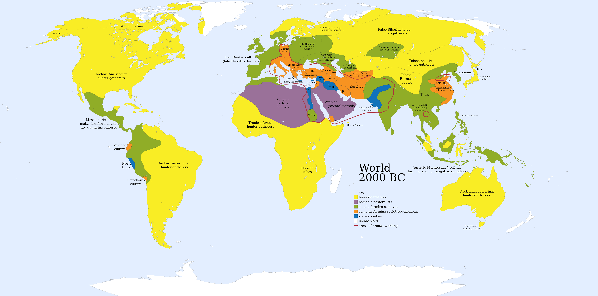

summarized-global-history
name::
* McsEngl.evoluting,
* McsEngl.evolution,
* McsEngl.general-history,
* McsEngl.generic-history,
* McsEngl.global-history,
* McsEngl.summarized-global-history,
* McsEngl.synoptic-global-history,
before-present
before-present::
* {Bp4'500'000'000} EARTH-formation: "According to radiometric dating estimation and other evidence, Earth formed over 4.5 billion years ago." [Wikipedia]
* {Bp3'800'000'000..Bp3'800'000'000} FIRST-ORGANISM: The last universal common ancestor is estimated to have lived. [Wikipedia]
* {Bp521'000'000} BRAIN: first brain structure appeared. [Wikipedia]
* {Bp250'000'000} BRAIN: A new region of the brain developed in mammals, the major parts of which are the hippocampi and amygdalas, often referred to as the limbic system, that deals with more complex functions including emotional, sexual and fighting behaviors. [Wikipedia]
* {Bp66'000'000} Cretaceous–Paleogene (K–Pg) extinction event: which led to the extinction of most dinosaur species, opened up ecological niches and allowed mammals to diversify and occupy new habitats. [ChatGPT]
* {Bp55'000'000} PRIMATES: human ancestors, first appeared. [ChatGPT]
* {Bp7'000'000..Bp6'000'000} HOMINID: Human lineage diverges from that of chimpanzees and bonobos, our closest living relatives. [ChatGPT]
* {Bp3'000'000..Bp2'000'000} HOMO: The genus Homo evolves. Early hominins likely had a range of vocalizations, although not yet what we would recognize as language. [ChatGPT]
* {Bp1'500'000} FIRE: the controlled use of fire, enabling its deliberate creation and maintenance, is thought to have emerged around 1.5 million years ago, coinciding with the emergence of Homo erectus, our early ancestors. [Bard]
* {Bp500'000..Bp200'000} PROTO-LANGUAGE: Homo sapiens' ancestors, such as Homo heidelbergensis or Homo erectus, might have had a form of proto-language. Their vocal tract anatomy begins to resemble modern humans. [ChatGPT]
* {Bp300'000} HOMO-SAPIENT: the earliest fossil evidence in Africa. [Wikipedia]
* {Bp100'000..Bp50'000} MODERN-HUMANS: Anatomically modern humans appear. The capacity for articulate speech likely existed, as evidenced by the anatomy of the vocal tract and the FOXP2 gene, known to be important for language. [ChatGPT]
* {Bp50'000..Bp30'000} UPPER-PALEOLITHIC-REVOLUTION: There's a significant advancement in tool technology, art, and culture, suggesting complex communication and possibly the development of fully-fledged language. [ChatGPT]
* {Bp15'000c} AMERICA: humans crossed the Bering Land Bridge from Asia. [Bard]
before-current-era
before-current-era::
* {Bce10'000c} AGRICULTURE: The first agricultural societies emerged in the Fertile Crescent, a region encompassing parts of modern-day Turkey, Syria, Iraq, Iran, and Egypt. [Bard]
* {Bce6800} SLAVERY: emerges in Mesopotamia, the cradle of civilization, with the rise of agriculture and social stratification. [Bard]
* {Bce5000..Bce4000} CHIFDOMS: emerged in various parts of the world, including Mesopotamia, Mesoamerica, and the Indus Valley Civilization. [Bard]
* {Bce5000..Bce3000} COPPER-AGE: was a critical period of human development marked by the beginnings of metallurgy, profound societal changes, and the groundwork for the more advanced Bronze Age civilizations. [ChatGPT]
* {Bce3300..Bce1200} BRONZE-AGE: marked a pivotal transformation in human civilization, laying the groundwork for the emergence of advanced societies, complex political systems, and the flourishing of culture and technology. [Bard]
* {Bce3200c} WRITING: invented in Egypt due to the flooding of the Nile. [greek-language.gr]
* {Bce3000c} STATES: The first states emerged around 3,000 BCE in Mesopotamia and Egypt. [Bard]
* {Bce3000c} AGRICULTURE: had-spread to China and Southeast Asia. [Bard]
* {Bce3000c} WHEEL: The invention of the wheel for transportation and warfare came later, with the first wheeled vehicles appearing around 3000 BCE. Chariots were introduced around 2500 BCE and revolutionized warfare. [Bard]
* {Bce2800} SYLLABIC-WRITING: the earliest recorded syllables are on tablets in the Sumerian city of Ur. This shift from pictograms to syllables has been called "the most important advance in the history of writing". [Wikipedia]
* {Bce2070..Bce1600} CHINA: Xia dynasty, the first in traditional Chinese historiography. It established many of the institutions that would later characterize Chinese civilization, such as the concept of the Mandate of Heaven, the division of society into classes, and the use of writing. [Bard]
* {Bce1700..Bce1101} HITTITE-KINGDOM: flourished in Anatolia (modern-day Turkey). It was the first empire to form in the region and reached its peak in the 14th century BCE. They were skilled artisans, engineers, and warriors, and they developed a unique system of hieroglyphic writing. [Bard]
* {Bce1754} LAW: The Code of the Babylonian king Hammurabi is one of the earliest and most complete written legal codes. It consists of 282 laws, covering a wide range of topics, including property, contracts, family law, and criminal law. [Bard]
* {Bce1296} WRITTEN PEACE TREATY: the Hittites and the Egyptians signed the Treaty of Kadesh, the first known written peace treaty. [Bard]
* {Bce1194c..Bce1184c} GREEKS: Trojan war.
* {Bce0800c} GREEK-ALPHABET: The Greeks adopted and adapted the Phoenician script, adding vowels, which was a significant innovation. [ChatGPT]
* {Bce0776} GREECE: First Olympiad.
* {Bce0700..Bce0601} CURRENCY: King Alyattes of Lydia (modern-day Turkey) is credited with minting the first known coins, which were made of electrum, a naturally occurring alloy of gold and silver. [Bard]
* {Bce0336..Bce323} GREEKS: Alexander-the-Great.
* {Bce0146} GREECE: Battle of Corinth, beginning of Roman-era.
* {Bce0031} ROMAN-EMPIRE: Octavian defeats Antony and Cleopatra at the Battle of Actium, marking the end of the Roman Republic and the beginning of the Roman Empire. [Bard]
1st-millennium
1st-millennium::
* {0030c} RELIGION: Jesus of Nazareth is crucified by the Roman authorities in Jerusalem. [Bard]
* {0070} JEWISH: diaspora. [wikipedia]
* {0101..0200} PAX ROMANA: the zenith of the Roman Empire, a period of relative peace and prosperity. [Bard]
* {0105} PAPER: In China, Cai Lun invented papermaking. [Bard]
* {220} CHINA: The Han dynasty in China collapses, ushering in a period of political fragmentation and civil war known as the Three Kingdoms period. [Bard]
* {0224..0651} SASANIAN EMPIRE: was a powerful Iranian dynasty that ruled an extensive territory in Western Asia and Central Asia for over four centuries. [Bard]
* {0286} ROMAN EMPIRE: Diocletian divides the empire East and West. [wikipedia]
* {0312} RELIGION: Constantine issued the Edict of Milan, granting religious tolerance to Christians in the Roman Empire, ending centuries of persecution. [Bard]
* {0320..0550} INDIA: The Gupta Empire was an ancient Indian empire that ruled a large part of the Indian subcontinent. It is considered to be a golden age in Indian history, known for its cultural, intellectual, and scientific achievements. [Bard]
* {0330} CONSTANTINOPLE: declared capital of Roman-Empire.
* {0418..0711} VISIGOTHIC-KINGDOM: was founded in southern Gaul by Alaric the Great and eventually expanded into Spain and parts of Italy. The Visigoths played a significant role in shaping the culture and politics of the Iberian Peninsula, adopting Visigothic law and significantly influencing the development of Spanish language and literature. [Bard]
* {0434..0453} HUNS: The Hun Empire reached its peak under the leadership of Attila the Hun. Attila's death led to the collapse of the Hun Empire. [Bard]
* {0476} WESTERN-ROMAN-EMPIRE: fall. [wikipedia]
* {0529..0534} LAW: The Corpus Juris (or Iuris) Civilis ("Body of Civil Law") is the modern name for a collection of fundamental works in jurisprudence, issued by order of Byzantine Emperor Justinian I, in Latin. [Wikipedia]
* {0541..0542} PANDEMIC: one of the first recorded pandemics in history, hitting the Byzantine Empire and Mediterranean port cities. [ChatGPT]
* {0550c} SLAVS: begin to migrate southward into the Balkans, displacing the native populations. [Bard]
* {0570} RELIGION: Birth of Muhammad, who would later found Islam, in Mecca. [ChatGPT]
* {0600} ENVIRONMENT: the Medieval Warm Period reaches peak, with temperatures again as much as 2°C (3.6°F) warmer than today. [Bard]
* {0601..0700} SLAVS: The earliest Slavic kingdoms emerge, including the Principality of Samo, the Principality of Nitra, and the First Bulgarian Empire. [Bard]
* {0618..0907} CHINA: The Tang Dynasty, often regarded as a high point in Chinese civilization, began in the 7th century. This era was marked by great cultural, artistic, and intellectual advancements. [ChatGPT]
* {0632..0661} ISLAM: The Rashidun Caliphate, the first. [Bard]
* {0636} ISLAM: Battle of Qadisiyyah, a decisive victory for the Muslims over the Sassanids, marking the end of Sassanid rule in Mesopotamia. [Bard]
* {0642} ISLAM: Capture of Jerusalem by the Muslims. [Bard]
* {0661..0750} ISLAM: The Umayyad Caliphate, the second, it moved its capital from Medina to Damascus. [Bard]
* {0700..1200} ISLAM: golden era. [wikipedia]
* {0710..0794} JAPAN: Nara Period, a time of great cultural and political development in Japan. [Bard]
* {0711..0718} ISLAM: Umayyad Caliphate conquers Hispania (Spain and Portugal), establishing Al-Andalus, a Muslim kingdom that would last for over 700 years. [ChatGPT]
* {0750..1161} INDIA: Pala Empire in Bengal. [Bard]
* {0750..1258} ISLAM: The Abbasid Caliphate was the third and most powerful. It moved its capital to Baghdad. [Bard]
* {0751} ISLAM: Umayyad forces are defeated by the Tang dynasty at the Battle of Talas, marking the end of Muslim expansion into Central Asia. [ChatGPT]
* {0793} VIKINGS: Viking raiders from Norway attack Lindisfarne, an English monastery, marking the beginning of the Viking Age. [Bard]
* {0800} FRANKS: Charlemagne, king of the Franks, is crowned emperor of the Romans by Pope Leo III, reviving the title of Roman emperor in Western Europe after three centuries. [ChatGPT]
* {0800} CALENDAR: after {0800} AD/BC is-used, that was-devised in {525} by Dionysius-Exiguus. [Wikipedia]
* {0802} CAMBODIA: Jayavarman II establishes the Khmer Empire in Cambodia, laying the foundation for the Angkorian dynasty. [Bard]
* {0809..815} BULGARIANS: Byzantine-Bulgarian Wars: A series of conflicts between the Byzantine Empire and the Bulgarian Khanate, culminating in the Battle of Versinikia, where the Byzantines suffered a severe defeat. [Bard]
* {0840} VIKINGS: Viking settlers found Dublin, Ireland. [Bard]
* {0840} ISLAM: Muslims capture Bari, a key city in southern Italy, strengthening their foothold in the region. [Bard]
* {0843} FRANKS: Treaty of Verdun: Charlemagne's empire is divided among his grandsons, resulting in the creation of three distinct kingdoms: East Francia (later Germany), West Francia (later France), and Middle Francia (which later collapsed into East Francia and West Francia). [Bard]
* {0901} KIEVAN RUS: The city of Kiev is established in what is now Ukraine by Prince Oleg of Novgorod, marking the beginning of the Kievan Rus, a powerful medieval state. [Bard]
* {0909..1171} ISLAM: The Fatimid Caliphate was a Shia caliphate that ruled over North Africa and parts of the Middle East from its capital in Cairo. [Bard]
* {0910} CHINA: Rise of the Song Dynasty - In China, the Song dynasty is established, marking the reunification of the country after the fall of the Tang dynasty and the subsequent Five Dynasties and Ten Kingdoms period. The Song dynasty would go on to become one of China's most prosperous and influential periods. [Bard]
* {0941} VIKINGS: Rus Vikings attack Constantinople (Istanbul), the capital of the Byzantine Empire. [Bard]
* {0986} AMERICA-VIKINGS: Leif Erikson, Erik the Red's son, becomes the first European to land in North America, in an area he calls Vinland, possibly Newfoundland. [Bard]
* {0987} KIEVAN-RUS: Vladimir I of Kiev converts to Christianity after being impressed by the splendor of the Hagia Sophia in Constantinople. [Bard]
* {1000} ENVIRONMENT: the Medieval Warm Period reaches its peak, with temperatures again as much as 2°C (3.6°F) warmer than today. [Bard]
2nd-millennium
2nd-millennium::
* {1001..1100} CURRENCY: paper money introduced in China during the Song dynasty. It was initially issued as receipts for stored grain. [Bard]
* {1037..1243} SELJUK-EMPIRE: [Bard]
* {1042} ENGLAND: Edward the Confessor becomes King of England, marking the end of Danish rule and the return of the Anglo-Saxons. [Bard]
* {1054} RELIGION: The Great Schism divides the Christian Church into the Eastern Orthodox Church and the Roman Catholic Church. [Bard]
* {1066} ENGLAND: The Normans, led by Duke William of Normandy, defeat the English at the Battle of Hastings, marking the end of the Viking Age and the beginning of Norman rule in England. [Bard]
* {1088} UNIVERSITY: of Bologna founded. [ChatGPT]
* {1092} SELJUK-EMPIRE: Partition of the Seljuk Empire into the Rum Seljuk Sultanate in Anatolia and the Great Seljuk Empire in Persia. [Bard]
* {1206} MONGOLS: Temüjin is crowned Genghis Khan, uniting the nomadic tribes of Mongolia under one banner. [Bard]
* {1215} GOVERNANCE: the establishment of the Magna Carta in England in 1215, symbolizing the beginning of constitutional governance. [ChatGPT]
* {1240c} GHANA-EMPIRE: ceases to exist as a unified political entity, though its legacy continues to shape West African history and culture. [Bard]
* {1243} SELJUK-EMPIRE: Final defeat of the Seljuk Turks at the hands of the Mongols at the Battle of Köse Dağ, signaling the end of their empire. [Bard]
* {1258} MONGOLS: The Mongols sack Baghdad, marking the end of the Abbasid Caliphate. [Bard]
* {1260} MONGOLS: The Battle of Ain Jalut: This battle was a significant turning point in the history of the Middle East, where the Mamluks of Egypt defeated the Mongol army. It marked the first substantial defeat of the Mongols and halted their westward expansion. [ChatGPT]
* {1271} MONGOLS-CHINA: Kublai Khan, a grandson of Genghis Khan, establishes the Yuan dynasty in China. [Bard]
* {1299..1923} OTTOMAN-EMPIRE: was one of the longest-lasting and most powerful empires in history. It lasted for over 600 years and spanned three continents. The empire left a lasting legacy on the world, including its architecture, art, cuisine, and language. [Bard]
* {1315..1317} ENVIRONMENT: The "Little Ice Age" begins, bringing colder and wetter conditions to Europe. [Bard]
* {1337..1453} ENGLAND-FRANCE: The Hundred Years' War. This prolonged series of conflicts between England and France ended in the 15th century. It had significant cultural, political, and social impacts on both nations. [ChatGPT]
* {1368..1644} CHINA: Ming dynasty. Its legacy is marked by its cultural vibrancy, technological advancements, and maritime expeditions. However, it also faced challenges such as dynastic decline, peasant unrest, and external threats, ultimately leading to its downfall. [Bard]
* {1402..1975} SPANISH-EMPIRE: [Wikipedia]
* {1405..1507} TIMURID-EMPIRE: Timur, a descendant of Genghis Khan, establishes the Timurid Empire in Central Asia. [Bard]
* {1415..2002} PORTUGUESE-EMPIRE: [Wikipedia]
* {1450} PRINTING: Johann Gutenberg revolutionizes printing with the invention of the printing press, dramatically increasing the demand for paper. [Bard]
* {1453} BYZANTINE-EMPIRE: end. [ChatGPT]
* {1492} AMERICA: Columbus reached the Americas. [ChatGPT]
* {1501..1600} ECONOMY-CAPITALISM: "Although we come across the first beginnings of capitalist production as early as the 14th or 15th century, sporadically, in certain towns of the Mediterranean, the capitalistic era dates from the 16th century." [https://synagonism.net/dirMcs/dirStn/dirHitp/HitpStnEcon002.last.html#idChr26P7]
* {1517..1924} ISLAM: The Ottoman Caliphate was the last major caliphate and was founded by Osman I in the 13th century. The Ottoman Empire conquers Egypt, marking the beginning of Ottoman rule in the Arab world. The Ottoman Caliphate reached its peak in the 16th and 17th centuries, when it controlled a vast empire that stretched from the Balkans to North Africa and the Middle East. [Bard]
* {1533} ENGLAND: Henry VIII breaks from the Catholic Church and establishes the Church of England. [ChatGPT]
* {1582} GREGORIAN-CALENDAR: Pope Gregory XIII issues the Gregorian calendar. The last day of the Julian calendar was Thursday, 4 October 1582 and this was followed by the first day of the Gregorian calendar, Friday, 15 October 1582. [wikipedia]
* {1602} DUTCH: The Dutch East India Company (VOC) is established by merging competing Dutch trading companies. Its success contributes to the Dutch Golden Age. [wikipedia]
* {1613..1917} RUSSIA: The Time of Troubles in Russia ends with the establishment of the House of Romanov, which rules until 1917. [wikipedia]
* {1618..1648} EUROPE: the Thirty Years' War, which devastates Europe. [wikipedia]
* {1625} SCIENCE-LAW: Hugo Grotius book "De jure belli ac pacis (On the Law of War and Peace)" widely regarded as a founder of international law. [wikipedia]
* {1644..1912} CHINA: The Qing dynasty, officially the Great Qing, was the last imperial dynasty of China. It was founded by the Manchus, a Tungusic people from northeastern China, who conquered the Ming dynasty and established their rule over a territory of over 13 million square kilometers (5.1 million square miles), making it one of the largest empires in history. [Bard]
* {1683} OTTOMAN-EMPIRE: Ottoman defeat at the Battle of Vienna, which prevented the Ottomans from conquering further into Europe. [Bard]
* {1687} SCIENCE: Isaac Newton publishes "Principia Mathematica," revolutionizing physics. [ChatGPT]
* {1709} ENVIRONMENT: The Great Frost of 1709 marks the coldest winter in 500 years. [wikipedia]
* {1775..1783} AMERICAN REVOLUTION: [ChatGPT]
* {1776} SCIENCE: Adam-Smith publishes The-Wealth-of-Nations. [wikipedia]
* {1789..1799} FRENCH REVOLUTION: [ChatGPT]
* {1848} EUROPE: The Revolutions of 1848 were a series of political upheavals throughout Europe in 1848. [wikipedia]
* {1853..1856} RUSSIA: When Russia tried expanding its influence in the Balkans, the British and French defeated them in the Crimean War (1853–1856), thereby protecting the Ottoman Empire. [wikipedia]
* {1861..1865} USA: american civil war. [ChatGPT]
* {1865} SLAVERY-USA: The Thirteenth Amendment to the United States Constitution abolishes slavery nationwide, officially ending the institution. [Bard]
* {1876} TECH: first telephone-call. [wikipedia]
* {1886} TECH: Karl-Benz sells the first commercial automobile. [wikipedia]
* {1900} POPULATION: 1,640,000,000 (Asia: 947,000,000 Europe: 408,000,000 America: 156,000,000 Africa: 133,000,000 Oceania: 6,000,000) [wikipedia]
* {1903} AIRPLANE: Wright Brothers' first powered flight.
* {1914..1918} WORLD-WAR-I:
* {1917} RUSSIA: October 1917: The Bolshevik Party, led by Vladimir Lenin, seizes power in the October Revolution. [Bard]
* {1929} ECONOMY-USA: Stock Market Crash, beginning of the Great Depression.
* {1939..1945} WORLD-WAR-II:
* {1945} COMPUTER: The ENIAC (Electronic Numerical Integrator and Computer) is completed at the University of Pennsylvania. It is the first general-purpose electronic digital computer. [Bard]
* {1947..1991} COLD-WAR: capitalism vs socialism.
* {1949} CHINA: The Chinese Civil War ends with the defeat of the Kuomintang, and the establishment of the People's Republic of China on October 1. [Bard]
* {1957} OUTER-SPACE: Launch of Sputnik, start of the Space Age.
* {1969} OUTER-SPACE: Apollo 11, first manned Moon landing, USA. [ChatGPT]
* {1971} NIXON-SHOCK: In an address to the nation on August 15, 1971, U.S. President Richard Nixon announces the suspension of the convertibility of U.S. dollars into gold, effectively ending the Bretton Woods system. [Bard]
* {1986} OUTER-SPACE: Mir Space Station launched, Soviet Union.
* {1990} INTERNET: The World Wide Web is invented by Tim Berners-Lee, which ushers in the era of the internet.
* {1991} SOVIET-UNION: dissolution.
* {1994} EU: The Maastricht Treaty is signed, introducing further political and economic integration within the EC, including the creation of a common currency, the euro. [Bard]
* {1999} EU: The euro is introduced as a common currency in 11 EU countries. [Bard]
* {2000} SMARTPHONE: The first smartphone is released, and it quickly becomes a popular device. Smartphones combine the functionality of a phone with a computer, and they allow people to access the internet, make calls, send texts, take pictures, and play games. [Bard]
3nd-millennium
3nd-millennium::
* {2001} WIKIPEDIA: the free encyclopedia that anyone can edit, created.
* {2001} TERRORISM: The September 11 attacks on the World Trade Center and Pentagon in the United States lead to a global fight against terrorism. [Bard]
* {2002} INTERNATIONAL-CRIMINAL-COURT: began operations with jurisdiction to prosecute individuals for the international crimes of genocide, crimes against humanity, war crimes, and the crime of aggression. (123 members in {2020})
* {2008} GLOBAL-FINANCIAL-CRISIS: plunges the world economy into recession, with far-reaching economic and social consequences. [Bard]
* {2009} BITCOIN: the first decentralized, autonomous, currency.
* {2011} INFOTECH: Intel announces the development of the "Loihi" neuromorphic chip, one of the first commercial neuromorphic processors. [Bard]
* {2016} EU: The United Kingdom votes to leave the European Union, triggering a complex political and economic process. [Bard]
* {2019} QUANTURM-COMPUTER: Google announced that its 54-qubit Sycamore processor performed a specific task in 200 seconds that would take the fastest supercomputer 10,000 years. This claim marked a significant milestone in demonstrating quantum supremacy. [ChatGPT]
* {2020} PANDEMIC: The COVID-19 pandemic sweeps across the globe, causing a public health crisis, economic disruptions, and a reshaping of daily life. [Bard]
* {2022} WAR: The war in Ukraine begins, marking the largest conflict in Europe since World War II, with far-reaching geopolitical and humanitarian consequences. [Bard]
* {2022} AI-CHATBOT: ChatGPT 3,5 published.
* {2023} WAR: Israel destroys Gaza.
timeinterval|stage of evoluting
description::
· stage of evoluting of entity is its doings and structures in a-timeinterval.
name::
* McsEngl.EntEvg'timeinterval,
* McsEngl.entity'stage,
* McsEngl.evoluting'timeinterval,
* McsEngl.stage-of-evoluting,
* McsEngl.staging-of-evoluting,
* McsEngl.timeinterval-of-evoluting,
staging.creating
description::
"(v) create (bring into existence) "The company was created 25 years ago"; "He created a new movement in painting""
[http://wordnetweb.princeton.edu/perl/webwn?s=create]
· the-first staging in the-evolution-of-entity.
* main-noun:
· _stxEngl: _stxTime:[(from) its [creation]] _stxSbj:[the plan] _stxVrb:{was doomed} to failure.
* verb:
· _stxEngl: _stxSbj:[The company] _stxVrb:{was created} _stxTime:[25 years ago]. [WordNet]
name::
* McsEngl.birth!⇒dngCreating,
* McsEngl.building!⇒dngCreating,
* McsEngl.constructing!⇒dngCreating,
* McsEngl.verb.create!~verbEnglB1:creat-e-es-ed-ing-ed!=dngCreating,
* McsEngl.create!~verbEnglB1:creat-e-es-ed-ing-ed!=dngCreating,
* McsEngl.creating-doing,
* McsEngl.creation!⇒dngCreating,
* McsEngl.dngCreating,
* McsEngl.entity'creating!⇒dngCreating,
* McsEngl.establishing!⇒dngCreating,
* McsEngl.founding!⇒dngCreating,
* McsEngl.verb.begin!~verbEnglC:begin-begins-began-begining-begun!=dngCreating,
* McsEngl.begin!~verbEnglC:begin-begins-began-begining-begun!=dngCreating,
* McsEngl.staging.creating!⇒dngCreating,
* McsEngl.staging.starting!⇒dngCreating,
* McsEngl.starting!⇒dngCreating,
====== langoGreek:
* McsElln.γέννηση!η!=dngCreating,
* McsElln.δημιουργία!η!=dngCreating,
* McsElln.ρήμα.δημιουργώ!-ώ-ούμαι!=dngCreating,
* McsElln.δημιουργώ!-ώ-ούμαι!~ρήμα!=dngCreating,
argument of creating
description::
* creator: actor|functor,
* output,
name::
* McsEngl.creating'argument,
output of creating
description::
"(n) creation (an artifact that has been brought into existence by someone)"
[http://wordnetweb.princeton.edu/perl/webwn?s=creation]
name::
* McsEngl.creating'output,
* McsEngl.creation,
* McsEngl.output-of-creating,
====== langoGreek:
* McsElln.δημιούργημα!το!=dngCreating'output,
staging.starting
description::
"(v) get down, begin, get, start out, start, set about, set out, commence (take the first step or steps in carrying out an action) "We began working at dawn"; "Who will start?"; "Get working as soon as the sun rises!"; "The first tourists began to arrive in Cambodia"; "He began early in the day"; "Let's get down to work now""
[{2022-01-13 retrieved} http://wordnetweb.princeton.edu/perl/webwn?s=start]
· _stxZhon: 电影 开始了。 :: _stxSbj:[Diànyǐng] _stxVrb:{kāishǐ le}。 != [the-movie] {has started}.
name::
* McsEngl.dngStarting,
* McsEngl.staging.starting!⇒dngStarting,
* McsEngl.starting-doing,
* McsEngl.verb.start!~verbEnglA1:start--s-ed-ing-ed!=dngStarting,
* McsEngl.start!~verbEnglA1:start--s-ed-ing-ed!=dngStarting,
====== langoChinese:
* McsEngl.kāishǐ-开始!=dngStarting,
* McsZhon.kāishǐ-开始!=dngStarting,
* McsZhon.开始-kāishǐ!=dngStarting,
====== langoGreek:
* McsElln.ρήμα.ξεκινώ:-άω-ώ!=dngStarting,
* McsElln.ξεκινώ!~ρήμα:-άω-ώ!=dngStarting,
staging.dissolving
description::
" (v) dissolve, break up (come to an end) "Their marriage dissolved"; "The tobacco monopoly broke up""
[{2021-08-16 retrieved} http://wordnetweb.princeton.edu/perl/webwn?s=dissolve]
· the-last staging in the-evolution-of-entity.
* doer: actor|functor,
* acton,
* verb:
· _stxEngl: _stxSbj=functor:[Their marriage] _stxObj:[dissolved].
_stxSbj: _stxSbj=actor:[The President] _stxVrb:{dissolved} _stxObj=acton:[the parliament] [(and) called for new elections]. [WordNet]
name::
* McsEngl.dissolution!⇒dngDissolving,
* McsEngl.verb.dissolve!~verbEnglB1:dissolv-e-es-ed-ing-ed,
* McsEngl.dissolve!~verbEnglB1:dissolv-e-es-ed-ing-ed,
* McsEngl.dissolving-doing,
* McsEngl.dngDissolving,
* McsEngl.staging.ending!⇒dngDissolving,
* McsEngl.ending!⇒dngDissolving,
* McsEngl.entity'dngDissolving!⇒dngDissolving,
* McsEngl.staging.dngDissolving!⇒dngDissolving,
====== langoGreek:
* McsElln.διάλυση!η!=dngDissolving,
staging.finishing
description::
· to end-up.
===
· _stxZhon: 我 今天 要 写 完。 :: _stxSbj:[Wǒ] _stxTime:[jīntiān] _stxVrb:{yào} _stxObj:[{xiě} {wán}]. != I need to finish writing it today.
name::
* McsEngl.dngFinishing,
* McsEngl.finishing-doing,
* McsEngl.verb.finish!~verbEnglA4!=dngFinishing,
* McsEngl.finish!~verbEnglA4!=dngFinishing,
* McsEngl.staging.finishing!⇒dngFinishing,
====== langoChinese:
* McsEngl.dòngcí.wán-完!=dngFinishing,
* McsEngl.wán-完!~verbZhon!=dngFinishing,
* McsZhon.完-wán!~verbZhon!=dngFinishing,
staging.non-edge
description::
· the-non-edge staging in the-evolution-of-entity.
name::
* McsEngl.staging.non-edge,
staging.stopping
description::
· a-pause of staging.
* doer: actor|functor,
* acton,
* verb:
· _stxEngl: _stxSbj=actor:[he] _stxVrb:{stopped} _stxObj:[the car].
· _stxEngl: _stxSbj=acton:[the car] _stxVrb:{stopped} _stxArg=actor:[(by) the-driver].
· _stxEngl: _stxSbj=functor:[She] _stxVrb:{stopped} _stxSpace:[(in front of) a store window].
name::
* McsEngl.dngStopping,
* McsEngl.staging.stopping!⇒dngStopping,
* McsEngl.verb.halt!~verbEnglB1:halt--s-ed-ing-ed!=dngStopping,
* McsEngl.halt!~verbEnglB1:halt--s-ed-ing-ed!=dngStopping,
* McsEngl.verb.pause!~verbEnglB1:paus-e-es-ed-ing-ed!=dngStopping,
* McsEngl.pause!~verbEnglB1:paus-e-es-ed-ing-ed!=dngStopping,
* McsEngl.verb.quit!~verbEnglC:quit-quits-quit-quiting-quit!=dngStopping,
* McsEngl.quit!~verbEnglC:quit-quits-quit-quiting-quit!=dngStopping,
* McsEngl.verb.stop!~verbEnglA2:stop--s-ped-ping-ped!=dngStopping,
* McsEngl.stop!~verbEnglA2:stop--s-ped-ping-ped!=dngStopping,
* McsEngl.stopping-doing,
====== langoChinese:
* McsEngl.tíng-停!=dngStopping,
* McsZhon.tíng-停!=dngStopping,
* McsZhon.停-tíng!=dngStopping,
====== langoGreek:
* McsElln.διακόπτω!-ω-ομαι!~ρήμα!=dngStopping,
* McsElln.ρήμα.σταματώ!-ώ-άω-ιέμαι!=dngStopping,
* McsElln.σταματώ!-ώ-άω-ιέμαι!~ρήμα!=dngStopping,
staging.continuing
description::
· resume after interruption.
* doer: actor|functor,
* acton,
* verb:
· _stxEngl: _stxSbj=actor:[We] _stxVrb:{continued} _stxObj=acton:[our research] _stxArg:[into the cause of the illness].
name::
* McsEngl.continuing!⇒dngContinuing,
* McsEngl.dngContinuing,
* McsEngl.verb.continue!~verbEnglB1:continu-e-es-ed-ing-ed,
* McsEngl.continue!~verbEnglB1:continu-e-es-ed-ing-ed,
* McsEngl.staging.continuing!⇒continuing,
====== langoGreek:
* McsElln.συνεχίζω!-ω-ομαι!~ρήμα!=dngContinuing,
staging.waiting
description::
· functing of entity on time for a-reason.
=== děng-等:
· _stxZhon: 我等了很久。 :: _stxSbj:[Wǒ] _stxVrb:{děng le} _stxTime:[hěn jiǔ]. != I waited for a long time.
name::
* McsEngl.fctWaiting,
* McsEngl.staging.waiting!⇒fctWaiting,
* McsEngl.verb.wait!~verbEnglA1!=fctWaiting,
* McsEngl.wait!~verbEnglA1!=fctWaiting,
* McsEngl.wait.Elln!=περιμένω,
* McsEngl.wait.Zhon!=děng-等,
====== langoChinese:
* McsEngl.děng-等!=fctWaiting,
* McsZhon.děng-等!=fctWaiting,
* McsZhon.等-děng!=fctWaiting,
====== langoGreek:
* McsElln.ρήμα.περιμένω!=fctWaiting,
* McsElln.περιμένω!~ρήμα!=fctWaiting,
staging.revolutionizing
description::
"(n) revolution (a drastic and far-reaching change in ways of thinking and behaving) "the industrial revolution was also a cultural revolution""
[{2021-08-16 retrieved} http://wordnetweb.princeton.edu/perl/webwn?s=revolution]
* doer: actor|functor,
* acton,
* main-noun:
· _stxEngl: _stxSbj:[He] _stxVrb:{was afraid} _stxObj:[[[the revolution] [they] _stxVrb:{had started}] _stxVrb:{would fail}]. [HarperCollins]
* verb:
· _stxEngl: _stxSbj=actor:[E-mail] _stxVrb:{revolutionized} _stxObj=acton:[communication] _stxSpace:[in academe]. [WordNet]
name::
* McsEngl.dngRevolutionizing,
* McsEngl.staging.revolutionizing!⇒dngRevolutionizing,
* McsEngl.revolution!⇒dngRevolutionizing,
* McsEngl.verb.revolutionize!~verbEnglB1:revolutioniz-e-es-ed-ing-ed,
* McsEngl.revolutionize!~verbEnglB1:revolutioniz-e-es-ed-ing-ed,
* McsEngl.revolutionizing-doing,
====== langoGreek:
* McsElln.επανάσταση!=dngRevolutionizing,
* McsElln.ρήμα.φέρνω-επανάσταση!=dngRevolutionizing,
* McsElln.φέρνω-επανάσταση!~ρήμα!=dngRevolutionizing,
specific-tree-of-dngRevolutionizing::
* industrial-revolution,
* information-revolution,
* neolithic-revolution,
* scientific-revolution,
* tech-revolution,
staging.transforming
description::
"(v) transform, transmute, transubstantiate (change or alter in form, appearance, or nature) "This experience transformed her completely"; "She transformed the clay into a beautiful sculpture"; "transubstantiate one element into another""
[{2021-08-16 retrieved} http://wordnetweb.princeton.edu/perl/webwn?s=transform]
* doer: actor|functor,
* acton,
* verb:
· _stxEngl: _stxSbj=functor:[Modern ecology] _stxVrb:{transformed} _stxObj:[into a more rigorous science] _stxTime:[in the late 19th century].
name::
* McsEngl.staging.transforming!⇒dngTransforming,
* McsEngl.verb.transform!~verbEnglA1:transform--s-ed-ing-ed,
* McsEngl.transform!~verbEnglA1:transform--s-ed-ing-ed,
* McsEngl.transforming-doing,
====== langoGreek:
* McsElln.μετασχηματίζω!-ω-ομαι!=dngTransforming,
stage.past
description::
· the-evoluting of the-past.
=== lìshǐ-历史!=history:
· _stxZhon: 中国历史很长。 :: Zhōngguó lìshǐ hěn cháng. != China has a long history.
name::
* McsEngl.entity'history,
* McsEngl.entity'past-stage,
* McsEngl.history-of-entity,
* McsEngl.stage.past,
====== langoChinese:
* McsEngl.lìshǐ-历史!=history,
* McsZhon.lìshǐ-历史!=history,
* McsZhon.历史-lìshǐ!=history,
====== langoGreek:
* McsElln.ιστορία!η!=history,
stage.present
description::
· the-evoluting of the-present.
name::
* McsEngl.entity'present,
* McsEngl.stage.present,
stage.future
description::
· the-evoluting of the-future.
name::
* McsEngl.entity'future,
* McsEngl.stage.future,
evoluting.SPECIFIC
description::
* concept-evoluting,
* referent-evoluting,
* phylo-evoluting,
* onto-evoluting,
name::
* McsEngl.EntEvg.specific,
* McsEngl.evoluting.specific,
evoluting.concept
description::
· concept-evoluting is the-evoluting of a-concept, NOT its referent.
· for example, the-evolution of linguistics and language obviously are different.
name::
* McsEngl.EntEvg.concept,
* McsEngl.concept-evoluting,
* McsEngl.evoluting.concept,
{2020-02-19}::
=== merge:
· I merged 'Sympan' into 'entity'.
{2019-09-19}::
=== Sympan-creation:
· creation of Sympan concept.
{2019-09-06}::
=== McsHitp-creation:
· creation of current concept.
evoluting.referent
description::
· referent-evoluting is the-evoluting of the-referent of a-concept[a], NOT the-evoluting of itself[a].
· for example, the-evolution of linguistics and language obviously are different.
name::
* McsEngl.EntEvg.referent,
* McsEngl.evoluting.referent,
* McsEngl.referent-evoluting,
evoluting.phylo
description::
· phylo-evoluting is the-evoluting of a-generic-entity.
name::
* McsEngl.EntEvg.phylo,
* McsEngl.evoluting.phylo,
* McsEngl.phylo-evoluting,
evoluting.onto
description::
· onto-evoluting is the-evoluting of an-individual-entity.
name::
* McsEngl.EntEvg.onto,
* McsEngl.evoluting.onto,
* McsEngl.onto-evoluting,
evoluting.era-vs-age
description::
">era vs age:
The terms "age" and "era" are both used in historical contexts, but they have slightly different meanings and connotations:
1. **Era**: An era is a span of time marked by distinctive characteristics, events, changes, or figures. It often refers to a period in which a particular development or historical force is significantly influential. For example, the "Victorian Era" refers to the period of Queen Victoria's reign, characterized by specific social, cultural, and political norms. Eras can be relatively long, like the "Paleolithic Era," or they can be shorter, defined by significant historical events like the "Renaissance Era."
2. **Age**: An age is similar to an era in that it denotes a period of time, but it is often used to describe a more specific or narrower time frame, characterized by a particular phenomenon, development, or thematic element. For example, the "Iron Age" is defined by the predominant use of iron in tools and weapons. Ages can also reflect cultural or intellectual movements, such as the "Age of Enlightenment," which is known for a specific set of philosophical ideas.
In essence, while both terms refer to periods of time in history, an "era" is often broader and can be defined by political or societal structures, whereas an "age" is typically defined by more specific cultural, technological, or intellectual characteristics. The use of either term can vary depending on the context and the historical perspective being discussed."
[{2024-01-27 retrieved} https://chat.openai.com/c/2f594f79-f192-42af-b514-1296a350e17b]
name::
* McsEngl.evoluting.age-vs-era,
* McsEngl.evoluting.era-vs-age,
====== langoGreek:
* McsElln.εποχή-ιστορίας,
millennium.3000!={2001..3000} of entity
{2001..3000}::
·
* McsEngl.{2001..3000},
* McsEngl.{iK1.3000!=2001..3000},
name::
* McsEngl.03rd-millennium!={2001..3000},
* McsEngl.EntEvg'i1000.3000!={2001..3000},
* McsEngl.millennium.3000!={2001..3000},
century.2100!={2001..2100} of entity
{2001..2100}::
* {2022} techAI: ChatGPT release.
* {2019} COVID-19.
* {2009} Bitcoin.
* {2008} global-financial-crisis,
* {2002} WORLD: International-Criminal-Court creation.
* {2001} USA: War-on-Terror began after September-11-attacks. [wikipedia]
* FOURTH-INDUSTRIAL-REVOLUTION: began at the turn of the century.
* CHINESE-CENTURY: "The Chinese Century (simplified Chinese: 中国世纪; traditional Chinese: 中國世紀; pinyin: Zhōngguó shìjì) is a neologism suggesting that the 21st century may be geoeconomically or geopolitically dominated by the People's Republic of China,[1] similar to how the "American Century" refers to the 20th century and the "British Centuries" to the 18th and 19th, [2] same in the 17-18th centuries dominated by France and the 15-16th centuries dominated by Spain.[3][4] The phrase is used particularly in association with the prediction that the economy of China may overtake the economy of the United States to be the largest in the world.[5] A similar term is China's rise or rise of China (simplified Chinese: 中国崛起; traditional Chinese: 中國崛起; pinyin: Zhōngguó juéqǐ).[6][7]" [{2024-05-02 retrieved} https://en.wikipedia.org/wiki/Chinese_Century]
* McsEngl.{2100i100!=2001..2100},
* McsEngl.{2001..2100},
* McsEngl.{i100.2100!=2001..2100},
name::
* McsEngl.21st-century!={2001..2100},
* McsEngl.EntEvg'21st-century!={2001..2100},
* McsEngl.EntEvg'i100.2100!={2001..2100},
* McsEngl.century.2100!={2001..2100},
century1/3.2100!={2071..2100} of entity
description::
·
* McsEngl.{2071..2100},
* McsEngl.{i33.2100!=2071..2100},
name::
* McsEngl.EntEvg'i33.2100!={2071..2100},
* McsEngl.century1/3.2100!={2071..2100},
century1/3.2070!={2031..2070} of entity
description::
·
* McsEngl.{2031..2070},
* McsEngl.{i33.2070!=2031..2070},
name::
* McsEngl.EntEvg'i33.2070!={2031..2070},
* McsEngl.century1/3.2070!={2031..2070},
decade.2040!={2031..2040} of entity
{2031..2040}::
*
* McsEngl.{2040i10!=2031..2040},
* McsEngl.{2031..2040},
* McsEngl.{i10.2040!=2031..2040},
name::
* McsEngl.4th-decade-of-21st-century!={2031..2040},
* McsEngl.EntEvg'i10.2040!={2031..2040},
* McsEngl.decade.2040!={2031..2040},
century1/3.2030!={2001..2030} of entity
description::
* {2022}:
- WAR: Russia invaded Ukraine in february.
* {2020}:
- EU: from 28 to 27 after UK leaves.
* {2019}:
- COVID-19 pandemic.
* {2011}:
- USA: Navy Seals killed Bin-Laden and buried his body at sea. [wikipedia]
- Arab spring.
* {2009}:
- TECH: Bitcoin.
* {2007..2008}
- ECONOMY: global financial crisis.
* {2002}:
- Euro introduction on 2002-01-01.
* {2001}:
- USA: The War on Terror began after the September 11 attacks in 2001.
">events in 21st century:
The 21st century has been marked by numerous significant events across various domains such as politics, technology, environment, culture, and science. Here are some key events from the 21st century:
1. **Technological Advancements**: The proliferation of the internet and smartphones has revolutionized communication and information access. Social media platforms have transformed social interactions and the dissemination of news.
2. **Global Terrorism and Security**: The September 11, 2001 terrorist attacks in the United States marked a turning point in global security, leading to wars in Afghanistan and Iraq, and a worldwide focus on counter-terrorism.
3. **Climate Change and Environmental Issues**: Increasing awareness and concern about climate change, leading to international agreements like the Paris Agreement. Extreme weather events and natural disasters have also drawn attention to environmental issues.
4. **Economic Developments**: The 2008 global financial crisis had a profound impact on the world economy, leading to significant policy changes in banking and finance.
5. **Advancements in Science and Medicine**: Breakthroughs in genetics, such as the Human Genome Project, and significant advancements in medicine, including the development of vaccines and treatments for various diseases.
6. **Political Changes**: The rise of populism and shifts in political ideologies in many countries. The European Union faced challenges like Brexit, the migrant crisis, and economic disparities among member states.
7. **Cultural and Societal Changes**: Movements like #MeToo and Black Lives Matter have highlighted issues of social justice and equality. There's also been a growing recognition of the importance of mental health.
8. **Space Exploration**: Significant milestones in space exploration, such as the Mars rovers missions, private space companies' endeavors, and plans for manned Mars missions.
9. **Pandemics and Health Crises**: The COVID-19 pandemic, beginning in 2019, has had a global impact, affecting health, economies, and daily life. It has prompted advancements in vaccine technology and public health strategies.
10. **Globalization and International Relations**: Increasing interconnectedness has led to complex international relations, with significant events like the expansion of the European Union, the rise of China as a global power, and shifting alliances and conflicts.
These events reflect the dynamic and interconnected nature of the modern world, where developments in one area can have far-reaching effects on others."
[{2023-12-17 retrieved} https://chat.openai.com/c/d974d562-b9be-42d8-ac65-4cb9e59f860d]
* McsEngl.{2001..2030},
* McsEngl.{i33.2030!=2001..2030},
name::
* McsEngl.Engevg'i33.2030!={2001..2030},
* McsEngl.century1/3.2030!={2001..2030},
decade.2030!={2021..2030} of entity
{2021..2030}::
* {2024}:
* {2023}:
- WAR: Israel invaded Gaza after Hamas october 7 attack.
* {2022}:
- WAR: Russia invaded Ukraine in february.
* {2021}:
- GERMANY: September 26: Germany holds federal elections, marking the end of Angela Merkel's tenure as Chancellor.
- AFGANISTAN: August 15: The Taliban captures Kabul, leading to the collapse of the Afghan government as U.S. and NATO forces withdraw.
- SPACE: February 18: NASA's Perseverance rover successfully lands on Mars, beginning its mission to search for signs of past life.
* McsEngl.{2030i10!=2021..2030},
* McsEngl.{2021..2030},
* McsEngl.{i10.2030!=2021..2030},
name::
* McsEngl.3rd-decade-of-21st-century!={2021..2030},
* McsEngl.EntEvg'i10.2030!={2021..2030},
* McsEngl.decade.2030!={2021..2030},
decade.2020!={2011..2020} of entity
{2011..2020}::
* {2020}:
- EU: from 28 to 27 UK leaves.
* {2019}:
- COVID-19.
* {2018}:
- SAUDI-ARABIA: October 2: Saudi journalist Jamal Khashoggi is murdered inside the Saudi consulate in Istanbul, leading to global outrage and strained relations between Saudi Arabia and Western countries.
- KOREA: April 27: North and South Korean leaders, Kim Jong-un and Moon Jae-in, meet in the Demilitarized Zone and pledge to work towards denuclearization and peace on the Korean Peninsula.
- RUSSIA: March 18: Vladimir Putin is re-elected as President of Russia for a fourth term.
* {2017}:
- TECH: internet: Hackers exploiting malicious software stolen from the National Security Agency executed damaging cyberattacks on Friday that hit dozens of countries worldwide, forcing Britain’s public health system to send patients away, freezing computers at Russia’s Interior Ministry and wreaking havoc on tens of thousands of computers elsewhere. [https://www.nytimes.com/2017/05/12/world/europe/uk-national-health-service-cyberattack.html?]
* {2016}:
- USA: Republican nominee Donald Trump was elected the 45th President of the United States, defeating former U.S. Secretary of State and Democratic nominee Hillary Clinton. He became the first President without prior diplomatic or military experience. [wikipedia]
* {2015}:
- SPACE: December 22: SpaceX successfully lands its Falcon 9 rocket vertically after a mission, marking a significant milestone in space exploration and the potential for reusable rockets.
- REFUGEE: September 2: A photograph of a three-year-old Syrian refugee, Alan Kurdi, whose body washed up on a Turkish beach, goes viral, drawing international attention to the refugee crisis.
- MARRIAGE: May 23: Ireland becomes the first country to legalize same-sex marriage by popular vote.
* {2014}:
- INDIA: May 24: Narendra Modi is sworn in as the Prime Minister of India following a decisive victory for the Bharatiya Janata Party (BJP) in the general elections.
- UKRAINE: February 22: Ukrainian President Viktor Yanukovych is ousted from office after violent protests in Kyiv, leading to the annexation of Crimea by Russia and the outbreak of conflict in Eastern Ukraine.
* {2013}:
- SYRIA: The tiny gas-rich state of Qatar has spent as much as $3bn over the past two years supporting the rebellion in Syria, far exceeding any other government, but is now being nudged aside by Saudi Arabia as the prime source of arms to rebels. [https://ft.com {2013-05-16}]
- EU: from 27 to 28 Croatia joined.
* {2012}:
- SPACE: August 5: NASA's Curiosity rover successfully lands on Mars.
- RUSSIA: March 4: Vladimir Putin wins the presidential election in Russia, returning to the presidency after four years as Prime Minister.
- GREECE: February 21: Greece secures a second bailout from the Eurozone, valued at €130 billion.
* {2011}:
- USA: Navy Seals killed Bin-Laden and buried his body at sea. [http://en.wikipedia.org/wiki/2000-2009]
- LIBYA: Facing protests against his 42-year rule, Muammar Gaddafi refused to step down and sent in the military to brutally quell protests. As a result, many army units defected to the opposition and protests soon turned into an armed rebellion. With international help, the rebels captured Tripoli, and eventually Sirte, Gaddafi's hometown and last outpost, where he was killed. [wikipedia]
- ARABS: It was marked by a wave of revolutions in the Arab World known as the Arab Spring, including the beginnings of several unresolved protest movements and armed conflicts. [http://en.wikipedia.org/wiki/2011]
* EU:
- {2020}: from 28 to 27 UK leaves.
- {2013}: from 27 to 28 Croatia joined.
* EUROPE: In the 2010s Europe had been severely affected by a huge migration from Africa and Middle East. [wikipedia]
* USA: president Obama {2009..2017}, Trump {2017..2021}.
* GERMANY: Chancellor Angela-Merkel since {2005..2021}.
* RUSSIA: president Medvedev {2008..2012}, Putin {2012..}.
* TECH:
- robot: Robotics, particularly drones, had a wide use and application. [wikipedia]
- electric-car: technology and sales showed considerable growth. [wikipedia]
- space: As well as electric cars, sustainable space launch technologies were spearheaded by Elon-Musk. [wikipedia]
* McsEngl.{2020i10!=2011..2020},
* McsEngl.{2011..2020},
* McsEngl.{i10.2020!=2011..2020},
name::
* McsEngl.2nd-decade-of-21st-century!={2011..2020},
* McsEngl.EntEvg'i10.2020!={2011..2020},
* McsEngl.decade.2020!={2011..2020},
decade.2010!={2001..2010} of entity
{2001..2010}::
* {2009}:
- USA: Barack Obama was sworn in as the 44th President of the United States in 2009, becoming the nation's first African American president. [wikipedia]
- TECH: Bitcoin.
- HEALTH: The 2009 H1N1 (swine flu) flu pandemic was also considered a natural disaster. [wikipedia]
* {2007..2008} ECONOMY: The outbreak of this global financial crisis sparked a global recession, beginning in the United States and affecting most of the industrialized world. [wikipedia]
* {2005}: GERMANY: Angela Merkel becomes the first female Chancellor of Germany in 2005. [wikipedia]
* {2004}:
- NATURE: Indian Ocean earthquake, which caused a tsunami that killed around one quarter-million people and displaced well over a million others. [wikipedia]
- TECH: facebook: In 2004, the social network Facebook was launched. By the end of the decade, the site will be ranked 7th in its popularity in the Web, and will have over 350 million active users. [wikipedia]
* {2003}:
- IRAQ-USA: a United States-led coalition invaded Iraq, and the Iraq War led to the end of Saddam Hussein's rule as Iraqi President and the Ba'ath Party in Iraq. [wikipedia]
- SCIENCE: biology: The Human Genome Project was completed, with 99% of the human genome sequenced to 99.99% accuracy. [wikipedia]
* {2002}:
- WORLD: International-Criminal-Court creation.
- EU: Euro introduction in January.
* {2001}:
- USA: The War on Terror began after the September 11 attacks in 2001. [wikipedia]
- ITALY: Silvio Berlusconi becomes Prime Minister of Italy in 2001 and again in 2008, after two years of a government held by Romano Prodi, dominating the political scene for more than a decade and becoming the longest-serving post-war Prime Minister. [wikipedia]
- TECH: wikipedia: was launched, which quickly became the largest and most popular online encyclopedia, and one of the most viewed sites on the web. [wikipedia]
* USA: president G.W.Bush {2001..2009}, Obama {2009..2017}.
* EU:
- 2010: Greek-bailout.
- 2007: from 25 to 27 Bulgaria-Romania joined.
- 2004: from 15 to 25 Cyprus-Czech-Estonia-Hungary-Latvia-Lithuania-Malta-Poland-Slovakia-Slovenia joined.
- 2002-01-01: Euro introduction.
* RUSSIA: president Putin {1999..2008}, Medvedev {2008..2012}.
* CHINA: The early part of the decade saw the long-time predicted breakthrough of economic giant China, which had double-digit growth during nearly the whole decade. [wikipedia]
* TECH: email: continued to be popular throughout the decade and began to replace "snail mail" as the primary way of sending letters and other messages to people in distant locations, though it had been available since 1971.
- Flat panel displays started becoming widely popular in the second half of the decade displacing cathode ray tubes.
- Digital cameras gained massive popularity during the decade. [wikipedia]
* McsEngl.{2010i10!=2001..2010},
* McsEngl.{2001..2010},
* McsEngl.{i10.2010!=2001..2010},
name::
* McsEngl.1st-decade-of-21st-century!={2001..2010},
* McsEngl.2000s!={2001..2010},
* McsEngl.EntEvg'i10.2010!={2001..2010},
* McsEngl.decade.2010!={2001..2010},
millennium.2000!={1001..2000} of entity
{i1000-2000}::
* {1991} USSR: dissolution.
* {1989} INTERNET: www creation.
* {1983} GPS-navigation. [wikipedia]
* {1971} ECONOMY: dollar: the United-States will no longer convert dollars to gold at a fixed value, effectively ending the Bretton Woods system. [wikipedia]
* {1969} Internet, Moon landing. [wikipedia]
* {1957} satellite. [wikipedia]
* {1942} nuclear-reactor. [wikipedia]
* {1945} Computer digital, programable, Turing-complete. [wikipedia]
* {1932} television. [wikipedia]
* {1928} DNA. [wikipedia]
* {1917} Russia: worker's revolution.
* {1903} airplane. [wikipedia]
* {1869} plastic. [wikipedia]
* {1837} photography. [wikipedia]
* {1833} internal-combustion-engine. [wikipedia]
* {1832} telegraph. [wikipedia]
* {1804} POPULATION: World population reaches 1 billion. [wikipedia]
* {1776} USA. [wikipedia]
* {1721..1917} Russian-empire. [wikipedia]
* {1712} Steam-engine. [wikipedia]
* {1644..1912} China: Qing-dynasty. [wikipedia]
* {1605..1960} French-colonial-empire. [wikipedia]
* {1583..1997} British-empire. [wikipedia]
* {1575..1600} Low-countries: first capitalist-revolution. [Marx]
* {1543..1975} Dutch Empire. [wikipedia]
* {1501..1600} ECONOMY: capitalism. [Marx]
* {1494} ECONOMY: double-entry accounting. [wikipedia]
* {1492} Guanahaní-Bahamas visited by Christopher-Columbus' first voyage. [wikipedia]
* {1455} Gutenberg Bible, of the earliest major books printed. [wikipedia]
* {1453} Byzantine-empire: {0330..1453}. [wikipedia]
* {1415..2002} Portuguese Empire. [wikipedia]
* {1402..1975} Spanish Empire. [wikipedia]
* {1299..1924} Ottoman Empire. [wikipedia]
* {1200--0700} Islamic golden era. [wikipedia]
* {1037..1194} Seljuk Empire. [wikipedia]
* RENAISSANCE: the migration of Greek scholars and texts to Italy, and Johannes-Gutenberg's invention of printing-press played key roles in the development of Renaissance. [wikipedia]
* POPULATION: from about 310-million in {1000} to about 6-billion in {2000}. [wikipedia]
">events in 2nd millennium:
The 2nd millennium, spanning the years 1001 to 2000, was marked by significant events, developments, and transformations in various fields including politics, science, culture, and technology. Here are some key events:
1. **The High and Late Middle Ages (1000-1300)**: This period saw significant developments in Europe, including the Crusades to the Holy Land, the flourishing of medieval chivalry and knighthood, and the construction of iconic Gothic cathedrals.
2. **The Renaissance (14th to 17th Century)**: Originating in Italy, the Renaissance was a period of great cultural and intellectual growth, marked by advances in art, science, and literature. Figures like Leonardo da Vinci and Michelangelo exemplified the spirit of the Renaissance.
3. **The Age of Exploration (15th to 17th Century)**: This era was characterized by extensive overseas exploration, led by figures like Christopher Columbus, Vasco da Gama, and Ferdinand Magellan, which resulted in the European discovery and colonization of the Americas.
4. **The Protestant Reformation (16th Century)**: Initiated by Martin Luther's 95 Theses in 1517, this movement led to significant religious and political upheaval and the establishment of Protestant churches separate from the Roman Catholic Church.
5. **The Scientific Revolution (16th to 18th Century)**: This was a period of major advances in science and mathematics, with figures like Isaac Newton and Galileo Galilei laying the groundwork for modern physics and astronomy.
6. **The Enlightenment (17th to 19th Century)**: An intellectual and philosophical movement that dominated Europe, emphasizing reason, individualism, and skepticism of traditional doctrines.
7. **The Industrial Revolution (18th to 19th Century)**: Starting in Britain, this period saw a shift from agrarian societies to industrialized cities, driven by advancements in technology and production methods.
8. **World Wars I and II (1914-1918, 1939-1945)**: These global conflicts reshaped the political, cultural, and social landscape of the world, leading to significant changes in global power structures and the establishment of the United Nations in 1945.
9. **The Cold War (1947-1991)**: A period of geopolitical tension between the Soviet Union and the United States, marked by political, military, and economic struggles.
10. **Technological Advancements and the Information Age**: The latter half of the 20th century saw rapid advancements in technology, including the development of computers, the Internet, and significant progress in medicine and science.
These events, among many others, shaped the course of human history and set the stage for the developments of the current millennium.
[{2023-12-17 retrieved} https://chat.openai.com/c/4e7b84b6-5a3d-4ff7-990c-0e747b1400db]
">events in 2nd millennium:
The 2nd millennium AD encompasses a vast period of history, spanning from the year 1001 to the year 2000. During this millennium, the world witnessed significant transformations in politics, society, culture, and technology.
*
* **Political Landscape**
* The 2nd millennium AD saw the rise and fall of empires, the emergence of new nations, and the ongoing struggle for power and influence. Major events included:
* - **The fragmentation of the Western Roman Empire (5th century AD)**: The once-mighty Roman Empire crumbled, giving way to a period of instability and political fragmentation in Europe.
* - **The rise of Islam (7th century AD)**: The Prophet Muhammad's teachings spread rapidly throughout the Arabian Peninsula, leading to the establishment of the Islamic Caliphate, which extended its rule across vast territories.
* - **The Crusades (11th-13th centuries AD)**: Religious conflicts between Christians and Muslims erupted in a series of wars known as the Crusades, profoundly impacting the political and cultural landscape of the Mediterranean region.
* - **The European Renaissance (14th-17th centuries AD)**: A revival of learning and artistic expression swept through Europe, leading to significant advancements in science, literature, and art.
* - **The Age of Revolutions (18th-19th centuries AD)**: A wave of revolutions challenged established monarchies and political systems, leading to the rise of democracies and the formation of new nation-states.
*
* **Social and Cultural Transformations**
* The 2nd millennium AD witnessed profound social and cultural shifts, including:
* - **The expansion of trade and commerce** (10th-16th centuries AD): The establishment of trade routes linked different parts of the world, fostering cultural exchange and the spread of ideas.
* - **The development of new technologies** (13th-19th centuries AD): The invention of the printing press, the advancement of maritime navigation, and the rise of scientific inquiry revolutionized communication, transportation, and understanding of the natural world.
* - **The growth of cities and urbanization** (15th-20th centuries AD): The expansion of trade and commerce led to the growth of cities, transforming the urban landscape and shaping social dynamics.
* - **The rise of individualism and questioning of traditional authority** (16th-20th centuries AD): The Renaissance and Enlightenment eras saw a growing emphasis on individual freedom, questioning of established norms, and the development of new philosophies.
*
* **The Impact of Technology**
* Technology played a pivotal role in shaping the 2nd millennium AD, with inventions and advancements driving societal transformations. Key milestones included:
* - **The invention of gunpowder (10th century AD)**: Gunpowder revolutionized warfare and weaponry, altering the nature of conflicts.
* - **The development of the compass and navigational tools (12th century AD)**: These advancements enabled explorers to venture further into the oceans and discover new lands.
* - **The rise of printing press (15th century AD)**: The ability to mass-produce books and disseminate information had a profound impact on education, literacy, and the spread of knowledge.
* - **The Industrial Revolution (18th-19th centuries AD)**: The mechanization of production and the use of steam power transformed industries, economies, and living standards.
* - **The development of electricity and communication technologies (19th-20th centuries AD)**: These innovations revolutionized communication, transportation, and the modern world's interconnectedness."
[{2023-12-17 retrieved} https://bard.google.com/chat/4b7591ac67366b0f]
* McsEngl.{1001..2000},
* McsEngl.{iK1.2000!=1001..2000},
* McsEngl.{iK1.K1x002!=1001..2000},
name::
* McsEngl.Bp01st-millennium,
* McsEngl.02nd-millennium!={1001..2000},
* McsEngl.EntEvg'i1000.2000!={1001..2000},
* McsEngl.millennium.2000!={1001..2000},
century.2000!={1901..2000} of entity
{1901..2000}-entity::
* {1991} USSR: dissolution.
* {1983} GPS-navigation.
* {1971} ECONOMY: dollar: August 15 President Richard Nixon announces that the United States will no longer convert dollars to gold at a fixed value, effectively ending the Bretton Woods system. He also imposes a 90-day freeze on wages, prices and rents. [wikipedia]
* {1969} USA: Internet, Apollo-11's lunar module Eagle lands on the Moon's surface.
* {1957} USSR: launches Sputnik-1, the-first artificial-satellite to orbit the-Earth.
* {1949} PRC: On October 1, 1949, the People's Republic of China (PRC) was founded.
* {1945} COMPUTER: ENIAC was the-first programmable, electronic, Turing-complete, general-purpose digital-computer for the-US-army.
* {1945} UN: founding negotiations begin in San-Francisco.
* {1942} TECH: nuclear-reactor.
* {1939..1945} WORLD-WAR-II.
* {1932} TECH: television.
* {1929} USA: Wall-Street crash.
* {1928} DNA.
* {1918..1920} Spanish flu pandemic.
* {1917} RUSSIA: worker's revolution.
* {1914..1918} WORLD-WAR-I.
* {1903} TECH: airplane: Wright-brothers fly an-aircraft with a-petrol-engine, at North-Carolina, the first documented and successful powered and controlled heavier-than-air flight.
* {1901} TECH: photography became available for the mass-market in 1901 with the introduction of the Kodak Brownie. [https://en.wikipedia.org/wiki/History_of_photography]
">events in 20th century:
The 20th century was a tumultuous and transformative period in human history, marked by both immense progress and devastating conflicts. It witnessed the rise and fall of empires, the emergence of new technologies and ideologies, and the struggle for social justice and equality. Here are some of the key events that shaped the century:
**World War I (1914-1918)**: The "Great War" was the deadliest conflict in human history to that point, leaving over 16 million people dead and millions more injured. It toppled empires, reshaped national borders, and ushered in the era of total war.
**The Russian Revolution (1917-1923)**: The overthrow of the Tsarist regime and the establishment of a communist state under Vladimir Lenin marked a turning point in world history. The revolution inspired communist movements around the globe, and the Soviet Union emerged as a major global power.
**The Great Depression (1929-1939)**: The global economic collapse triggered by the stock market crash of 1929 plunged millions into poverty and despair. The hardship fueled political instability and laid the groundwork for the rise of authoritarian regimes.
**The Rise of Dictatorships** (1920s-1940s): The interwar period saw the rise of totalitarian regimes, led by figures such as Adolf Hitler, Benito Mussolini, and Joseph Stalin. These regimes suppressed individual freedoms, engaged in aggressive expansionism, and plunged the world into the Second World War.
**World War II (1939-1945)**: The second global conflict in a generation was even more devastating than the first, claiming over 70 million lives. It saw the use of unprecedented military force, the Holocaust, and the dawn of the nuclear age.
**Decolonization and the Cold War (1945-1991)**: The aftermath of World War II saw the dismantling of European empires and the independence of many former colonies. The subsequent period was dominated by the Cold War, a geopolitical rivalry between the United States and the Soviet Union.
**The Space Race and the Digital Revolution (1950s-1990s)**: The Cold War rivalry fueled the space race, culminating in the first human moon landing in 1969. Meanwhile, the development of computers and the internet ushered in the digital revolution, transforming communication and society.
**Civil Rights Movements and Globalization (1950s-Present)**: The mid-20th century saw a surge of civil rights movements, challenging discrimination and advocating for equality. Globalization, driven by advances in transportation and communication, has connected the world more closely than ever before.
These are just a few of the many significant events that shaped the 20th century. It was a period of both immense suffering and remarkable progress, leaving an enduring legacy on the world we inhabit today."
[{2023-12-19 retrieved} https://bard.google.com/chat/27e4a209b10a4f64]
">events in 20th century:
The 20th century was a period of tremendous change and significant events across the globe. Some key events include:
1. **World War I (1914-1918)**: A global war centered in Europe, it involved many of the world's great powers and was one of the deadliest conflicts in history.
2. **Russian Revolution (1917)**: The revolution led to the fall of the Russian Empire and the rise of the Soviet Union.
3. **Women's Suffrage Movements**: Across various countries, women fought for and gained the right to vote, notably in the U.S. in 1920 and the UK in 1918 and 1928.
4. **The Great Depression (1929)**: A severe worldwide economic depression that took place during the 1930s.
5. **World War II (1939-1945)**: Another global war, it involved the vast majority of the world's nations and was marked by significant events like the Holocaust and the atomic bombings of Hiroshima and Nagasaki.
6. **Decolonization and Independence Movements**: Many countries in Asia and Africa gained independence from European colonial powers.
7. **Cold War (1947-1991)**: A period of geopolitical tension between the Soviet Union and the United States and their respective allies.
8. **Space Race**: This was part of the Cold War, seeing milestones like the first human in space (Yuri Gagarin, 1961) and the moon landing (Apollo 11, 1969).
9. **Civil Rights Movement**: In the United States, this movement, especially during the 1950s and 1960s, fought against racial segregation and discrimination.
10. **Fall of the Berlin Wall (1989)**: This event symbolized the end of the Cold War and led to German reunification.
11. **Technological Advancements**: The century saw significant advancements in technology, including the development of computers, the internet, and various medical breakthroughs.
12. **Environmental Awareness**: The latter part of the century saw a growing awareness of environmental issues, leading to movements and policies aimed at protecting the planet.
These events, among others, shaped the social, political, and cultural landscape of the 20th century and continue to influence the world today."
[{2023-12-19 retrieved} https://chat.openai.com/c/be784358-d194-4b1d-9a69-c5a279f0111f]
* EVOLUTION.SOCIETY,
* EVOLUTION.UN-MEMBERS,
* McsEngl.{2000i100!=1901..2000},
* McsEngl.{1901..2000},
* McsEngl.{i100.2000!=1901..2000},
name::
* McsEngl.20th-century!={1901..2000},
* McsEngl.EntEvg'20th-century!={1901..2000},
* McsEngl.EntEvg'i100.2000!={1901..2000},
* McsEngl.century.2000!={1901..2000},
century1/3.2000!={1971..2000} of entity
description::
* {1991} USSR: dissolution.
* {1983} GPS-navigation.
* {1971} ECONOMY: dollar: August 15 President Richard Nixon announces that the United States will no longer convert dollars to gold at a fixed value, effectively ending the Bretton Woods system. He also imposes a 90-day freeze on wages, prices and rents. [wikipedia]
* McsEngl.{1971..2000},
* McsEngl.{i33.2000!=1971..2000},
name::
* McsEngl.EntEvg'i33.2000!={1971..2000},
* McsEngl.century1/3.2000!={1971..2000},
decade.2000!={1991..2000} of entity
{1991..2000}::
* USA: president G.H.W.Bush {1989..1993}, Clinton {1993..2001}.
* RUSSIA: president Yeltsin {1991..1999}, Putin {1999..2008}.
* TECH: mobile-phone: gained massive popularity worldwide during the decade. [wikipedia]
* {1997..2000} ECONOMY: The dot-com bubble of 1997–2000 brought wealth to some entrepreneurs before its crash between 2000 and 2001. [wikipedia]
* {1997} TECH: Google search-engine launched. [wikipedia]
* {1996} AFGHANISTAN: The Taliban seize control. [wikipedia]
* {1995} EU: from 12 to 15 member, Austria-Finland-Sweden joined.
* {1993} EU: with Maastricht-treaty from EC to EU.
* {1993..1994} TECH: www: English scientist Sir Timothy Berners-Lee invented the World Wide Web in 1989. He wrote the first web browser in 1990 while employed at CERN near Geneva, Switzerland.[3][4] The browser was released outside CERN to other research institutions starting in January 1991, and then to the general public in August 1991. The Web began to enter everyday use in 1993-4, when websites for general use started to become available.[5] The World Wide Web has been central to the development of the Information Age, and is the primary tool billions of people use to interact on the Internet. [wikipedia]
* {1991..1995} YUGOSLAVIA: The Yugoslav Wars (1991–1995) – The breakup of Yugoslavia beginning on 25 June 1991 after the republics of Croatia and Slovenia declared independence from Yugoslavia which was followed by the subsequent Yugoslav wars. The Yugoslav Wars would become notorious for numerous war crimes and human rights violations such as ethnic cleansing and genocide committed by all sides. [wikipedia]
* McsEngl.{2000i10!=1991..2000},
* McsEngl.{1991..2000},
* McsEngl.{i10.2000!=1991..2000},
name::
* McsEngl.1990s!={1991..2000},
* McsEngl.10th-decade-of-20th-century!={1991..2000},
* McsEngl.EntEvg'i10.2000!={1991..2000},
* McsEngl.decade.2000!={1991..2000},
decade.1990!={1981..1990} of entity
{1981..1990}::
* EU: from 9 to 12 members. {1985} Spain-Portugal, {1981} Greece.
* SOUTH-AMERICAS: Military dictatorships give way to democracy in Argentina (1983), Uruguay (1984–85), Brazil (1985–1988) and Chile (1988–89). Marking the end of the Operation Condor for 30 years. [wikipedia]
* HEALTH: The AIDS epidemic became recognized in the 1980s and has since killed an estimated 39 million people (as of 2013). [wikipedia]
* NATURE: Global warming became well known to the scientific and political community in the 1980s. [wikipedia]
* POPULATION: The 1980s was also an era of tremendous population growth around the world, surpassing even the 1970s and 1990s, thus arguably being the largest in human history. Population growth was particularly rapid in a number of African, Middle Eastern, and South Asian countries during this decade, with rates of natural increase close to or exceeding 4% annually. [wikipedia]
* {1990} LIBANON: Lebanese Civil War (1975–1990) – Throughout the decade, Lebanon was engulfed in civil war between Islamic and Christian factions. [wikipedia]
* {1989} EUROPE: At the end of the decade, the fall of the Berlin Wall in 1989 would be followed in 1990 by the German reunification. During 1989, most of the communist governments in Eastern Europe collapsed. [wikipedia]
* {1989} CHINA: The Tiananmen Square protests, in which pro-democracy protesters demanded political reform. The protests were crushed by the People's Liberation Army. [wikipedia]
* {1987} ISRAEL: The First Intifada (First Uprising) in the Gaza Strip and West Bank began in 1987 when Palestinian Arabs mounted large-scale protests against the Israeli military presence in the Gaza Strip and West Bank, largely inhabited by Palestinians. The First Intifada would continue until peace negotiations began between the Palestinian Liberation Organization (PLO) and the Israeli government in 1993. [wikipedia]
* {1987} ECONOMY: The "Black Monday" stock market crash on October 19, 1987, decreased the value of the Dow Jones Industrial Average by more than 22%, causing widespread secondary drops in world markets. [wikipedia]
* {1986} TECH: space: On January 28, 1986, the NASA Space Shuttle Challenger disintegrated 73 seconds after launch, killing all of the crew on board. This was the first disaster involving the destruction of a NASA space shuttle. A faulty O-ring was the cause of the accident. [wikipedia]
* {1986} TECH: nuclear: On April 26, 1986, the Chernobyl disaster, a large-scale nuclear meltdown in the Ukrainian SSR, Soviet Union, spread a large amount of radioactive material across Europe, killing 47 people, dooming countless others to future radiation-related cancer, and causing the displacement of 300,000 people. [wikipedia]
* {1985} USSR: Mikhail Gorbachev became leader of the Soviet Union in 1985, and initiated major reforms to the Soviet Union's government through increasing the rights of expressing political dissent and opening elections to opposition candidates (while maintaining legal dominance of the Communist Party). Gorbachev pursued negotiation with the United States to decrease tensions and eventually end the Cold War. [wikipedia]
* {1982} USSR: In November 1982, Leonid Brezhnev, who had led the Soviet Union since 1964, died. He was followed in quick succession by Yuri Andropov, the former KGB chief, and Konstantin Chernenko, both of whom were in poor health during their short tenures in office. [wikipedia]
* McsEngl.{1990i10!=1981..1990},
* McsEngl.{1981..1990},
* McsEngl.{i10.1990!=1981..1990},
name::
* McsEngl.1980s!={1981..1990},
* McsEngl.9th-decade-of-20th-century!={1981..1990},
* McsEngl.EntEvg'i10.1990!={1981..1990},
* McsEngl.decade.1990!={1981..1990},
decade.1980!={1971..1980} of entity
{1971..1980}::
* AFRICA: saw further decolonization in the decade, with Angola and Mozambique gaining their independence in 1975 from the Portuguese Empire after the restoration of democracy in Portugal. The continent was, however, plagued by endemic military coups, with the long-reigning Emperor of Ethiopia Haile Selassie being removed, civil wars and famine. [wikipedia]
* DEVELOPING-COUNTRIES: The economies of much of the developing world continued to make steady progress in the early 1970s because of the Green Revolution. However, their economic growth was slowed by the oil crisis, although it boomed afterwards. [wikipedia]
* CHINA: affairs regarding the People's Republic of China changed significantly following the recognition of the PRC by the United Nations, the death of Mao Zedong and the beginning of market liberalization by Mao's successors. [wikipedia]
* JAPAN: Despite facing an oil crisis due to the OPEC embargo, the economy of Japan witnessed a large boom in this period, overtaking the economy of West Germany to become the second-largest in the world. [wikipedia]
* {1981} TECH: personal-computer: The personal computer experienced explosive growth in the 1980s, transitioning from a hobbyist's toy to a full-fledged consumer product. The IBM PC, launched in 1981, became the dominant computer for professional users. [wikipedia]
* {1980} USA: art: Musician and former member of the Beatles John Lennon was assassinated in New York City on December 8, 1980. [wikipedia]
* {1980} USA: Ronald Reagan was elected U.S. President in 1980. In international affairs, Reagan pursued a hardline policy towards preventing the spread of communism, initiating a considerable buildup of U.S. military power to challenge the Soviet Union. [wikipedia]
* {1979} IRAN: Political tensions in Iran exploded with the Iranian Revolution in 1979, which overthrew the Pahlavi dynasty and established an authoritarian Islamic republic under the leadership of the Ayatollah Khomeini. [wikipedia]
* {1979} AFGANISTAN: the Soviet Union invaded Afghanistan, which led to an ongoing war for ten years. [wikipedia]
* {1979} UK: In the United Kingdom, the 1979 election resulted in the victory of its Conservative leader Margaret Thatcher, the first female British Prime Minister. [wikipedia]
* {1979} TECH: neuclear: On March 28, 1979, Three Mile Island accident. [wikipedia]
* {1978} ISRAEL-EGYPT: On September 17, 1978 the Camp David Accords are signed between Israel and Egypt. The Accords led directly to the 1979 Egypt–Israel Peace Treaty. They also resulted in Sadat and Begin sharing the 1978 Nobel Peace Prize. [wikipedia]
* {1978} VATICAN-CITY-STATE: 1978 would become known as the "Year of Three Popes". In August, Paul VI, who had ruled since 1963, died. His successor was Cardinal Albino Luciano, who took the name John Paul. But only 33 days later, he was found dead, and the Catholic Church had to elect another pope. On October 16, Karol Wojtyła, a Polish cardinal, was elected, becoming Pope John Paul II. He was the first non-Italian pope since 1523. [wikipedia]
* {1977} SPAIN: Francisco Franco died after 39 years in power. Juan Carlos I was crowned king of Spain and called for the reintroduction of democracy. The dictatorship in Spain ended. The first general elections were held in 1977 and Adolfo Suárez became Prime minister of Spain after his Centrist Democratic Union won. The Socialist and Communist parties were legalized. The current Spanish Constitution was signed in 1978. [wikipedia]
* {1975..1990} LIBANON: Lebanese Civil War – Throughout the decade, Lebanon was engulfed in civil war between Islamic and Christian factions. [wikipedia]
* {1975..1979} CAMBODIA: the Khmer Rouge carried out the Cambodian genocide that killed nearly two million. [wikipedia]
* {1974} USA: United States President Richard Nixon resigned as president on August 9, 1974, while facing charges for impeachment for the Watergate scandal. [wikipedia]
* {1973} ECONOMY: The crisis saw the first instance of stagflation which began a political and economic trend of the replacement of Keynesian economic theory with neoliberal economic theory, with the first neoliberal governments being created in Chile, where a military coup led by Augusto Pinochet took place in 1973. [wikipedia]
* {1971} ECONOMY: dollar: August 15 President Richard Nixon announces that the United States will no longer convert dollars to gold at a fixed value, effectively ending the Bretton Woods system. He also imposes a 90-day freeze on wages, prices and rents. [wikipedia]
* McsEngl.{1980i10!=1971..1980},
* McsEngl.{1971..1980},
* McsEngl.{i10.1980!=1971..1980},
name::
* McsEngl.8th-decade-of-20th-century!={1971..1980},
* McsEngl.EntEvg'i10.1980!={1971..1980},
* McsEngl.decade.1980!={1971..1980},
century1/3.1970!={1931..1970} of entity
description::
* {1969} USA: Internet, Apollo-11's lunar module Eagle lands on the Moon's surface.
* {1957} TECH-USSR: launches Sputnik-1, the-first artificial-satellite to orbit the-Earth.
* {1949} PRC: On October 1, 1949, the People's Republic of China (PRC) was founded.
* {1945} COMPUTER: ENIAC was the-first programmable, electronic, Turing-complete, general-purpose digital-computer for the-US-army.
* {1945} UN: founding negotiations begin in San-Francisco.
* {1942} TECH: nuclear-reactor.
* {1939..1945} WORLD-WAR-II.
* {1932} TECH: television.
* McsEngl.{1931..1970},
* McsEngl.{i33.1970!=1931..1970},
name::
* McsEngl.EntEvg'i33.1970!={1931..1970},
* McsEngl.century1/3.1970!={1931..1970},
decade.1970!={1961..1970} of entity
{1961..1970}::
* {1969} LIBYA: On 1 September 1969, a small group of military officers led by the army officer Muammar Gaddafi overthrows monarchy in Libya. [wikipedia]
* {1969} TECH: space: On 20 July 1969, Apollo 11, the first human spaceflight landed on the Moon.
- Internet: Arpanet, the research-oriented prototype of the Internet, was introduced. [wikipedia]
* {1968} USA: 4 April 1968 – Martin Luther King Jr., civil rights leader. Assassinated by James Earl Ray in Memphis, Tennessee. [wikipedia]
* {1968} CHECHOSLOVAKIA: 1968 was the year of Alexander Dubček's Prague Spring, a source of inspiration to many Western leftists who admired Dubček's "socialism with a human face". The Soviet invasion of Czechoslovakia in August ended these hopes and also fatally damaged the chances of the orthodox communist parties drawing many recruits from the student protest movement. [wikipedia]
* {1968} FRANCE: The May 1968 student and worker uprisings. [wikipedia]
* {1967} ISRAEL: Six-Day War (June 1967) – a war between Israel and the neighboring states of Egypt, Jordan, and Syria. The Arab states of Iraq, Saudi Arabia, Sudan, Tunisia, Morocco and Algeria also contributed troops and arms.[14] At the war's end, Israel had gained control of the Sinai Peninsula, the Gaza Strip, the West Bank, East Jerusalem, and the Golan Heights. The results of the war affect the geopolitics of the region to this day. [wikipedia]
* {1967} CHE-GUEVARA: The Argentine revolutionary Ernesto "Che" Guevara travelled to Africa and then Bolivia in his campaigning to spread worldwide revolution. He was captured and executed in 1967 by the Bolivian army, and afterwards became an iconic figure for the left wing around the world. [wikipedia]
* {1967} GREECE: On 21 April 1967, in Greece a group of colonels established a military dictatorship for seven years. [wikipedia]
* {1967} HEALTH: First heart transplantation operation by Professor Christiaan Barnard in South Africa. [wikipedia]
* {1966..1976} CHINA: Cultural Revolution in China – a period of widespread social and political upheaval in the People's Republic of China which was launched by Mao Zedong, the chairman of the Communist Party of China. Mao alleged that "liberal bourgeois" elements were permeating the party and society at large and that they wanted to restore capitalism. Mao insisted that these elements be removed through post-revolutionary class struggle by mobilizing the thoughts and actions of China's youth, who formed Red Guards groups around the country. The movement subsequently spread into the military, urban workers, and the party leadership itself. Although Mao himself officially declared the Cultural Revolution to have ended in 1969, the power struggles and political instability between 1969 and the arrest of the Gang of Four in 1976 are now also widely regarded as part of the Revolution. [wikipedia]
* {1964} USSR: In October 1964, Soviet leader Nikita Khrushchev was expelled from office due to his increasingly erratic and authoritarian behavior. Leonid Brezhnev and Alexei Kosygin then became the new leaders of the Soviet Union. [wikipedia]
* {1964} TECH: minicomputer: The first successful Minicomputer, Digital Equipment Corporation's 12-bit PDP-8, was marketed. [wikipedia]
* {1963} USA: John Fitzgerald Kennedy, the 35th President of the United States, was assassinated in Dallas, Texas. [wikipedia]
* {1963} VIET-NAM: In 1963, a coup in South Viet Nam leads to the death of President Ngô Đình Diệm and the establishment of temporary military rule. [wikipedia]
* {1961} GERMANY: Construction of the Berlin Wall 1961 to prevent East Germans from escaping to the West. [wikipedia]
* {1961} SOUTH-KOREA: On 16 May 1961, a coup in South Korea led by army officer Park Chung-hee made the establishment of temporary military rule. [wikipedia]
* {1961} TECH: space: The Soviets sent the first man, Yuri Gagarin, into outer space during the Vostok 1 mission on 12 April 1961.
- robot: Unimate, the first industrial robot, was introduced.
[wikipedia]
* {1960} TURKEY: On 27 May 1960, a coup in Turkey led by Cemal Gürsel and Cemal Madanoğlu overthrew the government of Adnan Menderes. [wikipedia]
* {1960} HEALTH: The female birth-control contraceptive, the pill, was released in the United States after Food and Drug Administration (FDA) approval. [wikipedia]
* AFRICA: the 1960s was a period of radical political change as 32 countries gained independence from their European colonial rulers. [wikipedia]
* CULTURE: The counterculture movement dominated the second half of the 1960s, its most famous moments being the Summer of Love in San Francisco in 1967, and the Woodstock Festival in upstate New York in 1969. Psychedelic drugs, especially LSD, were widely used medicinally, spiritually and recreationally throughout the late 1960s, and were popularized by Timothy Leary with his slogan "Turn on, tune in, drop out". Ken Kesey and the Merry Pranksters also played a part in the role of "turning heads on". Psychedelic influenced the music, artwork and films of the decade, and a number of prominent musicians died of drug overdoses (see 27 Club). There was a growing interest in Eastern religions and philosophy, and many attempts were made to found communes, which varied from supporting free love to religious puritanism. [wikipedia]
* McsEngl.{1970i10!=1961..1970},
* McsEngl.{1961..1970},
* McsEngl.{i10.1970!=1961..1970},
name::
* McsEngl.7th-decade-of-20th-century!={1961..1970},
* McsEngl.EntEvg'i10.1970!={1961..1970},
* McsEngl.decade.1970!={1961..1970},
decade.1960!={1951..1960} of entity
{1951..1960}::
* {1959} CUBA: Fidel Castro overthrew the regime of Fulgencio Batista in Cuba, establishing a communist government in the country. Although Castro initially sought aid from the US, he was rebuffed and later turned to the Soviet Union. [wikipedia],
* {1959} TECH: The MOSFET (MOS transistor) was invented by Mohamed Atalla and Dawon Kahng at Bell Labs in November 1959. It is central to the Digital Revolution, and the most widely manufactured device in history. [wikipedia]
* {1957} EEC: The European Communities (or Common Markets), the precursor of the European Union, was established with the Treaty of Rome in 1957. [wikipedia]
* {1957} TECH: In 1957, the Soviet Union launches to space Sputnik 1, the first artificial satellite. [wikipedia]
* {1955..1975} The Vietnam War. [wikipedia]
* {1953} USSR: death of Stalin. [wikipedia]
* {1953} NATURE: North Sea flood of 1953 killed 1,835 people in the southwestern Netherlands (especially Zeeland) and 307 in the United Kingdom. [wikipedia]
* McsEngl.{1960i10!=1951..1960},
* McsEngl.{1951..1960},
* McsEngl.{i10.1960!=1951..1960},
name::
* McsEngl.6th-decade-of-20th-century!={1951..1960},
* McsEngl.EntEvg'i10.1960!={1951..1960},
* McsEngl.decade.1960!={1951..1960},
year.1952 of entity
{1952}::
* {1952-05-28} GREECE: οι γυναίκες κέρδισαν το νόμιμο δικαίωμα ψήφου και την εκλογή τους στις 28 Μαΐου 1952 [{2023-05-28 retrieved} https://el.wikipedia.org/wiki/Δικαίωμα_ψήφου_των_γυναικών]
* McsEngl.{1952},
* McsEngl.year.1952,
decade.1950!={1941..1950} of entity
{1941..1950}::
* McsEngl.{1950i10!=1941..1950},
* McsEngl.{1941..1950},
* McsEngl.{i10.1950!=1941..1950},
name::
* McsEngl.5th-decade-of-20th-century!={1941..1950},
* McsEngl.EntEvg'i10.1950!={1941..1950},
* McsEngl.decade.1950!={1941..1950},
decade.1940!={1931..1940} of entity
{1931..1940}::
* {1940}:
-- April: Germany invades Denmark and Norway. [gemini.google.com]
-- May: Germany invades the Netherlands, Belgium, and Luxembourg. [gemini.google.com]
-- May: Winston Churchill becomes Prime Minister of Britain. [gemini.google.com]
-- June: France surrenders to Germany. [gemini.google.com]
-- July-October: The Battle of Britain takes place, with the Royal Air Force successfully defending Britain against German air attacks. [gemini.google.com]
-- September: Italy invades Egypt. [gemini.google.com]
* {1939}:
-- March: Germany occupies the rest of Czechoslovakia. [gemini.google.com]
-- August: The Molotov-Ribbentrop Pact is signed, a non-aggression treaty between Germany and the Soviet Union with secret protocols dividing Eastern Europe between them. [gemini.google.com]
-- September 1st: Germany invades Poland, marking the start of World War II. [gemini.google.com]
-- September 3rd: Britain and France declare war on Germany. [gemini.google.com]
* {1938}:
-- March: Germany annexes Austria (Anschluss). [gemini.google.com]
-- September: The Munich Agreement is signed, allowing Germany to annex the Sudetenland region of Czechoslovakia. [gemini.google.com]
* {1937}:
-- July: Japan launches a full-scale invasion of China, marking the start of the Second Sino-Japanese War. [gemini.google.com]
-- December: The Nanjing Massacre occurs, with Japanese troops committing widespread atrocities against Chinese civilians. [gemini.google.com]
* {1936}:
-- March: Germany remilitarizes the Rhineland, another violation of the Treaty of Versailles. [gemini.google.com]
-- July: The Spanish Civil War begins, with Germany and Italy supporting the Nationalists led by Francisco Franco. [gemini.google.com]
* {1935}:
-- March: Germany reintroduces conscription, violating the Treaty of Versailles. [gemini.google.com]
-- September: The Nuremberg Laws strip German Jews of their citizenship and basic rights. [gemini.google.com]
* {1934}:
-- June: The Night of the Long Knives sees the purge of potential rivals within the Nazi Party. [gemini.google.com]
-- August: Hitler becomes Führer (leader) of Germany upon the death of President Hindenburg. [gemini.google.com]
* {1933}:
-- January: Adolf Hitler is appointed Chancellor of Germany. [gemini.google.com]
-- February: The Reichstag fire occurs, used by the Nazis to consolidate power. [gemini.google.com]
-- March: The Enabling Act is passed, giving Hitler dictatorial powers. [gemini.google.com]
* {1931}:
-- September: Japan invades Manchuria, establishing a puppet state called Manchukuo. This marks the beginning of Japanese expansionism in Asia. [gemini.google.com]
* McsEngl.{1940i10!=1931..1940},
* McsEngl.{1931..1940},
* McsEngl.{i10.1940!=1931..1940},
name::
* McsEngl.4th-decade-of-20th-century!={1931..1940},
* McsEngl.EntEvg'i10.1940!={1931..1940},
* McsEngl.decade.1940!={1931..1940},
century1/3.1930!={1901..1930} of entity
description::
* {1929} USA: Wall-Street crash.
* {1928} DNA.
* {1918..1920} Spanish flu pandemic.
* {1917} RUSSIA: worker's revolution.
* {1914..1918} WORLD-WAR-I.
* {1903} TECH: airplane: Wright-brothers fly an-aircraft with a-petrol-engine, at North-Carolina, the first documented and successful powered and controlled heavier-than-air flight.
* {1901} TECH: photography became available for the mass-market in 1901 with the introduction of the Kodak Brownie. [https://en.wikipedia.org/wiki/History_of_photography]
* McsEngl.{1901..1930},
* McsEngl.{i33.1930!=1901..1930},
name::
* McsEngl.EntEvg'i33.1930!={1901..1930},
* McsEngl.century1/3.1930!={1901..1930},
decade.1930!={1921..1930} of entity
{1921..1930}::
* {1930}:
-- Hawley-Smoot Tariff Act: The U.S. passed a protectionist trade policy, which raised tariffs on imports and contributed to worsening the global economic situation during the Great Depression. [chatgpt.com]
-- Mahatma Gandhi’s Salt March: Gandhi led a nonviolent protest against the British salt tax in India, marking a significant event in the Indian independence movement. [chatgpt.com]
-- {1930-07-13} MUDIAL: The first FIFA World Cup starts in Uruguay.
* {1929}
-- St. Valentine's Day Massacre:** A notorious event during Prohibition in the U.S., where seven members of Chicago's North Side Gang were murdered, highlighting the era's organized crime. [chatgpt.com]
-- Wall Street Crash:** The U.S. stock market crash in October 1929 marked the beginning of the Great Depression, a severe worldwide economic downturn. [chatgpt.com]
* {1928}
-- Discovery of penicillin:** Alexander Fleming discovered penicillin, which would later become the first widely used antibiotic, revolutionizing medicine. [chatgpt.com]
-- Kellogg-Briand Pact:** An international agreement in which signatory states promised not to use war to resolve conflicts, reflecting the idealistic hope for lasting peace. [chatgpt.com]
-- DNA.
* {1927}
-- Charles Lindbergh's transatlantic flight:** Lindbergh became the first person to fly solo non-stop across the Atlantic Ocean, from New York to Paris, in his plane, *Spirit of St. Louis*. [chatgpt.com]
-- The Jazz Singer released:** The first feature-length motion picture with synchronized dialogue (a "talkie"), revolutionizing the film industry. [chatgpt.com]
* {1926}
-- General Strike in the UK:** A major industrial dispute led to a nine-day general strike in support of coal miners, reflecting the economic and social tensions in post-war Britain. [chatgpt.com]
-- NBC Founded:** The National Broadcasting Company (NBC) was established, marking the rise of radio as a significant form of mass media in the U.S. [chatgpt.com]
* {1925}
-- Scopes Trial:** Also known as the "Monkey Trial," this was a landmark legal case in Tennessee, USA, where teacher John Scopes was tried for teaching evolution, challenging the legality of state laws banning the teaching of evolution. [chatgpt.com]
-- Mussolini’s Fascist regime solidified:** Benito Mussolini's dictatorial powers in Italy were strengthened, marking the entrenchment of fascism in Italy. [chatgpt.com]
* {1924}
-- Dawes Plan:** The Dawes Plan was an attempt to solve the World War I reparations problem that Germany faced by restructuring its payments. [chatgpt.com]
-- Death of Vladimir Lenin:** Lenin, the leader of the Bolshevik Revolution and the Soviet Union, died in January 1924, leading to a power struggle that eventually saw Joseph Stalin rise to power. [chatgpt.com]
* {1923}
-- Hyperinflation in Germany:** Germany experienced extreme hyperinflation, causing economic chaos and hardship for the population. [chatgpt.com]
-- Beer Hall Putsch:** Adolf Hitler and the Nazi Party attempted a failed coup in Munich, leading to Hitler's imprisonment, where he wrote "Mein Kampf." [chatgpt.com]
* {1922}
-- Establishment of the USSR:** The Union of Soviet Socialist Republics (USSR) was officially established on December 30, 1922, consolidating the power of the Bolsheviks in Russia. [chatgpt.com]
-- Discovery of Tutankhamun's tomb:** British archaeologist Howard Carter discovered the tomb of the Egyptian pharaoh Tutankhamun in the Valley of the Kings. [chatgpt.com]
* {1921}
-- Washington Naval Conference (1921-1922):** An international conference held in Washington, D.C., to discuss naval disarmament and ways to relieve tensions in East Asia. It led to several key treaties aimed at reducing naval power. [chatgpt.com]
-- Adolf Hitler becomes leader of the Nazi Party:** Hitler's leadership marked the beginning of the Nazi Party's rise in Germany. [chatgpt.com]
* McsEngl.{1930i10!=1921..1930},
* McsEngl.{1921..1930},
* McsEngl.{i10.1930!=1921..1930},
name::
* McsEngl.3rd-decade-of-20th-century!={1921..1930},
* McsEngl.EntEvg'i10.1930!={1921..1930},
* McsEngl.decade.1930!={1921..1930},
decade.1920!={1911..1920} of entity
{1911..1920}::
* {1918..1920} Spanish flu pandemic.
* {1917} RUSSIA: worker's revolution.
* {1914..1918} WORLD-WAR-I.
* McsEngl.{1920i10!=1911..1920},
* McsEngl.{1911..1920},
* McsEngl.{i10.1920!=1911..1920},
name::
* McsEngl.2nd-decade-of-20th-century!={1911..1920},
* McsEngl.EntEvg'i10.1920!={1911..1920},
* McsEngl.decade.1920!={1911..1920},
decade.1910!={1901..1910} of entity
{1901..1910}::
* {1903} TECH: airplane: Wright-brothers fly an-aircraft with a-petrol-engine, at North-Carolina, the first documented and successful powered and controlled heavier-than-air flight.
* {1901} TECH: photography became available for the mass-market in 1901 with the introduction of the Kodak Brownie. [https://en.wikipedia.org/wiki/History_of_photography]
* McsEngl.{1910i10!=1901..1910},
* McsEngl.{1901..1910},
* McsEngl.{i10.1910!=1901..1910},
name::
* McsEngl.1st-decade-of-20th-century!={1901..1910},
* McsEngl.EntEvg'i10.1910!={1901..1910},
* McsEngl.decade.1910!={1901..1910},
century.1900!={1801..1900} of entity
{i100-1900}::
* {1900} POPULATION: 1,640,000,000 (Asia: 947,000,000 Europe: 408,000,000 America: 156,000,000 Africa: 133,000,000 Oceania: 6,000,000)[https://en.wikipedia.org/wiki/1900].
* {1898} AFRICA: European exploration and technology led to the colonization of almost the entire continent by 1898.. [wikipedia]
* {1888} BRAZIL: slavery was abolished. [wikipedia]
* {1886} TECH: Karl-Benz sells the first commercial automobile. [wikipedia]
* {1885} SCIENCE: 1885: Louis Pasteur creates the first successful vaccine against rabies for a young boy who had been bitten 14 times by a rabid dog. [wikipedia]
* {1878} TECH: first functional light-bulb. [wikipedia]
* {1876} TECH: first telephone-call. [wikipedia]
* {1871} GERMAN-EMPIRE: creation. [wikipedia]
* {1869} SCIENCE: 1869: Dmitri Mendeleev created the Periodic table. [wikipedia]
* {1865} USA: America's 13th Amendment following their Civil War abolished slavery. [wikipedia]
* {1861} RUSSIA: serfdom was abolished. [wikipedia]
* {1861..1865} USA: civil war. [wikipedia]
* {1859} SCIENCE: Charles-Darwin book The-Origin-of-Species, which introduced the idea of evolution by natural selection. [wikipedia]
* {1859} NATURE: August 28–September 2– The solar storm of 1859, the largest geomagnetic solar storm on record, causes the Northern lights to be visible as far south as Montería, Colombia and knocks out telegraph communication (this is also called the Carrington Event). [https://en.wikipedia.org/wiki/1859]
* {1853..1856} RUSSIA: When Russia tried expanding its influence in the Balkans, the British and French defeated them in the Crimean War (1853–1856), thereby protecting the Ottoman Empire. [wikipedia]
* {1848} EUROPE: The Revolutions of 1848 were a series of political upheavals throughout Europe in 1848. [wikipedia]
* {1845..1852} IRELAND: great-famine. [wikipedia]
* {1837} TECH: telegraph and its Morse-code. [wikipedia]
* {1835} TECH: electric-relay. [wikipedia]
* {1834} SLAVERY: The first colonial empire in the century to abolish slavery was the British, who did so in 1834. [wikipedia]
* {1804}:
- POPULATION: World population reaches 1 billion. [wikipedia]
- TECH: 1804: First steam locomotive begins operation. [wikipedia]
* {1801} UK: The Kingdom of Great Britain and the Kingdom of Ireland merge to form the United Kingdom. [wikipedia]
* SCIENCE: The 19th century was an era of rapidly accelerating scientific discovery and invention, with significant developments in the fields of mathematics, physics, chemistry, biology, electricity, and metallurgy that laid the groundwork for the technological advances of the 20th century. [wikipedia]
* BRITISH-EMPIRE: grew rapidly in the first half of the century, especially with the expansion of vast territories in Canada, Australia, South Africa and heavily populated India, and in the last two decades of the century in Africa. By the end of the century, the British Empire controlled a fifth of the world's land and one-quarter of the world's population. During the post-Napoleonic era, it enforced what became known as the Pax Britannica, which had ushered in unprecedented globalization and economic integration on a massive scale. [wikipedia]
* LONDON: became the world's largest city and capital of the British Empire. Its population increased from 1 million in 1800 to 6.7 million a century later. [wikipedia]
">events in 19th century:
The 19th century was a period of significant events that shaped modern history. Here are some key events:
1. **Industrial Revolution (late 18th century – mid 19th century)**: This period saw major changes in agriculture, manufacturing, mining, transportation, and technology, which had a profound effect on the socio-economic and cultural conditions of the times.
2. **Napoleonic Wars (1803–1815)**: A series of wars declared against Napoleon's French Empire by opposing coalitions that reshaped the map of Europe.
3. **Congress of Vienna (1814–1815)**: A conference of ambassadors of European states chaired by Austrian statesman Klemens von Metternich, and held in Vienna after the Napoleonic Wars to set the boundaries of continental Europe.
4. **Latin American Wars of Independence (1808–1826)**: A series of revolutionary wars against European colonial rule, leading to the independence of various Latin American countries.
5. **Revolutions of 1848**: A series of political upheavals throughout Europe in 1848. It remains the most widespread revolutionary wave in European history.
6. **American Civil War (1861–1865)**: A civil war in the United States fought over the moral issue of slavery and states' rights.
7. **Unification of Italy (1848–1870)** and **Unification of Germany (1866–1871)**: These movements brought together various fragmented states into the nations of Italy and Germany, respectively.
8. **Abolition of Slavery**: This was a gradual process in different parts of the world, with significant milestones in the 19th century, including the British Empire's Slavery Abolition Act of 1833 and the 13th Amendment in the United States in 1865.
9. **British Raj in India (1858–1947)**: The period of British colonial rule in India, beginning with the end of the rule of the East India Company and lasting until the independence of India and Pakistan in 1947.
10. **Meiji Restoration in Japan (1868)**: A chain of events that restored practical imperial rule to Japan under Emperor Meiji, leading to enormous changes in Japan's political and social structure.
These events, among others, were crucial in shaping the political, economic, and social landscapes of the modern world."
[{2023-12-19 retrieved} https://chat.openai.com/c/317efdaf-ee8a-4ff7-b353-fa18a212bfef]
* McsEngl.{1900i100!=1801..1900},
* McsEngl.{1801..1900},
* McsEngl.{i100.1900!=1801..1900},
name::
* McsEngl.19th-century!={1801..1900},
* McsEngl.EntEvg'19th-century!={1801..1900},
* McsEngl.EntEvg'i100.1900!={1801..1900},
* McsEngl.century.1900!={1801..1900},
century1/3.1900!={1871..1900} of entity
description::
* {1900} POPULATION: 1,640,000,000 (Asia: 947,000,000 Europe: 408,000,000 America: 156,000,000 Africa: 133,000,000 Oceania: 6,000,000)[https://en.wikipedia.org/wiki/1900].
* {1898} AFRICA: European exploration and technology led to the colonization of almost the entire continent by 1898.. [wikipedia]
* {1888} BRAZIL: slavery was abolished. [wikipedia]
* {1886} TECH: Karl-Benz sells the first commercial automobile. [wikipedia]
* {1885} SCIENCE: 1885: Louis Pasteur creates the first successful vaccine against rabies for a young boy who had been bitten 14 times by a rabid dog. [wikipedia]
* {1878} TECH: first functional light-bulb. [wikipedia]
* {1876} TECH: first telephone-call. [wikipedia]
* {1871} GERMAN-EMPIRE: creation. [wikipedia]
* McsEngl.{1871..1900},
* McsEngl.{i33.1900!=1871..1900},
name::
* McsEngl.EntEvg'i33.1900!={1871..1900},
* McsEngl.century1/3.1900!={1871..1900},
century1/3.1870!={1831..1870} of entity
description::
* {1869} SCIENCE: 1869: Dmitri Mendeleev created the Periodic table. [wikipedia]
* {1865} USA: America's 13th Amendment following their Civil War abolished slavery. [wikipedia]
* {1861} RUSSIA: serfdom was abolished. [wikipedia]
* {1861..1865} USA: civil war. [wikipedia]
* {1859} SCIENCE: Charles-Darwin book The-Origin-of-Species, which introduced the idea of evolution by natural selection. [wikipedia]
* {1859} NATURE: August 28–September 2– The solar storm of 1859, the largest geomagnetic solar storm on record, causes the Northern lights to be visible as far south as Montería, Colombia and knocks out telegraph communication (this is also called the Carrington Event). [https://en.wikipedia.org/wiki/1859]
* {1853..1856} RUSSIA: When Russia tried expanding its influence in the Balkans, the British and French defeated them in the Crimean War (1853–1856), thereby protecting the Ottoman Empire. [wikipedia]
* {1848} EUROPE: The Revolutions of 1848 were a series of political upheavals throughout Europe in 1848. [wikipedia]
* {1845..1852} IRELAND: great-famine. [wikipedia]
* {1837} TECH: telegraph and its Morse-code. [wikipedia]
* {1835} TECH: electric-relay. [wikipedia]
* {1834} SLAVERY: The first colonial empire in the century to abolish slavery was the British, who did so in 1834. [wikipedia]
* McsEngl.{1831..1870},
* McsEngl.{i33.1870!=1831..1870},
name::
* McsEngl.EntEvg'i33.1870!={1831..1870},
* McsEngl.century1/3.1870!={1831..1870},
year.1833 of entity
{1833}::
{1833}-socBritain'slavery: "When Britain put an end to slavery throughout its empire in 1833, the country set up a Slave Compensation Commission to process claims. About 46,000 claims were paid, amounting to around £20 million, or the equivalent of £17 billion (more than $23 billion USD) in today's currency.
But this money (which had come from British taxpayers) didn’t go to the people who had been enslaved. Instead, it was paid to Britain’s slave owners for the “loss of human property.” Previously unseen records made public in 2013 detailed who received money in return for their slaves, much to the embarrassment of many wealthy families across the UK.
[{2021-03-27} https://www.wisegeek.com/what-happened-after-slavery-was-abolished-in-the-british-empire.htm]
* McsEngl.{1833},
* McsEngl.year.1833,
century1/3.1830!={1801..1830} of entity
description::
* {1804}:
- POPULATION: World population reaches 1 billion. [wikipedia]
- TECH: 1804: First steam locomotive begins operation. [wikipedia]
* {1801} UK: The Kingdom of Great Britain and the Kingdom of Ireland merge to form the United Kingdom. [wikipedia]
* McsEngl.{1801..1830},
* McsEngl.{i33.1830!=1801..1830},
name::
* McsEngl.EntEvg'i33.1830!={1801..1830},
* McsEngl.century1/3.1830!={1801..1830},
century.1800!={1701..1800} of entity
{i100-1800}::
* {1799} FRANCE: In the aftermath of the French-Revolution, Napoleon-Bonaparte gained power. [wikipedia]
* {1791..1804} The Haitian Revolution. [wikipedia]
* {1789} French revolution. [wikipedia]
* {1781..1785} Serfdom is abolished in the Austrian monarchy (first step; second step in 1848). [wikipedia]
* {1776} SCIENCE: Adam-Smith publishes The-Wealth-of-Nations. [wikipedia]
* {1775} EARTHQUAKE: a devastating earthquake in Lisbon influenced the Age of Enlightenment. [https://www.bbc.com/reel/video/p0ckfxtn/the-earthquake-that-changed-the-course-of-history]
* {1763..1783} USA: The American Revolution was an ideological and political revolution which occurred in colonial North America between 1765 and 1783. The Americans in the Thirteen Colonies defeated the British in the American Revolutionary War (1775–1783), gaining independence from the British Crown and establishing the United States of America, the first modern constitutional liberal democracy. [wikipedia]
* {1735} SCIENCE: Linnaeus publishes his Systema-Naturae. [wikipedia]
* {1709} ENVIRONMENT: The Great Frost of 1709 marks the coldest winter in 500 years. [wikipedia]
* {1707} ENGLAND: Founding of the United Kingdom of Great Britain by the merger of England and Scotland. [Bard]
* SLAVERY: During the century, slave trading and human trafficking expanded on a global scale. [wikipedia]
">events in 18th century:
The 18th century was a period of significant events and developments across various fields. Some of the key events and trends of this century include:
1. **Enlightenment**: The Enlightenment was a cultural and intellectual movement that emphasized reason, science, and individualism over tradition. It had a profound influence on the arts, science, and politics, particularly in Europe and America.
2. **American Revolution (1775-1783)**: This was a pivotal event in which the Thirteen Colonies in North America fought for and gained independence from Great Britain, leading to the formation of the United States of America.
3. **Industrial Revolution**: Beginning in the late 18th century, this was a period of great technological and industrial development, starting in Britain and eventually spreading to other parts of the world. It marked a major turning point in history, with its effects felt globally.
4. **French Revolution (1789-1799)**: A period of radical social and political upheaval in France that profoundly affected French and modern history. It led to the end of monarchy, rise of Napoleon, and influenced revolutionary movements worldwide.
5. **Scientific Advancements**: The 18th century saw significant scientific advancements, including Isaac Newton's work in physics, the development of the smallpox vaccine by Edward Jenner, and advancements in chemistry and biology.
6. **Artistic Movements**: This century witnessed the Baroque and Rococo movements in art and architecture, as well as the early stages of Neoclassicism.
7. **Age of Exploration**: Although it began earlier, the 18th century saw continued exploration, including Captain James Cook's voyages to the Pacific Ocean, which expanded European knowledge of the world.
8. **Colonial Expansion**: European powers, particularly Britain, France, and Spain, expanded their colonial empires, impacting the Americas, Africa, and Asia.
9. **Philosophical Developments**: Philosophers like Voltaire, Rousseau, and Kant influenced thoughts on politics, ethics, and aesthetics.
10. **Agricultural Revolution**: Improvements in agricultural techniques and inventions, such as the seed drill, led to increased productivity and changes in rural societies.
These events and trends played a crucial role in shaping the modern world, influencing subsequent centuries in profound ways."
[{2023-12-19 retrieved} https://chat.openai.com/c/2a6a8a75-bac7-42ef-9738-b8907017b8ee]
* McsEngl.{1800i100!=1701..1800},
* McsEngl.{1701..1800},
* McsEngl.{i100.1800!=1701..1800},
name::
* McsEngl.18th-century!={1701..1800},
* McsEngl.EntEvg'18th-century!={1701..1800},
* McsEngl.EntEvg'i100.1800!={1701..1800},
* McsEngl.century.1800!={1701..1800},
century.1700!={1601..1700} of entity
{1601..1700}::
* {1689} BRITAIN: Bill of Rights. [wikipedia]
* {1687} GREECE: Half of the Parthenon is destroyed in Athens after mortar shells are fired by Republic of Venice forces under the command of Francesco Morosini in a battle against the Ottoman Empire for control of the city. [wikipedia]
* {1687} SCIENCE: Isaac Newton publishes Philosophiae Naturalis Principia Mathematica. [wikipedia]
* {1658} INDIA: After his father Shah Jahan completes the Taj Mahal, his son Aurangzeb deposes him as ruler of the Mughal Empire. [wikipedia]
* {1648} The Peace of Westphalia ends the Thirty Years' War and the Eighty Years' War and marks the ends of Spain and the Holy Roman Empire as major European powers. [wikipedia]
* {1644} CHINA: The Manchu conquer China ending the Ming dynasty. The subsequent Qing dynasty rules until 1912. [wikipedia]
* {1618..1648} EUROPE: the Thirty Years' War, which devastates Europe. [wikipedia]
* {1613} RUSSIA: The Time of Troubles in Russia ends with the establishment of the House of Romanov, which rules until 1917. [wikipedia]
* {1602} DUTCH: The Dutch East India Company (VOC) is established by merging competing Dutch trading companies.[5] Its success contributes to the Dutch Golden Age. [wikipedia]
* SCIENTIFIC-REVOLUTION: By the end of the century, Europeans were aware of logarithms, electricity, the telescope and microscope, calculus, universal gravitation, Newton's Laws of Motion, air pressure and calculating machines due to the work of the first scientists of the Scientific Revolution, including Galileo Galilei, Johannes Kepler, René Descartes, Pierre Fermat, Blaise Pascal, Robert Boyle, Christiaan Huygens, Antonie van Leeuwenhoek, Robert Hooke, Isaac Newton, and Gottfried Wilhelm Leibniz. [wikipedia]
* ENGLAND: It was during this century that the English monarch became a symbolic figurehead and Parliament was the dominant force in government – a contrast to most of Europe, in particular France. [wikipedia]
">events in 17th century:
The 17th century was a period of significant events and developments across various fields, including politics, science, and culture. Here are some key events and developments from that era:
1. **Political and Military Developments**:
- The Thirty Years' War (1618-1648): A major conflict primarily in Central Europe, involving many of the great powers of the time. It was one of the longest and most destructive conflicts in European history.
- The English Civil War (1642–1651): A series of armed conflicts and political machinations between Parliamentarians and Royalists, leading to the trial and execution of Charles I, the interregnum led by Oliver Cromwell, and the eventual restoration of the monarchy.
2. **Scientific Revolution**:
- Galileo Galilei's astronomical observations and advocacy for heliocentrism challenged the prevailing geocentric models of the universe.
- Isaac Newton's formulation of the laws of motion and universal gravitation, which laid the foundation for classical mechanics.
- Advancements in medicine, with figures like William Harvey discovering the circulation of blood.
3. **Cultural and Intellectual Movements**:
- The Baroque period in art and music, characterized by ornate detail and expressiveness. Artists like Caravaggio and composers like Johann Sebastian Bach were prominent.
- The spread of Enlightenment ideas, emphasizing reason, individualism, and skepticism of traditional doctrines.
4. **Colonization and Global Exchange**:
- The growth of European colonial empires, with significant expansion in the Americas, Africa, and Asia.
- The Atlantic slave trade, involving the large-scale transportation and enslavement of African people primarily to the Americas.
- The beginning of the global spread of commodities like tobacco, sugar, and coffee.
5. **Religious Changes**:
- The Protestant Reformation and Catholic Counter-Reformation significantly altered the religious landscape of Europe, leading to shifts in power and culture.
- The spread of different Christian denominations and the intensification of missionary activities worldwide.
These events and developments had a profound impact on the course of history, shaping the modern world in various ways."
[{2023-12-19 retrieved} https://chat.openai.com/c/92a700b6-39ae-4340-9701-c4a6c5bb6065]
* McsEngl.{1700i100!=1601..1700},
* McsEngl.{1601..1700},
* McsEngl.{i100.1700!=1601..1700},
name::
* McsEngl.17th-century!={1601..1700},
* McsEngl.EntEvg'17th-century!={1601..1700},
* McsEngl.EntEvg'i100.1700!={1601..1700},
* McsEngl.century.1700!={1601..1700},
century.1600!={1501..1600} of entity
{1501..1600}::
* {1593} TECH: Galileo Galilei invents a thermometer. [wikipedia]
* {1588} BRITAIN: repulses the Spanish Armada and begins English-thalassocracy. [Bernal.J.D]
* {1582} GREGORIAN-CALENDAR: Pope Gregory XIII issues the Gregorian calendar. The last day of the Julian calendar was Thursday, 4 October 1582 and this was followed by the first day of the Gregorian calendar, Friday, 15 October 1582. [wikipedia]
* {1572} INCA: Spanish conquistadores apprehend the last Inca leader Tupak Amaru at Vilcabamba, Peru, and execute him in Cuzco. [wikipedia]
* {1566..1648} SPAIN: Eighty Years' War between Spain and the Netherlands. [wikipedia]
* {1555} ECONOMY: The Muscovy Company is the first major English joint stock trading company. [wikipedia]
* {1547} RUSSIA: Grand Prince Ivan the Terrible is crowned tsar of (All) Russia, thenceforth becoming the first Russian tsar. [wikipedia]
* {1543} SCIENCE: Copernicus publishes his theory that the Earth and the other planets revolve around the Sun. [wikipedia]
* {1534} ENGLAND: King Henry-VIII put an-end to all papal jurisdiction in England. [wikipedia]
* {1526..1857} INDIA: Mughal Empire, founded by Babur, rules India. [wikipedia]
* {1519..1521} MEXICO: Hernán Cortés leads the Spanish conquest of Mexico. [wikipedia]
* {1517} PROTESTANTISM: Luther nailed his Ninety-five-Theses (Disputation on the-Power of Indulgences) on the-door of All-Saints'Church in Wittenberg, Germany. [Wikipedia]
* ECONOMY: capitalism. [Marx]
* JAPAN: was suffering a severe civil war at the time, known as the Sengoku period. [wikipedia]
">events in 16th century:
The 16th century was a significant period in world history, marked by remarkable events, discoveries, and changes across various domains. Here are some key events and developments from this era:
1. **Age of Exploration**: This was a time of great maritime exploration. Notable explorers like Christopher Columbus, Vasco da Gama, and Ferdinand Magellan embarked on voyages that expanded the understanding of the world. Columbus's 1492 voyage led to the European discovery of the Americas, while Magellan's expedition (1519-1522) achieved the first circumnavigation of the Earth.
2. **Protestant Reformation (1517)**: Initiated by Martin Luther's Ninety-Five Theses, the Protestant Reformation was a major religious upheaval. It led to the creation of Protestant churches separate from the Roman Catholic Church and had profound effects on European society, politics, and culture.
3. **Renaissance Cultural Movement**: The Renaissance, which began in Italy in the 14th century, continued into the 16th. This period was marked by significant advancements in art, literature, science, and philosophy. Figures like Leonardo da Vinci, Michelangelo, and William Shakespeare made indelible contributions to their fields.
4. **Spanish Conquest of the Aztec and Inca Empires**: The Spanish, led by conquistadors like Hernán Cortés and Francisco Pizarro, conquered the Aztec Empire (1519-1521) and the Inca Empire (1532-1572). These conquests led to the vast expansion of the Spanish Empire in the Americas and the extensive exploitation of its resources.
5. **Ottoman Empire's Expansion**: The 16th century saw the Ottoman Empire reach the height of its power under Sultans like Suleiman the Magnificent. The Ottomans captured Constantinople in 1453, marking the end of the Byzantine Empire, and later expanded into Southeastern Europe, parts of Central Europe, Western Asia, and North Africa.
6. **Scientific Advances**: This century witnessed significant scientific progress. Nicolaus Copernicus proposed the heliocentric model of the universe, challenging the geocentric model. Andreas Vesalius made important contributions to the understanding of human anatomy.
7. **Elizabethan Era (1558-1603)**: The reign of Queen Elizabeth I in England was marked by the flourishing of English drama, led by playwrights such as Shakespeare and Marlowe, and the defeat of the Spanish Armada in 1588.
8. **Cultural and Artistic Achievements**: The High Renaissance art movement produced masterpieces by artists such as Raphael, Michelangelo, and Titian. This period also saw the emergence of Mannerism, which followed the High Renaissance.
These events and developments had a profound impact on the course of world history, shaping the future of nations, cultures, and societies in diverse and lasting ways."
[{2023-12-19 retrieved} https://chat.openai.com/c/6dd836ef-2fb1-4ef0-b47b-cc88049f7d82]
* McsEngl.{1600i100!=1501..1600},
* McsEngl.{1501..1600},
* McsEngl.{i100.1600!=1501..1600},
name::
* McsEngl.16th-century!={1501..1600},
* McsEngl.EntEvg'16th-century!={1501..1600},
* McsEngl.EntEvg'i100.1600!={1501..1600},
* McsEngl.century.1600!={1501..1600},
century.1500!={1401..1500} of entity
{1401..1500}::
* {1494} double-entry accounting. [wikipedia]
* {1492} Guanahaní-Bahamas visited by Christopher-Columbus' first voyage. [wikipedia]
* {1455} Gutenberg Bible, of the earliest major books printed. [wikipedia]
* {1453} Constantinople, known as the Capital of the World and the Capital of the Byzantine Empire-{0330..1453} (today's Turkey), falls to the emerging Muslim Ottoman Turks, marking the end of the tremendously influential Byzantine Empire and, for some historians, the end of the Middle Ages. [wikipedia]
* {1415..2002} Portuguese Empire. [wikipedia]
* {1402..1975} Spanish Empire. [wikipedia]
* RENAISSANCE: the migration of Greek scholars and texts to Italy, and Johannes-Gutenberg's invention of printing-press played key roles in the development of Renaissance. [wikipedia]
* SCIENCE: in Italy. [Bernal.J.D]
* LANGUAGE: rise of Modern-English from Middle-English. [wikipedia]
* COLONIZATION: The search for the wealth and prosperity of India's Bengal Sultanate led to the colonization of the Americas by Christopher Columbus in 1492 and the Portuguese voyages by Vasco da Gama, which linked Europe with the Indian subcontinent, ushering the period of Iberian empires. [wikipedia]
* ASIA: the Timurid Empire collapsed, and the Afghan Pashtun Lodi dynasty is founded under the Delhi Sultanate. Under the rule of the Yongle Emperor, who built the Forbidden City and commanded Zheng He to explore the world overseas, the Ming Dynasty's territory reached its pinnacle. [wikipedia]
* AFRICA: the spread of Islam leads to the destruction of the Christian kingdoms of Nubia, by the end of the century leaving only Alodia (which was to collapse in 1504). The formerly vast Mali Empire teeters on the brink of collapse, under pressure from the rising Songhai Empire. [wikipedia]
* AMERICAS: both the Inca Empire and the Aztec Empire reach the peak of their influence, but the European colonization of the Americas changed the course of modern history. [wikipedia]
">events in 15th century:
The 15th century was a pivotal time in history, marked by significant events and developments across various fields. Here are some key events and trends from that era:
1. **The Renaissance (14th to 17th century):** The 15th century was a prime period of the Renaissance, a cultural, artistic, political, and economic rebirth following the Middle Ages. It originated in Italy and spread across Europe, leading to significant developments in art, literature, music, philosophy, and science.
2. **The Fall of Constantinople (1453):** This was a monumental event marking the end of the Byzantine Empire. The Ottoman Empire, led by Sultan Mehmed II, captured Constantinople (now Istanbul), which had significant implications for both Eastern and Western worlds.
3. **Age of Discovery (late 15th century):** This period marked the beginning of European global exploration. Notable explorers like Christopher Columbus (1492) and Vasco da Gama (1498) embarked on voyages that led to the discovery of new lands and sea routes, changing the course of history.
4. **The Invention of the Printing Press (around 1440):** Johannes Gutenberg's invention of the movable-type printing press revolutionized the way information was disseminated, making books more accessible and fostering a spread of knowledge and literacy.
5. **The Hundred Years' War (1337-1453):** This prolonged series of conflicts between England and France ended in the 15th century. It had significant cultural, political, and social impacts on both nations.
6. **The War of the Roses (1455-1487):** A series of civil wars in England between the houses of Lancaster and York, both claiming the right to the English throne. It ended with the rise of the Tudor dynasty.
7. **Spanish and Portuguese Empires Expansion:** This century saw the beginning of the Spanish and Portuguese maritime empires, which would become some of the world's most powerful by controlling many territories in the Americas, Africa, and Asia.
8. **The Spanish Inquisition (1478 onwards):** Established by Catholic Monarchs Ferdinand II of Aragon and Isabella I of Castile, it was aimed at maintaining Catholic orthodoxy in their kingdoms, leading to the persecution of many, especially Jews and Muslims.
9. **Development of Art and Science:** This century witnessed the emergence of renowned artists and scientists like Leonardo da Vinci and Michelangelo, who made groundbreaking contributions to their fields.
10. **Cultural and Religious Changes:** The 15th century saw significant cultural and religious shifts, including the early stages of the Protestant Reformation and changes in artistic and architectural styles.
These events collectively shaped the course of history, leading to the modern world as we know it."
[{2023-12-19 retrieved} https://chat.openai.com/c/c612a3c2-7e40-4519-bc6e-247e7cd59a13]
* McsEngl.{1500i100!=1401..1500},
* McsEngl.{1401..1500},
* McsEngl.{i100.1500!=1401..1500},
name::
* McsEngl.15th-century!={1401..1500},
* McsEngl.EntEvg'15th-century!={1401..1500},
* McsEngl.EntEvg'i100.1500!={1401..1500},
* McsEngl.century.1500!={1401..1500},
century.1400!={1301..1400} of entity
{1301..1400}::
* {1349} employee law. [Marx]
* {1347..1351} Europe: Black-Death claimed 25 million lives – wiping out one third of the European population. [wikipedia]
* {1337..1453} The Hundred Years' War begins when Edward III of England lays claim to the French throne. [wikipedia]
* employee: their class created the-second half of 14th-century. [Marx]
* Asia: Tamerlane (Timur), established the Timurid Empire, history's third largest empire to have been ever established by a single conqueror. Scholars estimate that Timur's military campaigns caused the deaths of 17 million people, amounting to about 5% of the world population at the time. [wikipedia]
* Africa: the wealthy Mali Empire, a global leader of gold production, reached its territorial and economic height under the reign of Mansa Musa I of Mali, the wealthiest individual of the medieval times, and according to various sources as history's ever. [wikipedia]
">events in 14th century:
The 14th century was a significant period in history marked by various important events and developments. Here are some key occurrences from that time:
1. **The Black Death (1347-1351)**: This was one of the most devastating pandemics in human history, resulting in the deaths of an estimated 75 to 200 million people in Eurasia.
2. **The Hundred Years' War (1337-1453)**: This series of conflicts was fought between England and France, and it had a profound influence on the course of European history.
3. **The Avignon Papacy (1309-1377)**: During this period, seven successive popes resided in Avignon, France, rather than in Rome, which significantly influenced the politics and religion of the era.
4. **The Great Famine (1315-1317)**: Europe experienced extreme levels of famine due to a series of poor harvests, leading to widespread hunger and mortality.
5. **The Establishment of the Ottoman Empire (1299)**: The foundation of the Ottoman Empire by Osman I, which later became a significant power in Southeast Europe, the Middle East, and North Africa.
6. **The Peasants' Revolt in England (1381)**: A major uprising across large parts of England caused by socio-economic and political tensions.
7. **The Rise of the Renaissance**: The 14th century saw the early development of the Renaissance, particularly in Italy, which marked a revival of art, literature, and learning based on classical sources.
8. **The Battle of Crécy (1346)**: A major battle during the Hundred Years' War where the English army achieved a significant victory against the French.
9. **The Decline of the Mongol Empire**: The 14th century witnessed the fragmentation and decline of the Mongol Empire, which had been the largest contiguous empire in history.
10. **The Schism of the Eastern and Western Christian Churches (1054, with ongoing effects)**: Although it occurred before the 14th century, the effects of this schism continued to influence religious and political affairs during this time.
These events collectively had a profound impact on the political, social, and cultural landscape of the medieval world."
[{2023-12-19 retrieved} https://chat.openai.com/c/9a08b427-1511-451f-b167-4600bc2ab052]
* McsEngl.{1400i100!=1301..1400},
* McsEngl.{1301..1400},
* McsEngl.{i100.1400!=1301..1400},
name::
* McsEngl.14th-century!={1301..1400},
* McsEngl.EntEvg'14th-century!={1301..1400},
* McsEngl.EntEvg'i100.1400!={1301..1400},
* McsEngl.century.1400!={1301..1400},
century.1300!={1201..1300} of entity
{1201..1300}::
* {1299} Ottoman-Empire is established under Osman-I. [wikipedia]
* {1291} The Swiss Confederation of Uri, Schwyz, and Unterwalden forms. [wikipedia]
* {1290} Jews-England: By the Edict of Expulsion, King Edward I of England orders all Jews to leave the Kingdom of England. [wikipedia]
* {1279} China-Mongols: Song-dynasty ends after losing the-Battle-of-Yamen to Mongols. [wikipedia]
* {1265} Dominican friar and theologian, Thomas Aquinas begins to write his Summa Theologiae. [wikipedia]
* {1261} Byzantines under Michael VIII retake Constantinople from the Crusaders and Venice. [wikipedia]
* {1215} England: King John signs Magna-Carta at Runnymede. [wikipedia]
* {1206} Mongols: Genghis-Khan is declared Great-Khan. [wikipedia]
* {1204} Fourth Crusade of 1202–1204 captures Zadar for Venice and sacks Byzantine Constantinople, creating the Latin Empire. [wikipedia]
* Mongol-empire: was founded by Genghis Khan, which stretched from Eastern Asia to Eastern Europe. [wikipedia]
* Islam: The conquests of Hulagu Khan and other Mongol invasions changed the course of the Muslim world, most notably the Siege of Baghdad (1258), the destruction of the House of Wisdom and the weakening of the Mamluks and Rums which, according to historians, caused the decline of the Islamic Golden Age. [wikipedia]
* North-America: In North America, according to some population estimates, the population of Cahokia grew to being equal to or larger than the population of 13th-century London. [wikipedia]
* Peru: the Kingdom of Cuzco begins. [wikipedia]
* Africa: The Kanem Empire in what is now Chad reaches its apex. The Solomonic dynasty in Ethiopia and the Zimbabwe Kingdom are founded. [wikipedia]
* CITY: Angkor, Cambodia, the capital city of the Khmer Empire, was one of the most populated places on Earth, with estimates of between 700,000 and 900,000 people living there in the 13th century, Angkor was far more populous than any medieval European city. [https://www.wisegeek.com/were-there-any-big-cities-in-the-13th-century.htm]
">events in 13th century:
The 13th century was a significant period in world history, marked by notable events, discoveries, and personalities across various regions and cultures. Here are some key events and developments from that century:
1. **Mongol Empire Expansion (1206-1368)**: The Mongols, under leaders like Genghis Khan and later Kublai Khan, established one of the largest empires in history, stretching across much of Asia and into Eastern Europe.
2. **The Crusades (1096-1291)**: Although the Crusades began in the 11th century, they continued into the 13th century. These were military campaigns sanctioned by the Latin Church in the medieval period, primarily against Muslim territories in the Eastern Mediterranean.
3. **Establishment of Universities**: The 13th century saw the founding of many of Europe's oldest universities. Notable examples include the University of Paris (c. 1150), Oxford University (1167), and Cambridge University (1209).
4. **Marco Polo's Travels (1271-1295)**: Marco Polo, the Venetian explorer, traveled through Asia along the Silk Road and reached the court of Kublai Khan in China. His accounts provided Europeans with a rare glimpse of Asian lands and cultures.
5. **Magna Carta (1215)**: This was a charter of rights agreed to by King John of England at Runnymede, near Windsor, on 15 June 1215. It's seen as an early step in the development of constitutional government in England.
6. **The Fourth Lateran Council (1215)**: This was the 12th ecumenical council of the Roman Catholic Church and is considered one of the most important medieval church councils. It enacted several church reforms and decrees.
7. **The Inquisition (1230s)**: The medieval Inquisition, a series of Catholic Church tribunals, was established to combat heresy. It started in the late 12th century and intensified in the 13th century.
8. **The Battle of Ain Jalut (1260)**: This battle was a significant turning point in the history of the Middle East, where the Mamluks of Egypt defeated the Mongol army. It marked the first substantial defeat of the Mongols and halted their westward expansion.
9. **The Seventh Crusade (1248-1254)**: Led by King Louis IX of France, this Crusade was a failure for the Europeans and led to Louis being captured and ransomed.
10. **Thomas Aquinas' Philosophical Works**: St. Thomas Aquinas, a Dominican friar, was a significant theologian and philosopher. His works, including the "Summa Theologica," synthesized Christian theology with classical philosophy, particularly that of Aristotle.
These events collectively shaped the political, cultural, and religious landscape of the medieval world and had a lasting impact on the future course of world history."
[{2023-12-19 retrieved} https://chat.openai.com/c/8bb92d5b-e186-4ef9-a4ff-0f4f194b3962]
* McsEngl.{1300i100!=1201..1300},
* McsEngl.{1201..1300},
* McsEngl.{i100.1300!=1201..1300},
name::
* McsEngl.13th-century!={1201..1300},
* McsEngl.EntEvg'13th-century!={1201..1300},
* McsEngl.EntEvg'i100.1300!={1201..1300},
* McsEngl.century.1300!={1201..1300},
century.1200!={1101..1200} of entity
{1101..1200}::
* {1185} First record of windmills. [wikipedia]
* {1176} Battle-of-Myriokephalon between Byzantine-Empire and Seljuk-Turks in Phrygia. It is a serious reversal for the Byzantine forces and will be the final, unsuccessful, effort by the Byzantines to recover the interior of Anatolia from the Seljuk Turks. [wikipedia]
* The first medieval universities are founded. Pierre Abelard teaches. [wikipedia]
* Japan: Heian period. [wikipedia]
* China: is under the Northern Song dynasty. [wikipedia]
* Islam: The Golden Age of Islam kept experiencing significant developments, particularly in Islamic Spain, Seljuk and Ghurid territories. [wikipedia]
* Khmer-Empire: of Cambodia flourished during this century. [wikipedia]
">events in 12th century:
The 12th century was a period of significant historical events and developments. Here are some key occurrences from that time:
1. **The Crusades (1096-1291)**: The Crusades were a series of religious wars initiated, supported, and sometimes directed by the Latin Church in the medieval period. The most commonly known are the campaigns in the Eastern Mediterranean aimed at recovering the Holy Land from Muslim rule.
2. **Founding of Universities**: This century saw the emergence of the university as a European institution. Notable examples include the University of Bologna (1088), the University of Paris (c. 1150), and the University of Oxford (1167).
3. **The Anarchy in England (1135-1153)**: A civil war in England and Normandy between 1135 and 1153, which resulted in a widespread breakdown in law and order. It was a conflict between Empress Matilda and her cousin Stephen of Blois for the English throne.
4. **The Reconquista in Spain**: The Reconquista was a period in the history of the Iberian Peninsula, spanning approximately 780 years between the initial stage of the Islamic conquest in the 710s and the fall of Granada, the last Islamic state on the peninsula, in 1492.
5. **The Rise of the Guelphs and Ghibellines**: In Italy, the 12th century saw the rise of the two factions, the Guelphs and Ghibellines. These were factions supporting the Pope and the Holy Roman Emperor, respectively, in the Italian city-states.
6. **Construction of Gothic Cathedrals**: This period marked the beginning of Gothic architecture, characterized by pointed arches, ribbed vaults, and flying buttresses. Notable examples include Notre-Dame de Paris and Chartres Cathedral.
7. **Magna Carta (1215)**: Though slightly outside the 12th century, the Magna Carta, signed in 1215, was a direct result of the political developments during the 12th century. It was a charter of rights agreed to by King John of England, seen as a foundational document in the development of constitutional monarchy.
8. **Jewish Persecution**: The 12th century also saw increasing persecution of Jews in Europe, often culminating in mass expulsions and violence.
9. **The Assassins (Nizari Ismailis)**: A sect known as the Nizari Ismailis, often referred to as the Assassins, became prominent during this time. They were a political and religious group in the Middle East known for their strategic fortifications and occasional political assassinations.
10. **Intellectual Revival**: This era was marked by a revival in the study of classical philosophy and the beginnings of scholasticism, which attempted to reconcile Christian theology with classical philosophy, particularly that of Aristotle.
These events and developments had a profound impact on the political, cultural, and religious landscape of the medieval world."
[{2023-12-19 retrieved} https://chat.openai.com/c/1bb32cb7-95ab-40c4-b96e-ff3b10a9ca1f]
* McsEngl.{1200i100!=1101..1200},
* McsEngl.{1101..1200},
* McsEngl.{i100.1200!=1101..1200},
name::
* McsEngl.12th-century!={1101..1200},
* McsEngl.EntEvg'12th-century!={1101..1200},
* McsEngl.EntEvg'i100.1200!={1101..1200},
* McsEngl.century.1200!={1101..1200},
century.1100!={1001..1100} of entity
{1001..1100}::
* {1088} China: magnetic-compass.
* {1088} The University of Bologna is established.
* {1084} the enormous Chinese historical work of the Zizhi Tongjian is compiled by scholars under Chancellor Sima Guang, completed in 294 volumes and included 3 million written Chinese characters.
* {1074} Seljuk-Turks capture Jerusalem from the Byzantines, and cut pilgrim transit.
* {1071} Defeat of the Byzantine Empire at the Battle of Manzikert by the Seljuk army of Alp Arslan, ending three centuries of a Byzantine military and economic Golden Age.
* {1066} Norman conquest of England.
* {1054} Great-Schism: in which the Western (Roman Catholic) and Eastern Orthodox churches separated from each other.
* {1014..1020} The Book of Healing: a vast philosophical and scientific encyclopaedia, is written by Avicenna, Persian scholar.
* {1004} Egypt: the-library and university Dar-Al-Hekma is founded under the-Fatimids.
">events in 11th century:
The 11th century was a period of significant events and developments across various regions and cultures. Here are some key events and phenomena from that era:
1. **Spread of Islam**: This century saw the continued expansion of Islam into parts of Asia, Africa, and Europe. The Islamic world experienced significant cultural and scientific advancements during this period.
2. **The First Crusade (1096-1099)**: Initiated by Pope Urban II, this military expedition aimed to recapture the Holy Land from Muslim control. It led to the capture of Jerusalem in 1099.
3. **The Norman Conquest of England (1066)**: This event was marked by the Battle of Hastings, where William the Conqueror defeated King Harold II, leading to Norman control over England. This had a lasting impact on English culture and language.
4. **The Seljuk Turks**: They rose to prominence in the Middle East, defeating the Byzantine army at the Battle of Manzikert in 1071. This significantly weakened Byzantine power in the region.
5. **Song Dynasty in China**: Known for its technological and cultural advancements, the Song Dynasty saw the invention of gunpowder, the compass, and the development of a vibrant urban culture.
6. **Cluniac Reforms in the Catholic Church**: These reforms, starting in the late 10th century and continuing into the 11th, aimed to address corruption and secular interference in the Church. They had a profound impact on the structure and spirituality of the Church.
7. **Construction of Great Architectural Works**: Notable constructions include the Tower of London (begun c. 1066) and the rebuilding of the Abbey of Saint-Denis (begun 1144), which heralded the Gothic architectural style.
8. **The Viking Age**: While beginning earlier, the Viking influence continued into the 11th century with their explorations, raids, and settlements across Europe, including the discovery of North America by Leif Erikson around 1000 AD.
9. **Intellectual Revival in Europe**: This period saw the beginnings of a resurgence in learning and scholarship in Western Europe, often centered around monasteries and later leading to the establishment of universities.
10. **The Establishment of the Kingdom of Hungary (1000 AD)**: Established by Stephen I, this marked the conversion of Hungary to Christianity and its integration into Christian Europe.
These events collectively shaped the political, cultural, and religious landscapes of the medieval world, laying the groundwork for developments in the subsequent centuries."
[{2023-12-19 retrieved} https://chat.openai.com/c/abdffef2-2587-436e-8772-af1271b27e38]
* McsEngl.{1100i100!=1001..1100},
* McsEngl.{1001..1100},
* McsEngl.{i100.1100!=1001..1100},
name::
* McsEngl.11th-century!={1001..1100},
* McsEngl.EntEvg'11th-century!={1001..1100},
* McsEngl.EntEvg'i100.1100!={1001..1100},
* McsEngl.century.1100!={1001..1100},
millennium.1000!={0001..1000} of entity
{0001..1000}-entity::
* {0800} CALENDAR: after {0800} AD/BC is-used, that was-devised in {525} by Dionysius-Exiguus. [https://en.wikipedia.org/wiki/Anno_Domini]
* {0700..1200} Islamic golden era. [wikipedia]
* {0632} Rise of Islam. [wikipedia]
* {0476} Fall of Roman Empire. [wikipedia]
* {0393} last Olympic Games. [wikipedia]
* {0286} EUROPE: Diocletian divides the empire East and West. [wikipedia]
* {0079} NATURE: Pompeii destroyed. [wikipedia]
* {0070} Jewish diaspora. [wikipedia]
* POPULATION: from 200-million to 300-million. [wikipedia]
">events in 1st millennium:
The 1st millennium, spanning from the year 1 AD to 1000 AD, encompasses a vast array of significant events across various civilizations and regions. Here are some key events from this period:
1. **The Spread of Major Religions**:
- The rise and spread of Christianity throughout the Roman Empire and beyond.
- The birth and spread of Islam in the Arabian Peninsula in the 7th century.
2. **Roman Empire**:
- The height and eventual fall of the Roman Empire.
- The division of the Roman Empire into Eastern and Western halves.
3. **Scientific and Philosophical Developments**:
- Advancements in science, mathematics, and philosophy in the Islamic world, India, and China.
- The works of ancient Greek philosophers were preserved and built upon.
4. **Migrations and Invasions**:
- The migration of various peoples such as the Goths, Vandals, and Huns across Europe.
- The Viking explorations and settlements in the North Atlantic.
5. **Rise of New Empires and Kingdoms**:
- The establishment and expansion of the Byzantine Empire.
- The formation of various kingdoms in Europe, such as the Frankish Empire under Charlemagne.
6. **Cultural and Artistic Developments**:
- The construction of significant architectural works like the Hagia Sophia.
- The development of new artistic and literary forms in different regions.
7. **Agricultural and Technological Innovations**:
- The introduction of new crops and farming techniques in various parts of the world.
- Technological advancements such as the watermill and the horse collar.
8. **Trade and Exploration**:
- The Silk Road facilitating trade between the East and the West.
- Seafaring advancements leading to increased maritime trade and exploration.
These events, among others, shaped the course of human history and laid the foundations for many aspects of the modern world."
[{2023-12-17 retrieved} https://chat.openai.com/c/90759273-6cb3-4782-9989-03a26b38aa31]
">events in 1st millennium:
* 1st Century CE: The Roman Empire reaches its peak, becoming a dominant force in Europe, North Africa, and the Middle East.
* 2nd Century CE: The Pax Romana, a period of relative peace and prosperity, coincides with advancements in architecture, engineering, and literature.
* 3rd Century CE: The Roman Empire faces internal crises and external threats, leading to political instability and economic decline.
* 4th Century CE: Christianity emerges as a major religion, becoming the official state religion of the Roman Empire under Emperor Constantine I.
* 5th Century CE: The Western Roman Empire collapses, ushering in the Middle Ages and the rise of Germanic kingdoms in Europe.
* 6th Century CE: Islam emerges in the Arabian Peninsula, spreading rapidly to neighboring regions and beyond, forming the foundations of the Islamic world.
* 7th Century CE: The Umayyad Caliphate establishes a vast empire stretching from Spain to India, fostering trade, cultural exchange, and scientific advancements.
* 8th Century CE: The Abbasid Caliphate becomes the center of Islamic civilization, known for its flourishing intellectual and artistic pursuits, including the House of Wisdom in Baghdad.
* 9th Century CE: The Viking Age begins, characterized by Scandinavian seafarers' exploration and settlement of new territories in Europe and beyond.
* 10th Century CE: The Song Dynasty emerges in China, ushering in a golden age of prosperity, technological innovation, and artistic achievements."
[{2023-12-17 retrieved} https://bard.google.com/chat/6a8391e340a1b4ab]
* McsEngl.{0001..1000},
* McsEngl.{iK1.1000!=0001..1000},
* McsEngl.{iK1.K1x001!=0001..1000},
name::
* McsEngl.Bp02th-millennium,
* McsEngl.01st-millennium!={0001..1000},
* McsEngl.EntEvg'i1000.1000!={0001..1000},
* McsEngl.millennium.1000!={0001..1000},
century.1000!={0901..1000} of entity
{0901..1000}::
">events in 10th century:
The 10th century, spanning the years 901 to 1000, was a period marked by significant events and developments across various regions of the world. Here are some key events and trends from that century:
1. **Europe**: This century saw the continuation of the Viking Age, with Norse explorers raiding, trading, and settling in various parts of Europe, including the British Isles, France, and the Kievan Rus. It was also a time of political consolidation and the formation of early states and kingdoms, like the Holy Roman Empire under Otto I.
2. **Middle East and Islamic World**: The 10th century was crucial in the Islamic Golden Age, characterized by significant advancements in science, technology, and culture. The Buyid dynasty rose to power in Persia, and the Fatimid Caliphate was established in North Africa, expanding to control parts of the Middle East.
3. **Asia**: In East Asia, China was under the rule of the Five Dynasties and Ten Kingdoms period followed by the Song Dynasty, which was a time of great technological innovation and cultural flourishing. In Japan, the Heian period marked a high point in Japanese court culture, producing notable works like "The Tale of Genji."
4. **Sub-Saharan Africa**: The Kingdom of Ghana, one of the earliest known African empires, was at its height, controlling the trans-Saharan gold and salt trade.
5. **Americas**: Various indigenous cultures in the Americas continued to develop, with civilizations like the Mississippian culture in North America, which built large mound complexes, and the Wari and Tiwanaku cultures in South America.
6. **Religious Developments**: Christianity continued to spread throughout Europe, with monasticism playing a key role. In the Islamic world, the split between Sunni and Shia Islam became more pronounced.
7. **Technological and Cultural Advances**: This century saw advancements in various fields including mathematics, astronomy, agriculture, and literature. The invention and spread of paper and gunpowder from China to other parts of Asia and eventually Europe began in this period.
8. **Climate and Environment**: The Medieval Warm Period, which began around the 10th century, led to climatic changes that affected agricultural production and settlement patterns.
These events and trends are just a snapshot of a complex and dynamic century that laid the groundwork for many aspects of the modern world."
[{2023-12-19 retrieved} https://chat.openai.com/c/7a53d6b9-1b9b-4344-a5b8-5f3e30781d1d]
* McsEngl.{1000i100!=0901..1000},
* McsEngl.{0901..1000},
* McsEngl.{i100.1000!=0901..1000},
name::
* McsEngl.10th-century!={0901..1000},
* McsEngl.EntEvg'10th-century!={0901..1000},
* McsEngl.EntEvg'i100.1000!={0901..1000},
* McsEngl.century.1000!={0901..1000},
century.0900!={0801..0900} of entity
{0801..0900}::
* {0800} CALENDAR: after {0800} AD/BC is-used, that was-devised in {525} by Dionysius-Exiguus. [https://en.wikipedia.org/wiki/Anno_Domini]
">events in 9th century:
The 9th century was marked by several significant events across different regions of the world. Here are some of the notable events from that era:
1. **Formation of the Carolingian Empire in Europe (800s)**: The Carolingian Empire, under the leadership of Charlemagne, was a dominant force in Western Europe. In 800 AD, Charlemagne was crowned as the Emperor of the Romans by Pope Leo III, marking a significant moment in European history.
2. **Viking Age (late 8th to late 11th century)**: The 9th century was in the heart of the Viking Age, where Norse seafarers from Scandinavia conducted extensive raids, trade, and exploration across Europe, reaching as far as the British Isles, the North Atlantic, and even parts of Russia.
3. **The Abbasid Golden Age (8th to 13th century)**: The Abbasid Caliphate, with its capital in Baghdad, was experiencing its Golden Age during this period. This era was notable for significant advancements in science, technology, mathematics, and culture.
4. **The Nara and Heian Periods in Japan (710–794 and 794–1185)**: The 9th century was part of Japan's Heian period, a time of artistic and cultural growth. The era is especially known for its poetry and literature, including the creation of "The Tale of Genji" by Murasaki Shikibu, often considered the world's first novel.
5. **The Establishment of the Bulgarian Empire (681–1018)**: During the 9th century, the First Bulgarian Empire solidified its power in the Balkans, often clashing with the Byzantine Empire. This period also saw the spread of Christianity in the region.
6. **Decline of the Tang Dynasty in China (618–907)**: The 9th century witnessed the gradual decline of the Tang Dynasty, one of China's most prosperous and influential periods. This decline was due to a series of internal revolts, external pressures, and governmental corruption.
7. **The Formation of the Kievan Rus' (late 9th century)**: The end of the 9th century saw the emergence of the Kievan Rus', a federation of Slavic and Finno-Ugric peoples in Eastern Europe, which would later evolve into the nations of Belarus, Russia, and Ukraine.
These events showcase the diversity and dynamism of the 9th century, a period that laid the groundwork for many developments in subsequent centuries."
[{2023-12-19 retrieved} https://chat.openai.com/c/e861a96a-0718-4b4d-b9e7-35681482d132]
* McsEngl.{0900i100!=0801..0900},
* McsEngl.{0801..0900},
* McsEngl.{i100.0900!=0801..0900},
name::
* McsEngl.9th-century!={0801..0900},
* McsEngl.EntEvg'09th-century!={0801..0900},
* McsEngl.EntEvg'i100.0900!={0801..0900},
* McsEngl.century.0900!={0801..0900},
century.0800!={0701..0800} of entity
{0701..0800}::
* {0700..1200} Islamic golden era. [wikipedia]
">events in 8th century:
The 8th century was a period of significant transformation and upheaval in many parts of the world. Here are some of the most notable events of the century:
**Europe**
* **711-718:** Umayyad Caliphate conquers Hispania (Spain and Portugal), establishing Al-Andalus, a Muslim kingdom that would last for over 700 years.
* **732:** Charles Martel, leader of the Frankish armies, defeats an Umayyad army at the Battle of Tours, halting their northward expansion into Europe.
* **751:** Umayyad forces are defeated by the Tang dynasty at the Battle of Talas, marking the end of Muslim expansion into Central Asia.
* **787:** Charlemagne, king of the Franks, is crowned emperor of the Romans by Pope Leo III, reviving the title of Roman emperor in Western Europe after three centuries.
* **Late 8th century:** Viking raids begin to intensify, disrupting trade and settlements along the coasts of Europe and the Mediterranean.
**Asia**
* **712:** Tang dynasty conquers the city of Bukhara in Central Asia, marking the beginning of its expansion into the region.
* **725:** Tang dynasty Emperor Xuanzong ascends to the throne, ushering in a period of cultural and intellectual flourishing known as the Tang Renaissance.
* **742:** Nara period begins in Japan, marked by the construction of the Todai-ji temple and the introduction of Chinese cultural influences.
* **774:** Pala Empire is founded in Bengal, India, marking the beginning of a period of Hindu revivalism and cultural prosperity.
**Other notable events**
* **700:** The Anglo-Saxon Chronicle, a major historical source for English history, begins to be compiled.
* **776:** The earliest known manuscript of Beowulf, an Old English epic poem, is produced.
* **793:** The Viking raid on Lindisfarne, a monastery in England, marks the beginning of the Viking Age's impact on Western Europe."
[{2023-12-19 retrieved} https://bard.google.com/chat/b94fb43aac4810fc]
* McsEngl.{0800i100!=0701..0800},
* McsEngl.{0701..0800},
* McsEngl.{i100.0800!=0701..0800},
name::
* McsEngl.8th-century!={0701..0800},
* McsEngl.EntEvg'08th-century!={0701..0800},
* McsEngl.EntEvg'i100.0800!={0701..0800},
* McsEngl.century.0800!={0701..0800},
century.0700!={0601..0700} of entity
{0601..0700}::
">events in 7th century:
The 7th century was a period of significant events that shaped the course of history. Here are some key events from this century:
1. **Expansion of Islam (610-632 AD)**: The most significant event of the 7th century was the birth and expansion of Islam. Prophet Muhammad received his first revelation in 610 AD and began preaching in Mecca. After his death in 632 AD, Islam rapidly expanded beyond the Arabian Peninsula.
2. **Siege of Constantinople (674-678 AD)**: The first Arab siege of Constantinople took place, marking a crucial confrontation between the Byzantine Empire and the expanding Muslim empire. This siege was significant for its demonstration of Greek fire, an early incendiary weapon.
3. **Battle of Tours (732 AD)**: This was a pivotal battle in France between the forces of Charles Martel and an invading Muslim army. Charles Martel's victory is credited with halting the northward advance of Islam from the Iberian Peninsula.
4. **Tang Dynasty in China (618-907 AD)**: The Tang Dynasty, often regarded as a high point in Chinese civilization, began in the 7th century. This era was marked by great cultural, artistic, and intellectual advancements.
5. **Synod of Whitby (664 AD)**: The Synod of Whitby was a church council that settled the debate between Roman and Celtic Christianity in England, leading to the Roman Church's dominance in English Christianity.
6. **Islamic Conquests (630s-650s AD)**: The Islamic conquests rapidly expanded the Muslim territory, including the annexation of the Persian Empire and significant parts of the Byzantine Empire, profoundly influencing the political and religious landscape of the region.
7. **Development of the Slavic Alphabet (Late 7th Century)**: Saints Cyril and Methodius developed the Glagolitic alphabet, the precursor to Cyrillic, which played a crucial role in the cultural and religious life of the Slavic peoples.
8. **The founding of the Kingdom of Northumbria (654 AD)**: This was a major Anglo-Saxon kingdom in what is now northern England and southern Scotland.
These events reflect the dynamic changes in religious, political, and cultural landscapes that characterized the 7th century."
[{2023-12-19 retrieved} https://chat.openai.com/c/10eb970f-f601-433d-9390-02d43031c814]
* McsEngl.{0700i100!=0601..0700},
* McsEngl.{0601..0700},
* McsEngl.{i100.0700!=0601..0700},
name::
* McsEngl.7th-century!={0601..0700},
* McsEngl.EntEvg'07th-century!={0601..0700},
* McsEngl.EntEvg'i100.0700!={0601..0700},
* McsEngl.century.0700!={0601..0700},
century.0600!={0501..0600} of entity
{0501..0600}::
* {0632} Rise of Islam. [wikipedia]
">events in 6th century:
The 6th century was a period marked by significant events and developments across various regions of the world. Here are some key events and trends from this century:
1. **Byzantine Empire**: The 6th century was a crucial period in the history of the Byzantine Empire. Under Emperor Justinian I (reigned 527–565), the empire saw a period of reconquest and cultural revival, known as the Justinianic Renaissance. Justinian's most notable achievements include the reconquest of much of the Mediterranean territory lost to Germanic kingdoms, the codification of Roman law (Corpus Juris Civilis), and the construction of the Hagia Sophia in Constantinople.
2. **The Plague of Justinian**: This was one of the first recorded pandemics in history, hitting the Byzantine Empire and Mediterranean port cities around 541–542. It is believed to have been caused by the bubonic plague and had devastating effects, causing millions of deaths and severely impacting the Byzantine economy and society.
3. **Sassanian Empire**: This period was marked by the ongoing conflict between the Sassanian Empire (Persia) and the Byzantine Empire. The wars were extensive and strained the resources of both empires.
4. **Anglo-Saxon Migration to Britain**: This century saw the continued migration and settlement of Anglo-Saxons in Britain, which greatly influenced the cultural and linguistic landscape of what would become England.
5. **Spread of Buddhism**: Buddhism continued to spread across Asia during this period. Notably, it became more established in places like China and Korea.
6. **Collapse of the Gupta Empire**: In India, the beginning of the 6th century saw the end of the Gupta Empire, a period often regarded as a golden age in Indian history. Its collapse led to a period of regional kingdoms and political fragmentation.
7. **Rise of the Maya Civilization**: In the Americas, this century marked a significant period in the development of the Maya civilization, known for its unique script, art, architecture, and mathematical and astronomical systems.
8. **Frankish Kingdoms in Europe**: In Western Europe, the Merovingian dynasty began to establish itself more firmly, laying the foundations for the future Frankish Empire.
These events reflect a world in transition, with shifts in power, cultural transformations, and significant developments in various regions."
[{2023-12-19 retrieved} https://chat.openai.com/c/e420d888-f65e-4c0d-a828-48b9c37ddb38]
* McsEngl.{0600i100!=0501..0600},
* McsEngl.{0501..0600},
* McsEngl.{i100.0600!=0501..0600},
name::
* McsEngl.6th-century!={0501..0600},
* McsEngl.EntEvg'06th-century!={0501..0600},
* McsEngl.EntEvg'i100.0600!={0501..0600},
* McsEngl.century.0600!={0501..0600},
century.0500!={0401..0500} of entity
{0401..0500}::
* {0476} Fall of Roman Empire. [wikipedia]
">events in 5th century AD:
The 5th century AD was a time of significant upheaval and change in many parts of the world. Here are some of the most notable events:
**Europe**
* **Fall of the Western Roman Empire:** The Western Roman Empire, which had dominated much of Europe for centuries, began to crumble in the late 4th century AD. By the end of the 5th century, it had largely ceased to exist, with various Germanic tribes establishing their own kingdoms in its place.
* **Vandal Invasion of Rome:** In 455 AD, the Vandals, a Germanic tribe from North Africa, sacked Rome, the capital of the Western Roman Empire. This event was a symbolic blow to the empire's prestige and marked a further decline in its power.
* **Anglo-Saxon Settlement of Britain:** Germanic tribes, collectively known as the Anglo-Saxons, began to settle in Britain in the early 5th century AD. Over time, they conquered most of the island, displacing the native Celtic population and establishing kingdoms that would eventually form the basis of England.
* **Rise of Christianity:** Christianity continued to spread throughout Europe in the 5th century AD. By the end of the century, it was the dominant religion in many parts of the continent.
**Asia**
* **Fall of the Gupta Empire:** The Gupta Empire, one of the most powerful empires in Indian history, began to decline in the late 5th century AD. It was eventually overthrown by the Hunas, a nomadic people from Central Asia.
* **Rise of Buddhism:** Buddhism continued to flourish in Asia in the 5th century AD. It spread from India to other parts of the continent, including China, Korea, and Japan.
* **Migration of the Huns:** The Huns, a nomadic people from Central Asia, migrated westward in the 5th century AD. They caused widespread disruption and contributed to the decline of the Roman Empire and the Gupta Empire.
**Other Events**
* **The city of Chichen Itza was founded in Mexico in the 5th century AD.**
* **The Maya civilization continued to flourish in Central America in the 5th century AD.**
* **China entered a period of reunification in the 5th century AD after a long period of division.**
* **The Nestorian Christian Church was founded in the 5th century AD.**
The 5th century AD was a period of great change and upheaval, but it also laid the groundwork for the development of new civilizations and cultures. It was a time of both destruction and creation, and its legacy continues to be felt today."
[{2023-12-18 retrieved} https://bard.google.com/chat/93f86c5146bc209b]
* McsEngl.{0500i100!=0401..0500},
* McsEngl.{0401..0500},
* McsEngl.{i100.0500!=0401..0500},
name::
* McsEngl.5th-century!={0401..0500},
* McsEngl.EntEvg'05th-century!={0401..0500},
* McsEngl.EntEvg'i100.0500!={0401..0500},
* McsEngl.century.0500!={0401..0500},
century.0400!={0301..0400} of entity
{0301..0400}::
* {0393} last Olympic Games. [wikipedia]
* {0330} CONSTANTINOPLE declared capital of Roman-Empire.
">events in 4th century:
The 4th century was a tumultuous period in history, marked by political upheaval, religious transformation, and significant cultural developments. Here are some of the major events that took place:
**300:**
* **Gupta Empire founded:** The Gupta Empire emerged in northern India, marking a golden age of Indian civilization. It was characterized by advancements in art, literature, science, and mathematics.
**312:**
* **Constantine the Great's victory at the Battle of the Milvian Bridge:** This pivotal battle marked the rise of Constantine the Great, who would later convert to Christianity and become the first Christian emperor of Rome.
* **Edict of Milan:** Constantine issued the Edict of Milan, granting religious tolerance to Christians in the Roman Empire, ending centuries of persecution.
**325:**
* **First Council of Nicaea:** This major gathering of Christian bishops convened to address and settle theological disputes, particularly over the nature of Christ. The Nicene Creed, which defined Christ as "of one substance with the Father," emerged from this council.
**330:**
* **Foundation of Constantinople:** Constantine founded Constantinople, the "New Rome," as the capital of the Eastern Roman Empire. This move helped to solidify the empire's division into two halves, the Eastern and Western Roman Empires.
**395:**
* **Death of Emperor Theodosius I:** The death of Theodosius I marked the permanent division of the Roman Empire into the Eastern Roman Empire (Byzantine Empire) and the Western Roman Empire.
* **Battle of the Catalaunian Plains:** The Battle of the Catalaunian Plains, also known as the Battle of the Nations, was a significant clash between Roman and Germanic forces, halting the westward expansion of the Huns led by Attila.
These events, along with many others, shaped the course of history in the 4th century, laying the groundwork for the next millennium."
[{2023-12-18 retrieved} https://bard.google.com/chat/0bdbeab647e38eb3]
* McsEngl.{0400i100!=0301..0400},
* McsEngl.{0301..0400},
* McsEngl.{i100.0400!=0301..0400},
name::
* McsEngl.4th-century!={0301..0400},
* McsEngl.EntEvg'04th-century!={0301..0400},
* McsEngl.EntEvg'i100.0400!={0301..0400},
* McsEngl.century.0400!={0301..0400},
century.0300!={0201..0300} of entity
{0201..0300}::
* {0286} EUROPE: Diocletian divides the empire East and West. [wikipedia]
">events in 3rd century:
The 3rd century CE was a tumultuous period in world history, marked by significant political, social, and cultural upheavals. Here are some of the key events that occurred during this century:
**Europe and the Mediterranean**
* **Early 3rd century:** Burial in catacombs becomes commonplace.
* **208:** The Battle of Red Cliffs, a pivotal naval battle in Chinese history, takes place.
* **211–217:** Caracalla, Roman Emperor, reigns and expands the Roman Empire's territorial reach.
* **212:** The Constitutio Antoniniana grants citizenship to all free Roman men, expanding the empire's political and social fabric.
* **212–217:** The Baths of Caracalla, one of the largest and most impressive public baths ever built, are constructed in Rome.
* **235–284:** The Crisis of the Third Century, a period of political instability, economic hardship, and barbarian invasions, grips the Roman Empire.
* **284:** Diocletian becomes Roman Emperor and initiates a series of reforms aimed at stabilizing the empire, including the division of the empire into two administrative halves.
**Asia**
* **220:** The Han dynasty in China collapses, ushering in a period of political fragmentation and civil war known as the Three Kingdoms period.
* **260:** The fall of Palmyra, a powerful city-state in the Roman Empire's eastern provinces, marks a turning point in the Roman Empire's eastward expansion.
* **300:** The use of paper, an invention from China, begins to spread to other parts of the world, revolutionizing communication and record-keeping.
* **324:** The Battle of Chrysopolis, a decisive victory for Constantine the Great, effectively reunites the Roman Empire under his rule.
**Other Notable Events**
* **200:** The potato is cultivated in the Peruvian Andes.
* **250:** Roman socks, surviving in dry Egyptian tombs, are the earliest known examples of knitting.
* **c. 300:** Horses strong enough to carry men wearing armor are put to good use by northern barbarians, and by Romans in border regions such as Dacia."
[{2023-12-18 retrieved} https://bard.google.com/chat/481a1c32a2796af9]
* McsEngl.{0300i100!=0201..0300},
* McsEngl.{0201..0300},
* McsEngl.{i100.0300!=0201..0300},
name::
* McsEngl.3rd-century!={0201..0300},
* McsEngl.EntEvg'03rd-century!={0201..0300},
* McsEngl.EntEvg'i100.0300!={0201..0300},
* McsEngl.century.0300!={0201..0300},
century.0200!={0101..0200} of entity
{0101..0200}::
* {0125} The Pantheon in Rome was completed in 125 AD and is an architectural marvel that still stands today. [Bard]
">events in 2nd century:
The 2nd century AD was a period of great transformation and innovation in the ancient world, marked by both political stability and cultural flourishing. Here are some of the key events that shaped this era:
**Political Events:**
1. **The Pax Romana:** The 2nd century is often seen as the zenith of the Roman Empire, a period of relative peace and prosperity known as the Pax Romana. Under the rule of the "Five Good Emperors" – Nerva, Trajan, Hadrian, Antoninus Pius, and Marcus Aurelius – the empire experienced a period of stability and expansion.
2. **Roman Expansion:** Trajan, the second of the Five Good Emperors, embarked on a series of military campaigns that extended the Roman Empire to its greatest extent, reaching the Persian Gulf in the east and the coast of Scotland in the north.
3. **Marcomannic Wars:** The last years of the 2nd century were marked by a series of wars along the empire's northern frontier with Germanic tribes, known collectively as the Marcomannic Wars. These conflicts tested the strength of the Roman military and resulted in significant casualties.
**Cultural and Technological Advancements:**
1. **Papermaking:** In China, Cai Lun invented papermaking, a revolutionary innovation that would revolutionize communication and knowledge dissemination. Paper replaced cumbersome and expensive alternatives like papyrus and parchment, making books and written materials more accessible to a wider audience.
2. **Water-powered Armillary Sphere:** The Chinese astronomer Zhang Heng developed the world's first water-powered armillary sphere, a sophisticated astronomical instrument that could track the movement of stars and planets. This invention marked a significant advance in celestial observation and navigation.
3. **New Literary and Artistic Forms:** The 2nd century saw the development of new literary and artistic forms, including the rise of the novel in Latin literature and the emergence of the catacombs as a place of Christian worship. The arts flourished under the patronage of emperors and wealthy individuals.
4. **Expansion of Trade and Commerce:** The Silk Road, a trade route connecting China with the Mediterranean, reached its peak of activity in the 2nd century. This facilitated the exchange of goods, ideas, and cultural influences between East and West.
5. **Spread of Christianity:** Christianity continued to spread throughout the Roman Empire, despite facing sporadic persecution. The works of early Christian writers such as Clement of Alexandria and Origen helped to shape the early doctrines and practices of the religion."
[{2023-12-18 retrieved} https://bard.google.com/chat/8135a8fe767133d5]
* McsEngl.{0200i100!=0101..0200},
* McsEngl.{0101..0200},
* McsEngl.{i100.0200!=0101..0200},
name::
* McsEngl.2nd-century!={0101..0200},
* McsEngl.EntEvg'02nd-century!={0101..0200},
* McsEngl.EntEvg'i100.0200!={0101..0200},
* McsEngl.century.0200!={0101..0200},
century.0100!={0001..0100} of entity
{0001..0100}::
* {0079} NATURE: Pompeii destroyed. [wikipedia]
* {0070} JEWISH: diaspora. [wikipedia]
* {0030c} RELIGION: Jesus of Nazareth is crucified by the Roman authorities in Jerusalem. [Bard]
* {0023} SCIENCE: Strabo Geographica: A first edition was published in 7 BC and a final edition no later than 23 AD, in what may have been the last year of Strabo's life. [wikipedia]
* {0002} CHINA: The first comprehensive census of China was conducted in 2 AD, during the Han dynasty. This census recorded the number of households and individuals in all of the major provinces of the empire. It is estimated that the population of China at the time was around 57 million people. [Bard]
">events in 1st century AD:
The 1st century AD was a period of significant transformation and upheaval, marked by both political and religious upheavals. Here are some of the key events that shaped the century:
**Political upheavals:**
* **44 BC:** Julius Caesar is assassinated by a group of senators led by Brutus and Cassius.
* **43 BC:** Octavian, Mark Antony, and Lepidus form the Second Triumvirate to consolidate power and avenge Caesar's death.
* **31 BC:** Octavian decisively defeats Antony and Cleopatra at the Battle of Actium, marking the end of the Roman Republic and the beginning of the Roman Empire.
* **14 AD:** Augustus, the first Roman emperor, dies after a 44-year reign, ushering in a period of relative stability known as the Pax Romana.
* **68 AD:** The Year of the Four Emperors, a tumultuous year marked by civil wars and the assassination of three emperors, ends with Vespasian's rise to power.
**Religious developments:**
* **Approximately 30 AD:** Jesus of Nazareth is crucified by the Roman authorities in Jerusalem.
* **50s-60s AD:** Christianity begins to spread beyond its Jewish roots, gaining converts in the Roman world.
* **70 AD:** The First Jewish-Roman War results in the destruction of the Second Temple in Jerusalem.
* **C.100 AD:** The New Testament of the Bible is largely complete.
**Cultural and technological advancements:**
* **Construction of the Colosseum in Rome, one of the most iconic architectural landmarks in the world.**
* **Development of Roman concrete, a revolutionary building material that allowed for the construction of ambitious structures.**
* **Spread of Greek and Roman philosophy and literature throughout the empire.**
* **Rise of the Roman postal system, facilitating communication across the vast empire.**
The 1st century AD laid the foundation for the Roman Empire's dominance for centuries to come, and its cultural and religious impact continues to be felt today."
[{2023-12-19 retrieved} https://bard.google.com/chat/ee434ec1eafc46f4]
">events in 1st century AD:
The 1st century AD was a period of significant historical, cultural, and technological developments across various civilizations. Here are some key events and developments from this era:
1. **The Roman Empire:** This was a time of great expansion and consolidation for the Roman Empire. Notable emperors like Augustus, Tiberius, Caligula, Claudius, and Nero reigned during this century. The empire saw significant architectural achievements, including the construction of the Colosseum.
2. **The Birth of Christianity:** The 1st century witnessed the birth and early spread of Christianity. The teachings of Jesus Christ and the subsequent works of his apostles, particularly Paul, played a crucial role in spreading this religion throughout the Roman Empire and beyond.
3. **Jewish-Roman Wars:** This period saw a series of conflicts between the Jews and the Roman Empire, including the First Jewish–Roman War (66–73 AD), which led to the destruction of the Second Temple in Jerusalem in 70 AD.
4. **Scientific and Philosophical Developments:** The works of notable philosophers, scientists, and historians like Seneca, Pliny the Elder, and Josephus are from this era. These individuals contributed significantly to literature, science, and historical record-keeping.
5. **Eastern Civilizations:** In the East, the Han Dynasty in China was prominent, known for its stability and prosperity. This period saw the further development of the Silk Road, enhancing trade between East and West.
6. **Latin Literature:** The 1st century AD was a golden age for Latin literature, with poets like Ovid, Seneca, and Martial contributing significantly to the literary world.
7. **Technological Innovations:** There were numerous technological advancements, such as the development of watermills and improved road-building techniques, which facilitated trade and communication across vast distances.
8. **Pax Romana:** A significant part of the 1st century was marked by the Pax Romana (Roman Peace), a period of relative peace and stability throughout the Roman Empire, which allowed for economic and cultural development.
9. **Art and Architecture:** Roman art and architecture flourished, with a focus on realism and detailed representations in sculpture and fresco paintings.
10. **Vulcanization of Rubber:** The Mesoamerican civilizations developed the process of vulcanizing rubber, a significant technological achievement of the era.
These events and developments set the stage for significant changes in the subsequent centuries, shaping the course of Western and Eastern civilizations."
[{2023-12-19 retrieved} https://chat.openai.com/c/11a41f47-c6e7-4525-973b-31461d38c261]
* McsEngl.{0100i100!=0001..0100},
* McsEngl.{0001..0100},
* McsEngl.{i100.0100!=0001..0100},
name::
* McsEngl.1st-century!={0001..0100},
* McsEngl.EntEvg'01st-century!={0001..0100},
* McsEngl.EntEvg'i100.0100!={0001..0100},
* McsEngl.century.0100!={0001..0100},
millennium.Bce1000-{Bce1000..Bce0001} of entity
{Bce1000..Bec0001}::
* {Bce0027} Rome/Europe/West Asia/Africa: Roman-Empire.
* {Bce0146} Greece: Battle of Corinth, beginning of Roman-era.
* {Bce0149} Rome/Carthage: Third Punic-War, Roman province of Africa.
* {Bce0336..Bce323} Alexander-the-Great.
* {Bce0479} China: death of Confucius.
* {Bce0500..0401} Near East: Second Temple Judaism, redaction of Hebrew-Bible.
* {Bce0509} Europe: Roman-Republic.
* {Bce0525} Egypt: is in decline, and falls to the Achaemenids.
* {Bce0753} Europe: foundation of Rome.
* {Bce0776} Greece: First Olympiad.
* {Bce0700..0601} currency: metal-money in Lydia.
* {Bce0800..0701} Greece: alphabet.
* world-population: roughly doubled, from about 100-million to about 200–250-million. [https://en.wikipedia.org/wiki/1st_millennium_BC]
">events in 1st millennium BCE:
The first millennium BCE witnessed a remarkable period of transformation and upheaval in the ancient world, marked by the rise and fall of powerful empires, the development of new religions, and significant technological advancements. Here are some of the key events that shaped this momentous era:
1. **10th-9th centuries BCE:** The Kingdom of Israel emerges under King Saul and David, and its golden age under King Solomon, who establishes the First Temple in Jerusalem.
2. **8th century BCE:** The Assyrian Empire, under rulers like Tiglath-Pileser III and Sargon II, expands its dominion across Mesopotamia, conquering the Kingdom of Israel and the Kingdom of Judah.
3. **7th century BCE:** The Neo-Babylonian Empire, under Nebuchadnezzar II, conquers and destroys Jerusalem, capturing King Jehoiachin and deporting a significant portion of the Jewish population.
4. **6th century BCE:** The Persian Empire, under Cyrus the Great, conquers the Neo-Babylonian Empire and allows the exiled Jews to return to Jerusalem and rebuild their temple.
5. **5th century BCE:** The Greek city-states of Athens and Sparta engage in the Peloponnesian War, a devastating conflict that ultimately leads to Athens's decline and the rise of Sparta.
6. **4th century BCE:** Alexander the Great, a Macedonian conqueror, conquers vast territories from Greece to India, establishing the Hellenistic period and spreading Greek culture throughout the region.
7. **3rd century BCE:** The Maurya Empire, under Chandragupta Maurya and Ashoka the Great, unites much of South Asia, establishing a period of relative peace and prosperity.
8. **2nd century BCE:** The Han Dynasty emerges in China, ushering in a period of cultural and technological advancement, including the construction of the Great Wall of China.
9. **1st century BCE:** The Roman Republic, under Julius Caesar and Augustus, transforms into the Roman Empire, extending its rule across the Mediterranean region and beyond.
10. **1st century CE:** The birth of Jesus Christ marks the beginning of Christianity, a new religion that would profoundly influence the course of history.
These are just a few of the many significant events that occurred during the first millennium BCE, a period of immense transformation and upheaval that shaped the world we know today."
[{2023-12-17 retrieved} https://bard.google.com/chat/6ddb9ae1862b3ccc]
* McsEngl.{Bce1000..Bce0001},
* McsEngl.{iK1.Bce1000!=Bce1000..Bce0001},
* McsEngl.{Bce1000i1000!=Bce1000..Bce0001},
* McsEngl.{iK1.BceK1x001!=Bce1000..Bce0001},
name::
* McsEngl.01st-millennium-Bce!={Bce1000..Bce0001},
* McsEngl.Bp03rd-millennium!={Bce1000..Bce0001},
* McsEngl.EntEvg'i1000.Bce1000!={Bce1000..Bce0001},
* McsEngl.millennium.Bce1000!={Bce1000..Bce0001},
century.Bce0100-{Bce0100..Bce0001} of entity
{Bce0100..Bce0001}::
* {Bce0027} Rome/Europe/West Asia/Africa: Roman-Empire.
">events in 1st century BCE:
The 1st century BCE was a period of significant historical events, many of which shaped the future of various civilizations. Here are some key events from that era:
1. **Rise and Fall of the Roman Republic**: This century witnessed the transformation of Rome from a Republic to an Empire. Prominent figures like Julius Caesar, Pompey, and Crassus played pivotal roles. The political and social turmoil, including the civil wars, ultimately led to the fall of the Roman Republic.
2. **Julius Caesar's Reign and Assassination (44 BCE)**: Julius Caesar, a military and political leader, became dictator for life in Rome. His assassination in 44 BCE was a turning point, leading to further civil wars and the eventual rise of the Roman Empire under Augustus Caesar.
3. **Cleopatra's Reign in Egypt**: Cleopatra VII, the last active ruler of the Ptolemaic Kingdom of Egypt, played a significant role in Roman politics during her liaisons with Julius Caesar and Mark Antony. Her reign signified the end of the Hellenistic period following Alexander the Great's conquests.
4. **Battle of Actium (31 BCE)**: This decisive confrontation between the fleets of Octavian and the combined forces of Mark Antony and Cleopatra took place on the Ionian Sea. The defeat of Antony and Cleopatra led to Octavian's undisputed control of Rome and the beginning of the Roman Empire.
5. **Construction of the Great Library of Alexandria**: During this century, the Great Library of Alexandria in Egypt became the largest and most significant library of the ancient world, hosting a vast collection of texts and serving as a major center of scholarship.
6. **Roman Conquests and Expansion**: The Roman Republic expanded its territories significantly during this century, with notable campaigns in Gaul (led by Julius Caesar), the eastern Mediterranean, and parts of the Middle East.
7. **Cultural and Philosophical Developments**: This era also saw significant developments in literature, philosophy, and the arts in both Roman and Hellenistic cultures. Figures like Cicero and Lucretius were prominent in Rome, while the library of Alexandria nurtured scholars in various fields.
8. **Technological and Architectural Advancements**: The 1st century BCE witnessed advancements in technology, architecture, and engineering, including the construction of monumental buildings and infrastructure in Rome and other parts of the Roman Republic.
These events and developments had profound and lasting impacts on the course of history, influencing the political, cultural, and social trajectories of the Western world."
[{2023-12-19 retrieved} https://chat.openai.com/c/62069118-9cf8-4d09-8d79-c458be40de9e]
* McsEngl.{Bce0100..Bce0001},
* McsEngl.{i100.Bce0100!=Bce0100..Bce0001},
* McsEngl.{Bce0100i100!=Bce0100..Bce0001},
name::
* McsEngl.1st-century-Bce!={Bce0100..Bce0001},
* McsEngl.Bce1st-century!={Bce0100..Bce0001},
* McsEngl.EntEvg'Bce01st-century!={Bce0100..Bce0001},
* McsEngl.EntEvg'i100.Bce0100!={Bce0100..Bce0001},
* McsEngl.century.Bce0100!={Bce0100..Bce0001},
century.Bce0200-{Bce0200..Bce0101} of entity
{Bce0200..Bce0101}::
* {Bce0146} Greece: Battle of Corinth, beginning of Roman-era.
* {Bce0149} Rome/Carthage: Third Punic-War, Roman province of Africa.
* {Bce0165..Bce0130} INDO-GREEKS: The most famous Indo-Greek ruler was Menander I (also known as Milinda), who reigned from around 165 to 130 BCE. He expanded the kingdom into the Ganges valley and is known for his patronage of Buddhism and his dialogues with the Buddhist monk Nagasena, recorded in the Buddhist text "Milinda Panha" (The Questions of Milinda). [ChatGPT]
* {Bce0264..Bce0146} PUNIC-WARS: a series of wars between Rome and Carthage. [wikipedia]
">events in 2nd century BCE:
The 2nd century BCE was a period marked by significant events across various regions of the ancient world. Here are some key happenings from that era:
1. **Rome's Expansion and Conflicts**: This century saw Rome grow in power and territory. The Roman Republic engaged in several significant wars, including the Punic Wars against Carthage. The Second Punic War (218–201 BCE), where Hannibal famously crossed the Alps with his elephants, was a notable event. After these wars, Rome emerged as a dominant power in the Mediterranean.
2. **The Han Dynasty in China**: The Han Dynasty continued to consolidate power in China. This period was marked by stability, economic growth, and cultural development. The Silk Road, a network of trade routes connecting China to the West, began to develop around this time, significantly impacting global trade.
3. **Hellenistic Period in Greece and the Near East**: Following the conquests of Alexander the Great, the Hellenistic world saw the spread of Greek culture across a vast area. Major Hellenistic kingdoms included the Seleucid Empire in the Near East, the Ptolemaic Kingdom in Egypt, and the Antigonid dynasty in Macedonia. This era was characterized by advancements in science, philosophy, and the arts.
4. **The Rise of the Maurya Empire in India**: The Maurya Empire, established in the previous century, reached its zenith under the reign of Ashoka (reigned c. 268 to 232 BCE). Ashoka is renowned for his conversion to Buddhism and his efforts to spread Buddhist teachings throughout his empire and beyond.
5. **Jewish Revolts and the Maccabean Revolt**: This century also witnessed the Maccabean Revolt (167–160 BCE), a Jewish rebellion against Seleucid rule. This revolt was significant for the Jewish people and is commemorated in the Jewish holiday of Hanukkah.
6. **Art and Culture**: The 2nd century BCE was a rich period for art and culture, especially in the Hellenistic world. It produced notable works of sculpture, literature, and philosophy that blended Greek and local elements, influencing the subsequent Roman and Parthian cultures.
These events collectively shaped the political, cultural, and economic landscape of the ancient world and had lasting impacts on the course of history."
[{2023-12-19 retrieved} https://chat.openai.com/c/dd5ab8e4-2198-4bfd-8c6f-b36bbfe18437]
* McsEngl.{Bce0200..Bce0101},
* McsEngl.{i100.Bce0200!=Bce0200..Bce0101},
* McsEngl.{Bce0200i100!=Bce0200..Bce0101},
name::
* McsEngl.2nd-century-Bce!={Bce0200..Bce0101},
* McsEngl.Bce2nd-century!={Bce0200..Bce0101},
* McsEngl.EntEvg'Bce02nd-century!={Bce0200..Bce0101},
* McsEngl.EntEvg'i100.Bce0200!={Bce0200..Bce0101},
* McsEngl.century.Bce0200!={Bce0200..Bce0101},
century.Bce0300-{Bce0300..Bce0201} of entity
{Bce0300..Bce0201}::
* {Bce0202..0220} CHINA: The Han dynasty was a golden age in Chinese history. [Bard]
* {Bce0206} CHINA: The Han dynasty was founded by Liu Bang, a peasant leader who defeated the Qin dynasty in 206 BC. He established a centralized government based on Confucian principles, which emphasized a harmonious relationship between the ruler and the ruled. The Han dynasty's stability was further enhanced by its effective bureaucracy and its use of meritocracy, which allowed talented individuals from all social classes to rise to positions of power. [Bard]
* {Bce0264..Bce0146} PUNIC-WARS: a series of wars between Rome and Carthage. [wikipedia]
">events in 3rd century BCE:
The 3rd century BCE was a significant period in ancient history, marked by important events and developments across different civilizations. Here are some key events from this era:
1. **Rise of the Maurya Empire in India (322 BCE - 185 BCE)**: Founded by Chandragupta Maurya, this empire was one of the largest in Indian history and played a crucial role in political and cultural development. Ashoka, one of its most famous rulers, is known for spreading Buddhism.
2. **Hellenistic Period (323 BCE - 31 BCE)**: Following the death of Alexander the Great in 323 BCE, his empire was divided among his generals, leading to the Hellenistic era characterized by the spread of Greek culture across the Middle East, Central Asia, and the Mediterranean.
3. **Construction of the Great Library of Alexandria (3rd century BCE)**: In Egypt, the Ptolemaic dynasty founded the Library of Alexandria, one of the largest and most significant libraries of the ancient world.
4. **Qin Dynasty in China (221 BCE - 206 BCE)**: The Qin Dynasty, under the rule of Qin Shi Huang, unified China for the first time, leading to significant developments in Chinese culture, politics, and technology. This period also saw the construction of the first Great Wall of China.
5. **Roman Republic's Expansion (3rd century BCE)**: This era marked significant territorial expansion for Rome, including the Punic Wars with Carthage, most notably the Second Punic War (218-201 BCE) featuring the famous military commander Hannibal.
6. **Development of Buddhist Art in the Gandhara Region (3rd century BCE)**: This period saw the emergence of Gandharan Buddhist art, which blended Greek and Buddhist themes, reflecting the fusion of Hellenistic and Eastern influences.
7. **Eratosthenes Estimates Earth's Circumference (circa 240 BCE)**: Eratosthenes, a Greek mathematician, and astronomer in Alexandria, estimated the Earth's circumference with remarkable accuracy for his time.
8. **Formation of the Mauryan Empire (321 BCE)**: Chandragupta Maurya established the Mauryan Empire in India, which later became one of the most powerful empires in the ancient world.
These events reflect the dynamic and transformative nature of the 3rd century BCE, with significant developments in empire-building, culture, science, and art that shaped the course of history."
[{2023-12-19 retrieved} https://chat.openai.com/c/c32347b7-cfe4-48d6-96cf-b69069451f94]
* McsEngl.{Bce0300..Bce0201},
* McsEngl.{i100.Bce0300!=Bce0300..Bce0201},
* McsEngl.{Bce0300i100!=Bce0300..Bce0201},
name::
* McsEngl.3rd-century-Bce!={Bce0300..Bce0201},
* McsEngl.Bce3rd-century!={Bce0300..Bce0201},
* McsEngl.EntEvg'Bce03rd-century!={Bce0300..Bce0201},
* McsEngl.EntEvg'i100.Bce0300!={Bce0300..Bce0201},
* McsEngl.century.Bce0300!={Bce0300..Bce0201},
century.Bce0400-{Bce0400..Bce0301} of entity
{Bce0400..Bce0301}::
* {Bce0336..Bce0323} Alexander-the-Great.
">events in 4th century BCE:
The 4th century BCE was a period of significant historical events and developments across various regions of the world. Some of the key events and trends during this era include:
1. **Greece and the Rise of Macedon**: This century saw the rise of Macedon under King Philip II, who united most of Greece under Macedonian hegemony. His son, Alexander the Great, expanded the empire dramatically.
2. **The Campaigns of Alexander the Great**: Alexander the Great embarked on a series of military campaigns, which led to the conquest of the Persian Empire and the spread of Greek culture and influence across Asia.
3. **The Hellenistic Period Begins**: Following Alexander's death in 323 BCE, his empire was divided among his generals, leading to the Hellenistic era characterized by a blend of Greek and Eastern cultures.
4. **Philosophical Developments in Greece**: This era also saw the flourishing of philosophy in Greece, with figures like Aristotle, who studied under Plato, and the founding of the Lyceum.
5. **Maurya Empire in India**: In India, the Maurya Empire was established by Chandragupta Maurya, marking a significant phase in Indian history with the expansion of trade and political stability.
6. **Construction of the Great Wall of China**: In China, the Warring States period led to the eventual unification under Qin Shi Huang, who initiated the construction of the Great Wall.
7. **Roman Republic's Expansion**: In Rome, the 4th century BCE was a period of internal consolidation and the beginning of territorial expansion, setting the stage for the Roman Empire.
8. **Carthaginian Expansion in the Mediterranean**: Carthage, a powerful city-state in North Africa, expanded its influence in the Western Mediterranean, leading to conflicts with Rome later on.
9. **Celtic Expansion in Europe**: The Celts were prominent in much of Europe during this time, known for their art, culture, and military prowess.
10. **Jewish Diaspora Begins**: The Jewish population began to spread throughout the Mediterranean and Middle Eastern regions, marking the beginning of the Jewish diaspora.
These events collectively had a profound impact on the political, cultural, and social developments of the ancient world, shaping the course of history in various regions."
[{2023-12-19 retrieved} https://chat.openai.com/c/e8915f99-2fcd-4c82-aa52-071c789f3d8a]
* McsEngl.{Bce0400..Bce0301},
* McsEngl.{i100.Bce0400!=Bce0400..Bce0301},
* McsEngl.{Bce0400i100!=Bce0400..Bce0301},
name::
* McsEngl.4th-century-Bce!={Bce0400..Bce0301},
* McsEngl.Bce4th-century!={Bce0400..Bce0301},
* McsEngl.EntEvg'Bce04th-century!={Bce0400..Bce0301},
* McsEngl.EntEvg'i100.Bce0400!={Bce0400..Bce0301},
* McsEngl.century.Bce0400!={Bce0400..Bce0301},
century.Bce0500-{Bce0500..Bce0401} of entity
{Bce0500..Bce0401}::
* {Bce449..Bce431} ATHENS: «χρυσούς αιών» του Περικλή.
* {Bce499..Bce449} GRECO-PERSIAN-WARS: a series of conflicts between the Achaemenid Empire and Greek city-states. [wikipedia]
* {Bce0500..0401} NEAR-EAST: Second Temple Judaism, redaction of Hebrew-Bible.
* {Bce0500..0401} GRAMMAR: This period also saw the work of Yaska, who created Nirukta, that would lay the foundation stone for Sanskrit grammar and is one of the oldest works on grammar known to mankind. [wikipedia]
">events in 5th century BCE:
The 5th century BCE was a pivotal era in world history, marked by significant events, especially in regions like Greece, Persia, and India. Here are some key events from this period:
1. **Golden Age of Athens (c. 480-404 BCE)**: Following the Persian Wars, Athens experienced a period of unprecedented cultural, economic, and political growth. This era saw the rise of democracy, the construction of the Parthenon, and the flourishing of arts, philosophy, and sciences with figures like Socrates, Plato, and Aristophanes.
2. **Persian Wars (c. 499-449 BCE)**: A series of conflicts between the Greek city-states and the Persian Empire. Key battles include Marathon (490 BCE), Thermopylae and Salamis (480 BCE), and Plataea (479 BCE). These wars significantly influenced the balance of power in the ancient world.
3. **Peloponnesian War (431-404 BCE)**: A protracted and devastating conflict between Athens and its allies and Sparta and its allies. This war ended the Golden Age of Athens and marked a shift in the power dynamics of ancient Greece.
4. **The Life of Confucius (551-479 BCE)**: In China, Confucius, one of the most influential philosophers in history, lived during this century. His teachings and philosophy would shape Chinese society for centuries.
5. **The Rise of the Maurya Empire in India (c. late 4th century BCE)**: Although the foundation of the Maurya Empire is slightly later than the 5th century BCE, its roots lie in this period. Under leaders like Chandragupta Maurya, it would become one of the largest empires in ancient India.
6. **Development of Drama in Greece**: The 5th century BCE saw the rise of drama in Greece, with playwrights like Aeschylus, Sophocles, and Euripides writing their timeless tragedies.
7. **Construction of the Acropolis in Athens (c. 447-432 BCE)**: The Acropolis, including the Parthenon, was built during this time, symbolizing the cultural and political zenith of Athens.
8. **Reforms of Ephialtes and Pericles in Athens (461 BCE)**: These reforms led to the development of a more radical form of democracy in Athens, with increased participation from the lower classes.
9. **The Histories by Herodotus (c. 450 BCE)**: Herodotus, often called the 'Father of History,' wrote his accounts, which provide invaluable insights into the Greco-Persian Wars and the customs of different cultures of that time.
10. **Buddhism and Jainism in India**: This century also witnessed the spread and consolidation of Buddhism and Jainism in India, religions that would have a profound impact on Indian culture and spirituality.
These events collectively shaped the trajectory of ancient civilizations and laid foundational aspects for future developments in politics, philosophy, culture, and religion."
[{2023-12-19 retrieved} https://chat.openai.com/c/7f6f611d-d97b-43b3-b27e-fdf532d51a5b]
* McsEngl.{Bce0500..Bce0401},
* McsEngl.{i100.Bce0500!=Bce0500..Bce0401},
* McsEngl.{Bce0500i100!=Bce0500..Bce0401},
name::
* McsEngl.5th-century-Bce!={Bce0500..Bce0401},
* McsEngl.Bce5th-century!={Bce0500..Bce0401},
* McsEngl.EntEvg'Bce05th-century!={Bce0500..Bce0401},
* McsEngl.EntEvg'i100.Bce0500!={Bce0500..Bce0401},
* McsEngl.century.Bce0500!={Bce0500..Bce0401},
century.Bce0600-{Bce0600..Bce0501} of entity
{Bce0600..Bce0501}::
* {Bce0509} EUROPE: Roman-Republic.
* {Bce0525} Egypt: is in decline, and falls to the Achaemenids.
* {Bce0540} PERSIAN-EMPIRE: Babylonian rule was ended by Cyrus, who founded the Persian Empire in its stead. [wikipedia]
* {Bce0547} PERSIAN-EMPIRE: Cyrus the Great conquered the Greek-inhabited region of Ionia. [wikipedia]
* {Bce0586} JUDAH: The-Kingdom-of-Judah came to an end when Babylonian forces under Nebuchadnezzar II captured Jerusalem, and removed most of its population to their own lands. [wikipedia]
* {Bce0600..Bce0501} EGYPT: the-Late-Period begins with the-26th-dynasty starting with the-coronation of Psamtik-I. [wikipedia]
* {Bce0600..Bce0501} INDIA: Buddha and Mahavira founded Buddhism and Jainism respectively. [wikipedia]
* {Bce0600..Bce0501} AMERICA: decline of Olmec civilization in Central America. [wikipedia]
">events in 6th century BCE:
The 6th century BCE was a period of significant historical, cultural, and philosophical development in various parts of the world. Here are some notable events and trends from that era:
1. **Rise of Persian Empire**: Under leaders such as Cyrus the Great and Darius I, the Persian Empire expanded to become one of the largest empires of the ancient world, encompassing areas of the Middle East, Central Asia, and parts of Europe.
2. **Greco-Persian Wars**: This century marked the beginning of the conflicts between the Greek city-states and the Persian Empire, which would shape much of the subsequent history of the region.
3. **Philosophical Developments in Greece**: This period saw the emergence of pre-Socratic philosophers like Thales, Anaximander, and Heraclitus in Greece, who began to explore natural phenomena and the nature of existence in new ways, laying the foundations for Western philosophy.
4. **Buddha and Confucius**: In Asia, this century is notable for the life and teachings of two of history's most influential figures: Siddhartha Gautama (the Buddha) in India, who founded Buddhism, and Confucius in China, whose teachings would become central to Chinese culture and government.
5. **Jewish Exile and Return**: The Jewish population in Judah faced significant upheavals, including the Babylonian Exile after the fall of Jerusalem in 586 BCE and their subsequent return and rebuilding of the Temple in Jerusalem under Persian rule.
6. **Scientific Advancements**: In various cultures, this century witnessed advancements in astronomy, mathematics, and other sciences. For instance, the Greek philosopher and mathematician Pythagoras, known for his theorem in geometry, was active during this time.
7. **Art and Literature**: There were also developments in art and literature, with the continued creation of classic works in various cultures, from Greek epics to the rich literary traditions of India and China.
8. **Political and Social Changes**: Many regions experienced significant political and social changes, including the rise and fall of city-states, the formulation of new political systems, and shifts in power dynamics.
This century set the stage for many of the political, philosophical, and cultural developments that would shape the ancient world and influence subsequent history."
[{2023-12-19 retrieved} https://chat.openai.com/c/dd629305-66e7-4c39-a6cf-98eeb78748e5]
* McsEngl.{Bce0600..Bce0501},
* McsEngl.{i100.Bce0600!=Bce0600..Bce0501},
* McsEngl.{Bce0600i100!=Bce0600..Bce0501},
name::
* McsEngl.6th-century-Bce!={Bce0600..Bce0501},
* McsEngl.Bce6th-century!={Bce0600..Bce0501},
* McsEngl.EntEvg'Bce06th-century!={Bce0600..Bce0501},
* McsEngl.EntEvg'i100.Bce0600!={Bce0600..Bce0501},
* McsEngl.century.Bce0600!={Bce0600..Bce0501},
century.Bce0700-{Bce0700..Bce0601} of entity
{Bce0700..Bce0601}::
* {Bce0612} ASSYRIANS: their capital Nineveh destroyed.
* {Bce0700..Bce0601} CHINA: Zhou-Dynasty continues.
* {Bce0700..Bce0601} EGYPT: the-Late-Period begins with the-26th-dynasty starting with the-coronation of Psamtik-I. [wikipedia]
">events in 7th century BCE:
The 7th century BCE was a period of significant developments and events across various civilizations. Here are some key events from that era:
1. **Assyrian Empire's Expansion (Middle East)**: The Assyrian Empire, centered in Mesopotamia, reached its peak during this century. Under kings like Sennacherib and Ashurbanipal, it expanded to encompass much of the Near East.
2. **Rise of the Neo-Babylonian Empire (Mesopotamia)**: The latter part of the 7th century BCE saw the rise of the Neo-Babylonian Empire. Nebuchadnezzar II, its most famous king, rebuilt Babylon as one of the ancient world's most impressive cities.
3. **Founding of Rome (Italy)**: According to tradition, Rome was founded in 753 BCE by Romulus and Remus. This marks the beginning of Roman civilization, although the historical accuracy of this date and event is debated.
4. **Growth of Greek City-States (Greece)**: This century witnessed the development and growth of Greek city-states like Athens, Sparta, and Corinth, each with its unique form of government and culture.
5. **Reforms of Draco and Solon in Athens (Greece)**: In Athens, the legal codes of Draco and the subsequent reforms by Solon laid the foundations for Athenian democracy.
6. **Zoroastrianism in Persia**: The 7th century BCE is often considered the period when Zoroastrianism, one of the world's oldest monotheistic religions, was founded by the prophet Zoroaster in ancient Persia.
7. **Judean Kingdom under King Hezekiah (Levant)**: Significant biblical events, including the reign of King Hezekiah in Judah, are dated to this period. Hezekiah is known for his religious reforms and rebellion against the Assyrians.
8. **Construction of the Hanging Gardens of Babylon (Mesopotamia)**: One of the Seven Wonders of the Ancient World, the Hanging Gardens of Babylon, is said to have been constructed by Nebuchadnezzar II for his wife, Amytis of Media.
9. **Iron Age in Europe**: The 7th century BCE was also a period of technological advancement in Europe, marking a transition to the Iron Age, where iron tools and weapons became prevalent.
10. **Poetry of Sappho (Greece)**: The Greek poet Sappho, known for her lyric poetry, was active during this century. She is one of the first known female poets.
These events illustrate the dynamic and transformative nature of the 7th century BCE across various regions, setting the stage for significant historical developments in the subsequent centuries."
[{2023-12-19 retrieved} https://chat.openai.com/c/73bafe39-ae9a-4301-84e3-65ca3dad785a]
* McsEngl.{Bce0700..Bce0601},
* McsEngl.{i100.Bce0700!=Bce0700..Bce0601},
* McsEngl.{Bce0700i100!=Bce0700..Bce0601},
name::
* McsEngl.7th-century-Bce!={Bce0700..Bce0601},
* McsEngl.Bce7th-century!={Bce0700..Bce0601},
* McsEngl.EntEvg'Bce07th-century!={Bce0700..Bce0601},
* McsEngl.EntEvg'i100.Bce0700!={Bce0700..Bce0601},
* McsEngl.century.Bce0700!={Bce0700..Bce0601},
century.Bce0800-{Bce0800..Bce0701} of entity
{Bce0800..Bce0701}::
* {Bce0753} Europe: foundation of Rome.
* {Bce0776} Greece: First Olympiad.
* {Bce0800..Bce0701} GREECE: alphabet.
">events in 8th century BCE:
The 8th century BCE was a significant period in ancient history, marked by various important events and developments across different civilizations. Here are some key events from that era:
1. **Rise of the Neo-Assyrian Empire (Mesopotamia):** This period saw the expansion of the Assyrian Empire, making it one of the most powerful states in the Near East. Notable Assyrian kings like Tiglath-Pileser III and Sargon II led military campaigns that greatly expanded the empire's territory.
2. **Foundation of Rome (753 BCE):** According to tradition, Rome was founded in 753 BCE by Romulus and Remus. This event marks the beginning of Roman civilization, which would eventually become one of the most influential empires in history.
3. **First Olympic Games (776 BCE):** The first recorded Olympic Games were held in Olympia, Greece, in 776 BCE. This event marked the beginning of the Olympic tradition, which celebrated athletic prowess and was deeply intertwined with religious observance.
4. **Hebrew Prophets in Ancient Israel:** This century witnessed the emergence of significant Hebrew prophets like Isaiah, Amos, and Hosea, whose teachings and writings had a profound impact on the religious and moral life of the Israelites.
5. **Emergence of Greek City-States:** The 8th century BCE was a period of significant development for Greek city-states (polis), including Sparta, Athens, and Corinth. These city-states began to form the distinct political and social structures that characterized ancient Greek civilization.
6. **Homeric Poems and Greek Literature:** The epic poems "The Iliad" and "The Odyssey," traditionally attributed to Homer, were likely composed around this time. These works had a lasting impact on Greek culture and Western literature.
7. **Iron Age Technology:** The spread of iron metallurgy significantly impacted various civilizations during this period, leading to advancements in tools, weapons, and agricultural equipment.
8. **Expansion of Phoenician Trade:** The Phoenicians, known for their seafaring skills, expanded their trade networks across the Mediterranean, establishing colonies and trading posts in regions like North Africa and the Iberian Peninsula.
9. **Reforms of Draco in Athens (c. 621 BCE):** Draco, an Athenian lawmaker, introduced a written code of laws. Although harsh (leading to the term "Draconian"), these laws were a step toward a more structured legal system in Athens.
10. **Urartu Kingdom in the Armenian Highlands:** This period saw the rise of the Kingdom of Urartu, a significant regional power in the Armenian Highlands, noted for its unique culture and artistry.
Each of these events played a crucial role in shaping the cultural, political, and social landscapes of the ancient world."
[{2023-12-19 retrieved} https://chat.openai.com/c/1552f5ca-208d-4b61-ae13-d532a076aa8f]
* McsEngl.{Bce0800..Bce0701},
* McsEngl.{i100.Bce0800!=Bce0800..Bce0701},
* McsEngl.{Bce0800i100!=Bce0800..Bce0701},
name::
* McsEngl.8th-century-Bce!={Bce0800..Bce0701},
* McsEngl.Bce8th-century!={Bce0800..Bce0701},
* McsEngl.EntEvg'Bce08th-century!={Bce0800..Bce0701},
* McsEngl.EntEvg'i100.Bce0800!={Bce0800..Bce0701},
* McsEngl.century.Bce0800!={Bce0800..Bce0701},
century.Bce0900-{Bce0900..Bce0801} of entity
{Bce0900..Bce0801}::
* {Bce0900..Bce0801} EUROPE: It is the beginning of the Iron Age in Central Europe, with the spread of the Proto-Celtic Hallstatt culture, and the Proto-Celtic language. [wikipedia]
* {Bce0900..Bce0801} AFRICA: Carthage founded by Phoenicians.
- In Egypt, a severe flood covers the floor of Luxor temple, and years later, a civil war starts. [wikipedia]
">events in 9th century BCE:
The 9th century BCE was a significant period in ancient history, marked by various important events and developments across different civilizations. Here are some key events from that era:
1. **Assyrian Empire Expansion**: During the 9th century BCE, the Assyrian Empire, centered in Mesopotamia, expanded significantly under rulers like Ashurnasirpal II and Shalmaneser III. This expansion was marked by military campaigns, the building of monumental architecture, and the development of administrative systems.
2. **Founding of Carthage**: According to traditional accounts, the city of Carthage in North Africa was founded in the late 9th century BCE by Phoenician settlers. Carthage would later grow to be a major power in the Mediterranean.
3. **Rise of the Kingdom of Israel**: This century saw the rise and consolidation of the Kingdom of Israel under figures like King Omri and Ahab. The kingdom experienced political and religious developments, including interactions and conflicts with neighboring states like Moab and Aram-Damascus.
4. **Greek Colonization**: The 9th century BCE was a period of Greek colonization, where Greek city-states established colonies throughout the Mediterranean and Black Sea regions. This expansion was driven by trade, overpopulation, and political unrest in mainland Greece.
5. **Cultural Developments in China**: In the Zhou Dynasty of China, this century was a time of cultural and philosophical development. The era is known for the consolidation of the Zhou rule and the beginnings of what would later be recognized as Confucian and Daoist thought.
6. **Urartu Kingdom Flourishment**: In the Armenian Highlands, the kingdom of Urartu flourished during this period. This kingdom is known for its advanced metallurgy and distinctive fortresses and was a rival to the Assyrians.
These events collectively highlight the dynamic and transformative nature of the 9th century BCE across various regions and cultures."
[{2023-12-19 retrieved} https://chat.openai.com/c/f66522a6-f75f-418a-82fd-b2578e3e0b9b]
* McsEngl.{Bce0900..Bce0801},
* McsEngl.{i100.Bce0900!=Bce0900..Bce0801},
* McsEngl.{Bce0900i100!=Bce0900..Bce0801},
name::
* McsEngl.9th-century-Bce!={Bce0900..Bce0801},
* McsEngl.Bce9th-century!={Bce0900..Bce0801},
* McsEngl.EntEvg'Bce09th-century!={Bce0900..Bce0801},
* McsEngl.EntEvg'i100.Bce0900!={Bce0900..Bce0801},
* McsEngl.century.Bce0900!={Bce0900..Bce0801},
century.Bce1000-{Bce1000..Bce0901} of entity
{Bce1000..Bce0901}::
* {Bce1000..Bce0901} GREECE: Dark-Ages continued.
* {Bce1000..Bce0901} CHINA: Zhou dynasty.
* {Bce1000..Bce0901} INDIA: the Vedic period is ongoing.
">events in 10th century BCE:
The 10th century BCE was a significant period in ancient history, marked by several important events and developments across different civilizations. Here are some key occurrences from that era:
1. **Rise of the Kingdom of Israel**: This century witnessed the establishment of the united monarchy of Israel under Kings Saul, David, and Solomon. King David's reign, in particular, was notable for the expansion of the kingdom and the establishment of Jerusalem as its capital.
2. **Phoenician Expansion**: The Phoenicians, known for their seafaring and trading skills, began to establish colonies across the Mediterranean. Their most famous colony, Carthage, was founded in the 9th century BCE, but the groundwork and expansion for such endeavors began in the 10th century BCE.
3. **Division of Egypt**: During this time, Egypt was divided into Upper and Lower regions, each ruled by different pharaohs. This division led to a period of decline in Egyptian power and influence.
4. **Development in Chinese States**: In China, the Zhou dynasty, which began in the 11th century BCE, continued to rule. This period saw the development of the Chinese feudal system and significant cultural advancements, including the beginnings of Confucian and Taoist thought.
5. **Growth of Assyrian Empire**: The Assyrian Empire began to rise in power during this century. Though it had not yet reached the peak of its influence, it was steadily growing and expanding its territory in the Near East.
6. **Founding of Greek City-States**: The foundation and development of various Greek city-states, like Athens and Sparta, began around this time. This period laid the groundwork for the classical Greek civilization that would emerge in the following centuries.
7. **Advancements in Iron Technology**: The 10th century BCE is also notable for the spread and advancement of iron technology, which began to replace bronze in many parts of the world. This technological shift had significant impacts on warfare, agriculture, and daily life.
These events collectively shaped the historical and cultural landscape of the ancient world, setting the stage for the developments in the subsequent centuries."
[{2023-12-19 retrieved} https://chat.openai.com/c/b99032b3-54e6-4763-9f40-7ad3c1615da4]
* McsEngl.{Bce1000..Bce0901},
* McsEngl.{i100.Bce1000!=Bce1000..Bce0901},
* McsEngl.{Bce1000i100!=Bce1000..Bce0901},
name::
* McsEngl.10th-century-Bce!={Bce1000..Bce0901},
* McsEngl.Bce10th-century!={Bce1000..Bce0901},
* McsEngl.EntEvg'Bce10th-century!={Bce1000..Bce0901},
* McsEngl.EntEvg'i100.Bce1000!={Bce1000..Bce0901},
* McsEngl.century.Bce1000!={Bce1000..Bce0901},
millennium.Bce2000-{Bce2000..Bce1001} of entity
{Bce2000..Bce1001}::

* {Bce1260..Bce1180} Trojan-war. [https://en.wikipedia.org/wiki/Trojan_War]
* {Bce1300..Bce1101} "Στην εποχή μεταξύ 13ου και 12ου αιώνα π.Χ. τα μυκηναϊκά παλάτια καταστρέφονται για λόγους άγνωστους σε μας." [https://www.greek-language.gr/Resources/ancient_greek/history/ag_history/browse.html?start=56]
* {Bce1611..Bce1538} VOLCANO: Minoan eruption that devastated the Aegean island of Thera. [https://en.wikipedia.org/wiki/Minoan_eruption]
* {Bce1628} VOLCANO: κολοσσιαία έκρηξη του ηφαίστειου Ανιακτσάκ ΙΙ στην Αλάσκα. [https://www.naftemporiki.gr/story/1858886/oi-nees-pithanoteres-xronologies-gia-tin-ekriksi-tou-ifaisteiou-tis-santorinis]
* {Bce2000~} CHINA: Around 2,000 BCE, complex societies began to emerge in China, along the Huang He (Yellow River). These societies included the Xia, Shang, and Zhou dynasties. They were characterized by bronze metallurgy, advanced irrigation systems, and the development of written language. [Bard]
">events in 2rd millennium BCE:
**The 2nd millennium BCE** was a period of great change and innovation in the ancient world. It saw the rise and fall of empires, the development of new technologies, and the spread of cultures across continents. Here are some of the most significant events of the 2nd millennium BCE:
* **c. 2000 BCE:** The Seima-Turbino Phenomenon, a series of migrations and cultural exchanges that swept across Eurasia, bringing new technologies and ideas to the region.
* **c. 1700–1300 BCE:** The Minoan civilization, centered on the island of Crete, reaches its peak, characterized by elaborate palaces, advanced writing systems, and a flourishing artistic tradition.
* **c. 1700 BCE:** A major earthquake damages the palaces of Knossos and Phaistos on Crete, marking the beginning of a period of decline for Minoan civilization.
* **1627 BCE:** The Minoan eruption, a massive volcanic explosion on the island of Thera, devastates the Minoan civilization and leads to its eventual collapse.
* **c. 1600 BC–1360 BC:** The New Kingdom of Egypt, one of the most powerful empires in history, emerges, reaching the height of its glory under Pharaohs such as Tutankhamun and Ramesses II.
* **1274 BCE:** The Battle of Kadesh, one of the largest and most consequential battles of the ancient world, is fought between the Egyptian and Hittite empires.
* **c. 1250 BCE:** The destruction of Troy VII, the archaeological site believed to be the legendary city of Troy, marks the end of the Trojan War and the collapse of the Mycenaean civilization in Greece.
* **1045 BCE:** The Zhou Dynasty is founded in China, marking the beginning of a new era of political and cultural development in the region.
* **c. 750 BCE:** The Phoenician city-states, located in what is now Lebanon, emerge as major maritime powers, developing a sophisticated writing system, advanced shipbuilding techniques, and extensive trade networks.
* **c. 700 BCE:** The Iron Age begins in the Mediterranean region, marking a transition from bronze to iron tools and weapons.
* **539 BCE:** The Persian Empire, under King Cyrus the Great, conquers Babylon, marking the end of the Neo-Babylonian Empire and the beginning of a period of Persian dominance in the Middle East.
These are just a few of the many significant events that occurred during the 2nd millennium BCE. It was a time of great upheaval and transformation, but it also laid the foundation for the civilizations that would shape the world for centuries to come."
[{2023-12-17 retrieved} https://bard.google.com/chat/de1be2121354e4ab]
* McsEngl.{Bce2000..Bce1001},
* McsEngl.{iK1.Bce2000!=Bce2000..Bce1001},
* McsEngl.{Bce2000i1000!=Bce2000..Bce1001},
* McsEngl.{iK1.BceK1x002!=Bce2000..Bce1001},
name::
* McsEngl.Bp04th-millennium!={Bce2000..Bce1001},
* McsEngl.02nd-millennium-Bce!={Bce2000..Bce1001},
* McsEngl.EntEvg'i1000.Bce2000!={Bce2000..Bce1001},
* McsEngl.millennium.Bce2000!={Bce2000..Bce1001},
century.Bce1100-{Bce1100..Bce1001} of entity
description::
">events in 11th century BCE:
The 11th century BCE is a period that falls within the late Bronze Age and early Iron Age, characterized by significant developments and events across various civilizations. Here are some key events and characteristics of this era:
1. **Near East and Mediterranean Civilizations**:
- This period saw the continued growth and influence of various Near Eastern civilizations such as the Assyrians and Babylonians.
- In the Mediterranean, the Mycenaean civilization in Greece was declining, leading to the onset of the Greek Dark Ages.
- The Hittite Empire, centered in modern-day Turkey, also began to decline during this time.
2. **Rise of the Israelite Kingdoms**:
- The 11th century BCE is crucial in the history of ancient Israel and Judah. It is traditionally the time of figures like Samuel, Saul, and the early years of King David.
- The United Monarchy under Saul and then David is said to have been established during this period.
3. **Developments in China**:
- In China, this period corresponds to the later stages of the Shang Dynasty, known for its advancements in bronze working, astronomy, and the development of Chinese writing.
4. **Iron Age Technology**:
- This century marks the transition to the Iron Age in some parts of the world. The use of iron for tools and weapons began to become more widespread, changing warfare and agricultural practices.
5. **Cultural and Religious Developments**:
- Significant cultural and religious developments were occurring in different parts of the world. In the Near East, various Semitic cultures were developing their own distinct identities and religious practices.
6. **Phoenician Expansion**:
- The Phoenicians, based in modern-day Lebanon, began their expansion across the Mediterranean. They were notable for their seafaring skills and the spread of the Phoenician alphabet.
7. **India's Vedic Period**:
- In the Indian subcontinent, the later part of the Vedic period was underway, laying the foundational cultural and religious ideas that would influence Hinduism.
8. **Civilizations in the Americas**:
- In the Americas, complex societies were beginning to form in regions like Mesoamerica, though they were still in relatively early stages compared to the Old World civilizations.
This century is characterized by a mix of decline in some ancient civilizations and the rise of new powers and cultural ideas, setting the stage for significant changes in the subsequent centuries."
[{2023-12-19 retrieved} https://chat.openai.com/c/4861a245-91ea-4d13-8d86-4a594b8a535a]
* McsEngl.{Bce1100..Bce1001},
* McsEngl.{i100.Bce1100!=Bce1100..Bce1001},
* McsEngl.{Bce1100i100!=Bce1100..Bce1001},
name::
* McsEngl.11th-century-Bce!={Bce1100..Bce1001},
* McsEngl.Bce11th-century!={Bce1100..Bce1001},
* McsEngl.EntEvg'Bce11th-century!={Bce1100..Bce1001},
* McsEngl.EntEvg'i100.Bce1100!={Bce1100..Bce1001},
* McsEngl.century.Bce1100!={Bce1100..Bce1001},
century.Bce1200-{Bce1200..Bce1101} of entity
description::
">events in 12th century BCE:
The 12th century BCE, a period marked by significant events and transitions across various civilizations, saw the following notable occurrences:
1. **Late Bronze Age Collapse (around 1200 BCE):** This period witnessed the decline and fall of many ancient civilizations in the Eastern Mediterranean and Near East. Major powers like the Hittite Empire, Egypt, and the Mycenaean kingdoms faced severe disruptions due to a combination of factors including invasions, internal rebellions, economic hardship, and environmental changes.
2. **Rise of the Sea Peoples:** During this century, the mysterious group known as the Sea Peoples commenced their raids and invasions along the coasts of the Eastern Mediterranean. Their activities contributed to the destabilization and collapse of several states, including parts of Egypt and the Hittite Empire.
3. **Israelite Settlement in Canaan:** This century is traditionally associated with the Israelite settlement in Canaan. The exact timeline remains a subject of debate among scholars, but it's generally agreed that this period marked a significant phase in the emergence of the Israelite identity and their establishment in the region.
4. **Development of the Phoenician Civilization:** In the aftermath of the Bronze Age Collapse, the Phoenician city-states (like Tyre and Sidon) began to gain prominence. This era marked the beginning of their maritime trade expansion and cultural influence across the Mediterranean.
5. **Philistine Settlement in the Levant:** The Philistines, part of the Sea Peoples, settled in the coastal areas of the Levant (around present-day Gaza Strip). Their presence and interactions with neighboring cultures, particularly the Israelites, had a lasting impact on the region's history.
6. **Assyrian Expansion:** The Assyrian Empire began its gradual expansion and consolidation of power in the Near East, laying the groundwork for its eventual dominance in the region in subsequent centuries.
7. **Decline of Mycenaean Civilization and the Greek Dark Ages:** The Mycenaean civilization in Greece witnessed a significant decline, leading to the period known as the Greek Dark Ages. This era was characterized by reduced population, fewer settlements, and a loss of writing systems like Linear B.
8. **Elamite and Babylonian Developments:** In Mesopotamia and surrounding regions, Elamite and Babylonian civilizations continued to evolve, although they also faced challenges due to the broader regional upheavals.
9. **Iron Age Technology:** The 12th century BCE is often considered the beginning of the Iron Age in various parts of the world. The use of iron for tools and weapons began to become more widespread, marking a significant technological shift.
This century was a pivotal time that shaped the course of ancient history, leading to the end of the Bronze Age and setting the stage for the developments of the Iron Age."
[{2023-12-19 retrieved} https://chat.openai.com/c/73c7f2a2-cd24-43b9-a606-853ec899550a]
* McsEngl.{Bce1200..Bce1101},
* McsEngl.{i100.Bce1200!=Bce1200..Bce1101},
* McsEngl.{Bce1200i100!=Bce1200..Bce1101},
name::
* McsEngl.12th-century-Bce!={Bce1200..Bce1101},
* McsEngl.Bce12th-century!={Bce1200..Bce1101},
* McsEngl.EntEvg'Bce12th-century!={Bce1200..Bce1101},
* McsEngl.EntEvg'i100.Bce1200!={Bce1200..Bce1101},
* McsEngl.century.Bce1200!={Bce1200..Bce1101},
millennium.Bce3000-{Bce3000..Bce2001} of entity
{Bce3000..Bce2001}::
* {Bce2800} lagHmnm: earliest recorded syllables on tablets in Sumerian-city of Ur. [https://en.wikipedia.org/wiki/Syllable]
* TECH: Early to Middle Bronze-Age. [https://en.wikipedia.org/wiki/3rd_millennium_BC]
* MESOPOTAMIA: Early-Dynastic-Period is-followed by Akkadian-Empire. [https://en.wikipedia.org/wiki/3rd_millennium_BC]
* EGYPT: Early-Dynastic-Period is-followed by Old-Kingdom. [https://en.wikipedia.org/wiki/3rd_millennium_BC]
* INDIA: Indus-Valley-Civilization developed a-state-society. [https://en.wikipedia.org/wiki/3rd_millennium_BC]
* POPULATION: roughly 60 million [https://en.wikipedia.org/wiki/3rd_millennium_BC]
">events in 3rd millennium BCE:
The 3rd millennium BCE was a time of great transformation and innovation across the globe. Here are some of the major events that took place during this period:
**Civilization and Trade**
* **Norte Chico Civilization:** The earliest complex society in the Americas emerged in the Norte Chico region of Peru, around 3700 BCE. This civilization built large ceremonial centers, developed irrigation systems, and engaged in long-distance trade.
* **Indus Valley Civilization:** This civilization flourished in the Indus River Valley, spanning modern-day Pakistan and northwest India. It was a highly urbanized society, with cities like Harappa and Mohenjo-daro featuring advanced sanitation systems, large public granaries, and well-planned streets.
* **Sumer:** The Sumerian city-states in Mesopotamia, such as Uruk and Ur, emerged as centers of trade, writing, and cultural development. They developed the first known system of writing, cuneiform, and made significant contributions to mathematics, astronomy, and medicine.
* **Akkadian Empire:** Under Sargon of Akkad, a powerful kingdom emerged in Mesopotamia, unifying the region under a single ruler for the first time. This empire facilitated trade and cultural exchange throughout the region.
**Technology and Innovation**
* **Wheel:** The wheel was invented in Mesopotamia, around 3500 BCE, and revolutionized transportation, agriculture, and warfare.
* **Metalworking:** Metalworking techniques advanced significantly, with the development of bronze and later iron. This allowed for the production of stronger tools, weapons, and jewelry.
* **Writing Systems:** Writing systems evolved further, with the development of more complex scripts like hieroglyphics in Egypt and Linear B in Minoan Crete.
* **Sailboats:** The invention of the sailboat enabled long-distance seafaring and trade, facilitating connections between civilizations across the Mediterranean and beyond.
**Social and Political Developments**
* **Social Stratification:** Societies became more complex, with the emergence of social classes based on wealth, power, and occupation.
* **State Formation:** Political systems evolved into more centralized states, with kings and rulers wielding greater authority over their territories.
* **Law and Governance:** Formal legal systems and codes of conduct developed to regulate society and ensure order.
* **Religion and Belief:** Religious practices and beliefs played a significant role in many societies, with the construction of temples and the development of rituals and deities.
The 3rd millennium BCE was a pivotal period in human history, marking the rise of complex civilizations, technological advancements, and social transformations that laid the foundation for future civilizations and societies."
[{2023-12-17 retrieved} https://bard.google.com/chat/ee431d52c84efeb4]
* McsEngl.{Bce3000..Bce2001},
* McsEngl.{iK1.Bce3000!=Bce3000..Bce2001},
* McsEngl.{Bce3000i1000!=Bce3000..Bce2001},
* McsEngl.{iK1.BceK1x003!=Bce3000..Bce2001},
name::
* McsEngl.Bp05th-millennium!={Bce3000..Bce2001},
* McsEngl.03rd-millennium-Bce!={Bce3000..Bce2001},
* McsEngl.EntEvg'i1000.Bce3000!={Bce3000..Bce2001},
* McsEngl.millennium.Bce3000!={Bce3000..Bce2001},
millennium.Bce4000-{Bce4000..Bce3001} of entity
{Bce4000..Bce3001}::
* {Bce3300~} INDUS-VALEY: Around 3,300 BCE, a complex society emerged in the Indus Valley, spanning modern-day India and Pakistan. This civilization is known for its well-planned cities, advanced drainage systems, and intricate seals depicting a diverse range of animals and figures. [Bard]
* TECH: beginning of Bronze-Age and invention of writing. [https://en.wikipedia.org/wiki/4th_millennium_BC]
* POPULATION: roughly 50-million. [https://en.wikipedia.org/wiki/4th_millennium_BC]
">events in 4th millennium BCE:
The 4th millennium BCE was a period of significant transformation and innovation in human history. It witnessed the rise of complex societies, the development of writing systems, and the expansion of agriculture across Eurasia. Here are some of the key events that took place during this remarkable era:
**Sumer and the Uruk Period (c. 4100-3100 BCE)**
- **Uruk Expansion:** The Sumerian city of Uruk emerged as a major power, expanding its influence over neighboring regions and establishing a network of trade routes.
- **Proto-cuneiform Writing:** The earliest known writing system, Proto-cuneiform, developed in Sumer, marking a turning point in human communication and record-keeping.
- **Mathematics, Astronomy, and Astrology:** Sumerians made significant advancements in mathematics, including base-60 arithmetic, and developed rudimentary astronomy and astrology.
- **Civil Law and Hydrology:** Complex legal systems and sophisticated agricultural practices, including irrigation techniques, emerged in Sumerian cities.
- **The Sailor, Potter's Wheel, and Wheel:** Sumerians invented the sailboat, potter's wheel, and wheel, enhancing transportation, crafts, and production.
**The Indus Valley Civilization (c. 3300-1300 BCE)**
- **Large Cities and Planned Urbanization:** The Indus Valley Civilization flourished, characterized by large, well-planned cities like Harappa and Mohenjo-daro.
- **Advanced Urban Planning and Infrastructure:** Indus cities showcased advanced planning, with grid-like layouts, monumental structures, and sophisticated drainage systems.
- **Trade and Cultural Exchange:** The Indus Valley Civilization engaged in extensive trade with neighboring regions, resulting in cultural exchange and the spread of ideas.
- **Indus Script:** The Indus civilization developed its own system of writing, the Indus script, which remains undeciphered but is believed to have been used for administrative and commercial purposes.
**Agriculture and Technological Advancements**
- **Agricultural Expansion:** Agriculture spread across Eurasia, leading to increased food production and population growth.
- **Domestication of New Crops:** New crops like millet, rice, and sorghum were domesticated, expanding food options and supporting growing populations.
- **Metalworking and Toolmaking:** The Bronze Age dawned, with the development of copper and bronze metallurgy, enhancing toolmaking and weaponry.
- **Pottery and Textiles:** Elaborate pottery and textile production flourished, demonstrating advanced craftsmanship and artistic expression.
**Other Notable Events**
- **Early Egyptian Civilization:** The Predynastic Period of Egypt saw the development of complex societies, monumental architecture, and early forms of writing.
- **Megalithic Structures:** In Europe, monumental structures like the megalithic temples of Malta and the Stonehenge complex in England emerged.
- **Spread of Pastoralism:** Pastoralism, the practice of raising domesticated animals, spread across Eurasia, influencing social structures and economies."
[{2023-12-17 retrieved} https://bard.google.com/chat/248150f7620d4930]
* McsEngl.{Bce4000..Bce3001},
* McsEngl.{iK1.Bce4000!=Bce4000..Bce3001},
* McsEngl.{Bce4000i1000!=Bce4000..Bce3001},
* McsEngl.{iK1.BceK1x004!=Bce4000..Bce3001},
name::
* McsEngl.Bp06th-millennium!={Bce4000..Bce3001},
* McsEngl.04th-millennium-Bce!={Bce4000..Bce3001},
* McsEngl.EntEvg'i1000.Bce4000!={Bce4000..Bce3001},
* McsEngl.millennium.Bce4000!={Bce4000..Bce3001},
millennium.Bce5000-{Bce5000..Bce4001} of entity
{Bce5000..Bce4001}::
">events in 5th millennium BCE:
The 5th millennium BCE was a period of significant transformation and innovation across the globe. Here are some of the key events that took place during this millennium:
**Mesopotamia**
* **4500 BC:** The Ubaid culture reaches its peak in Mesopotamia, with settlements like Eridu and Uruk emerging as major centers of trade and culture.
* **4400 BC:** The Uruk expansion begins, with the Uruk people establishing colonies in neighboring regions, including Susa and Kish.
* **4200 BC:** The Ubaid culture declines, and the Early Dynastic Period (ED) begins in Mesopotamia. This period is marked by the development of writing and the rise of city-states like Ur and Lagash.
**Egypt**
* **4750 BC:** The first permanent settlement in Egypt, Merimde Beni Salama, is established.
* **4500 BC:** The Badarian culture emerges in Upper Egypt, characterized by its fine pottery and copper tools.
* **4000 BC:** The Gerzean culture replaces the Badarian culture, and Egypt enters the Early Dynastic Period.
**South Asia**
* **4700 BC:** The Mehrgarh culture, one of the earliest agricultural civilizations in the world, flourishes in the Indus Valley.
* **4500 BC:** The domestication of wheat and barley, along with the development of irrigation systems, transforms agriculture in South Asia.
**China**
* **5000 BC:** The Yangshao culture emerges in the Huang He (Yellow River) basin. This culture is known for its distinctive painted pottery, millet cultivation, and domestication of pigs.
* **4700 BC:** The Banpo site, a type-site settlement for the Yangshao culture, is established near modern Xi'an, Shaanxi.
* **4000 BC:** The Majiayao culture replaces the Yangshao culture, and the domestication of rice begins in China.
**Other notable events**
* **4500 BC:** The first evidence of copper tools and copper smelting is found in the Middle East.
* **4300 BC:** The Göbekli Tepe temple complex, one of the earliest monumental religious structures in the world, is built in Turkey.
* **4000 BC:** The first domesticated sheep and goats are brought to Egypt from the Near East.
[{2023-12-17 retrieved} https://bard.google.com/chat/2a73a5effb19606d]
* McsEngl.{Bce5000..Bce4001},
* McsEngl.{iK1.Bce5000!=Bce5000..Bce4001},
* McsEngl.{Bce5000i1000!=Bce5000..Bce4001},
name::
* McsEngl.05th-millennium-Bce!={Bce5000..Bce4001},
* McsEngl.Bp07th-millennium!={Bce5000..Bce4001},
* McsEngl.EntEvg'i1000.Bce5000!={Bce5000..Bce4001},
* McsEngl.millennium.Bce5000!={Bce5000..Bce4001},
millennium.Bce6000-{Bce6000..Bce5001} of entity
{Bce6000..Bce5001}::
* {Bce6000~} EGYPT: Around 6,000 BCE, complex societies began to emerge along the Nile River in Egypt. These societies included the Predynastic Naqada culture and the Old Kingdom. They were characterized by monumental architecture, such as the Great Pyramids of Giza, and the development of a highly centralized state. [Bard]
">events in 6th millennium BCE:
The 6th millennium BCE was a pivotal period in human history, marked by significant cultural, technological, and environmental developments. Here are some of the key events that occurred during this millennium:
**6000 BCE**
* **End of the Younger Dryas:** This cold period, which had extended for about a thousand years, finally came to an end. This allowed for a warming trend that would continue for the rest of the millennium and into the next.
* **Megatsunami from Mount Etna:** A massive volcanic landslide off Mount Etna, Sicily, triggered a megatsunami that devastated the eastern Mediterranean coastline. This event is thought to have played a role in the collapse of the Pre-Pottery Neolithic cultures in the region.
* **Rise of agriculture:** Agriculture began to spread throughout the Near East and North Africa. This marked a major shift in human subsistence, as people moved from a nomadic hunter-gatherer lifestyle to a more settled agrarian one.
**5800 BCE**
* **Beginning of the Ubaid period:** This cultural period in Mesopotamia is characterized by the development of pottery, irrigation agriculture, and the construction of monumental structures.
* **Rise of the Hassuna culture:** This agricultural and pastoralist culture flourished in northern Mesopotamia. They are known for their distinctive pottery styles and their use of stone tools.
**5600 BCE**
* **Black Sea deluge hypothesis:** This controversial hypothesis suggests that a catastrophic flood caused the Black Sea to inundate the surrounding steppes. This event is thought to have triggered the abandonment of many Neolithic settlements in the region.
* **First domesticated sheep:** Sheep were domesticated in the Near East, providing a valuable source of meat, wool, and milk.
These are just a few of the many significant events that occurred during the 6th millennium BCE. This millennium laid the groundwork for the development of civilizations in the ancient world."
[{2023-12-17 retrieved} https://bard.google.com/chat/d8d735633b62bf0f]
* McsEngl.{Bce6000..Bce5001},
* McsEngl.{iK1.Bce6000!=Bce6000..Bce5001},
* McsEngl.{Bce6000i1000!=Bce6000..Bce5001},
name::
* McsEngl.06th-millennium-Bce!={Bce6000..Bce5001},
* McsEngl.Bp08th-millennium!={Bce6000..Bce5001},
* McsEngl.EntEvg'i1000.Bce6000!={Bce6000..Bce5001},
* McsEngl.millennium.Bce6000!={Bce6000..Bce5001},
millennium.Bce7000-{Bce7000..Bce6001} of entity
{Bce7000..Bce6001}::
">events in 7th millennium BCE:
The 7th millennium BCE was a pivotal period in human history, marked by significant cultural and technological advancements. Here are some of the key events that occurred during this era:
**1. Spread of Neolithic Agriculture:**
The Neolithic Revolution, the transition from a hunter-gatherer lifestyle to an agrarian one, gained momentum during the 7th millennium BCE. This transformation began in the Fertile Crescent, a region encompassing modern-day Iraq, Syria, Turkey, and the Levant, and gradually spread to other parts of the world. The domestication of plants and animals, such as wheat, barley, sheep, goats, cattle, and pigs, enabled early societies to establish permanent settlements and cultivate surplus food.
**2. Emergence of Megalithic Structures:**
The construction of megalithic structures, immense stone monuments, began in the 7th millennium BCE, particularly in Western Europe. These structures, often associated with religious or ritual practices, included dolmens (chamber tombs), menhirs (tall, upright stones), and stone circles. The most notable examples include Stonehenge in England and Newgrange in Ireland.
**3. Development of Ceramics:**
The invention of pottery, the process of shaping and firing clay vessels, emerged in various regions around the world during the 7th millennium BCE. Ceramics played a crucial role in storing and cooking food, as well as serving as containers for liquids and other goods. The development of pottery also facilitated trade and cultural exchange among communities.
**4. Domestication of Pigs in Eastern Europe:**
Around 6800 BCE, pigs were domesticated in Eastern Europe, possibly from wild boar populations. This domestication event contributed to the spread of animal husbandry and the diversification of food sources for Neolithic societies. Pigs provided meat, fat, and other valuable resources.
**5. Expansion of Farming into Europe:**
Farming practices, originating from the Middle East, gradually spread into Europe during the 7th millennium BCE. This migration of agriculturalists brought with them domesticated plants and animals, leading to the transformation of hunter-gatherer societies into agrarian communities. The domestication of crops, such as wheat and barley, and animals, such as sheep, goats, and cattle, marked a significant turning point in European history.
**6. Emergence of Complex Societies in the Near East:**
By the late 7th millennium BCE, complex societies began to emerge in the Near East, characterized by increased social stratification, specialized labor, and the development of hierarchical political structures. These societies, such as those in Mesopotamia and the Levant, laid the foundation for the rise of civilizations in subsequent centuries.
**7. Global Connections and Trade:**
The 7th millennium BCE witnessed increasing global connections and trade networks, facilitated by the development of pottery, improved transportation methods, and the spread of agricultural technologies. This exchange of goods and ideas contributed to the diffusion of cultural practices and the advancement of human societies."
[{2023-12-17 retrieved} https://bard.google.com/chat/212ef0d4dc7bd7c6]
* McsEngl.{Bce7000..Bce6001},
* McsEngl.{iK1.Bce7000!=Bce7000..Bce6001},
* McsEngl.{Bce7000i1000!=Bce7000..Bce6001},
name::
* McsEngl.07th-millennium-Bce!={Bce7000..Bce6001},
* McsEngl.Bp09th-millennium!={Bce7000..Bce6001},
* McsEngl.EntEvg'i1000.Bce7000!={Bce7000..Bce6001},
* McsEngl.millennium.Bce7000!={Bce7000..Bce6001},
millennium.Bce8000-{Bce8000..Bce7001} of entity
{Bce8000..Bce7001}::
* {Bce8000..Bce4000} MESOPOTAMIA: The earliest complex societies emerged in Mesopotamia, a region in the fertile crescent between the Tigris and Euphrates rivers. These societies included the Ubaid, Uruk, and Sumerian civilizations. They were characterized by large cities, specialized crafts, and the development of writing. [Bard]
">events in 8th millennium BCE:
The 8th millennium BCE was a period of significant advancements and transformations in various parts of the world, marking the continuation of the Neolithic Revolution and the emergence of more complex social structures. Here are some of the key events that occurred during this millennium:
**Agricultural advancements and settled communities**
* **8000 BC:** First domestication of goats from the bezoar ibex in Iran, followed by sheep domestication in the Near East by around 7500 BC
* **8000 BC:** Establishment of permanent settlements at Sagalassos in southwest Anatolia, indicating a shift towards more sedentary lifestyles
* **7800-7500 BC:** Development of elaborate irrigation systems in the Near East, enabling more efficient water management for agriculture
* **7300-7000 BC:** Earliest evidence of terracing in the Zagros Mountains of Iran, demonstrating advanced agricultural techniques
These developments fostered a more stable food supply and allowed for population growth, leading to the formation of larger and more complex societies.
**Cultural and technological innovations**
* **7500 BC:** Introduction of pottery production in Europe, marking a transition from primarily lithic tool usage
* **7400-7200 BC:** Emergence of Göbekli Tepe, a monumental stone complex in southern Turkey, considered one of the earliest and most impressive examples of megalithic architecture
* **7200-7000 BC:** Development of the first weaving techniques in Europe, suggesting the production of textiles for clothing and other purposes
* **7000 BC:** Earliest evidence of boats and boat-building in the Mediterranean, enabling trade and transportation along coastal regions
These innovations further refined human capabilities and contributed to the development of more sophisticated societies.
**Expansion and cultural interactions**
* **7560 BC:** Volcanic eruption at Rotoma Caldera in New Zealand's Taupō Volcanic Zone, causing widespread environmental disruption and forcing adaptations
* **7480 BC:** Volcanic eruption at Lvinaya Past in the Kuril Islands, leading to ash falls and potential disruptions for nearby populations
* **7460 BC:** Volcanic eruption at Pinatubo on the island of Luzon in the Philippines, causing climate change and influencing regional ecosystems
* **7420 BC:** Volcanic eruption at Fisher Caldera, on Unimak Island in the Aleutians, impacting nearby communities and the marine environment
These volcanic events highlight the global nature of climatic and environmental changes during this period.
The 8th millennium BCE witnessed significant transformations in agriculture, technology, and cultural development, paving the way for more complex societies and the emergence of civilizations in various regions around the world."
[{2023-12-17 retrieved} https://bard.google.com/chat/1df6c78c3b3a8b4f]
* McsEngl.{Bce8000..Bce7001},
* McsEngl.{iK1.Bce8000!=Bce8000..Bce7001},
* McsEngl.{Bce8000i1000!=Bce8000..Bce7001},
name::
* McsEngl.08th-millennium-Bce!={Bce8000..Bce7001},
* McsEngl.Bp10th-millennium!={Bce8000..Bce7001},
* McsEngl.EntEvg'i1000.Bce8000!={Bce8000..Bce7001},
* McsEngl.millennium.Bce8000!={Bce8000..Bce7001},
millennium.Bce9000-{Bce9000..Bce8001} of entity
{Bce9000..Bce8001}::
">events in 9th millennium BCE:
Here is a summary of major events that took place in the 9th millennium BCE:
* **8500 BC:** The first domestication of the cow (taurine line) from the aurochs near Çayönü Tepesi in southeastern Anatolia and Dja'de el-Mughara in northern Iraq.
* **8400 to 8100 BC:** First settlements at Nevali Cori in Anatolia.
* **8200 to 7650 BC:** First domestication of emmer wheat near Damascus, Syria.
* **8750 BC:** A volcanic eruption at Ulleungdo (aka Ulreung), an island east of the Korean Peninsula.
* **8230 BC:** A volcanic eruption at Grímsvötn, north east Iceland.
* **8130 BC:** A volcanic eruption at Taupo Caldera, New Zealand.
* **Migration of peoples across a land bridge from eastern Siberia into North America during the Last Glacial Maximum.**
* **Expansion of these peoples southward into the wider continent to become the Native Americans.**
* **Inundation of the land bridge by rising sea water, making further migration from Siberia impossible.**
These events highlight the significant changes that were taking place during this period, including the domestication of animals and plants, the rise of settlements, and the migration of people across continents. These changes laid the foundations for the development of agriculture and complex societies in later millennia.
Sources
en.wikipedia.org/wiki/Timeline_of_Middle_Eastern_history
[{2023-12-17 retrieved} https://bard.google.com/chat/ff76c59fd8f32fd3]
* McsEngl.{Bce9000..Bce8001},
* McsEngl.{iK1.Bce9000!=Bce9000..Bce8001},
* McsEngl.{Bce9000i1000!=Bce9000..Bce8001},
name::
* McsEngl.09th-millennium-Bce!={Bce9000..Bce8001},
* McsEngl.Bp11th-millennium!={Bce9000..Bce8001},
* McsEngl.EntEvg'i1000.Bce9000!={Bce9000..Bce8001},
* McsEngl.millennium.Bce9000!={Bce9000..Bce8001},
millennium.Bce10000-{Bce10000..Bce9001} of entity
{Bce10000..Bce9001}::
* Initial Stages of Agriculture: The earliest evidence of agriculture, such as the cultivation of wild grains and pulses, dates back to the 10th millennium BCE in the Near East and Southeast Asia. This marked a transition from a nomadic hunter-gatherer lifestyle to a more settled existence. [Bard]
">events in 10th millennium BCE:
The 10th millennium BCE encompasses a period in human history characterized by significant developments and events, particularly in the context of the transition from the Paleolithic to the Neolithic era. Here are some notable aspects of this time period:
1. **End of the Last Glacial Period**: This era marked the end of the last Ice Age, around 9700 BCE. The climate warmed significantly, leading to major environmental changes.
2. **Development of Agriculture**: This period saw the beginnings of agriculture in various parts of the world. The domestication of plants and animals started to replace the nomadic hunter-gatherer lifestyle.
3. **Permanent Settlements**: With the advent of agriculture, humans began forming permanent settlements. This was a pivotal shift from the previously nomadic lifestyle.
4. **Technological Innovations**: The era witnessed technological advancements, including improved stone tools and the beginnings of pottery, which was crucial for storing surplus food.
5. **Rise of Complex Societies**: The foundations for more complex social structures were laid during this time, as communities became larger and more settled.
6. **Art and Culture**: There was a development in artistic expression, evident in cave paintings, carvings, and early forms of symbolic representation.
7. **Environmental Changes**: The post-glacial period brought significant changes in flora and fauna, altering ecosystems and human interaction with the environment.
8. **Spread of Human Populations**: Human populations began to spread to new areas as the climate became more hospitable and as they followed the migratory patterns of animals they hunted.
9. **Early Language and Communication**: While the specifics are unknown, this period likely saw the development and diversification of early forms of language and communication among human groups.
10. **Spiritual and Religious Practices**: There is evidence of early spiritual or religious practices, as seen in burial customs and possibly in cave art and other symbolic artifacts.
The 10th millennium BCE was a crucial period in human history, laying the groundwork for the development of civilization and setting the stage for the profound changes that would come with the Neolithic Revolution."
[{2023-12-20 retrieved} https://chat.openai.com/c/91e9c5bd-b4d8-4209-a631-e01be956e35e]
* McsEngl.{Bce10000..Bce09001},
* McsEngl.{iK1.Bce10000!=Bce10000..Bce09001},
* McsEngl.{Bce10000i1000!=Bce10000..Bce09001},
* McsEngl.{Bp12000i1000!=Bce10000..Bce09001},
name::
* McsEngl.10th-millennium-Bce!={Bce10000..Bce09001},
* McsEngl.Bp12th-millennium!={Bce10000..Bce09001},
* McsEngl.EntEvg'i1000.BpK1x012!={Bce10000..Bce09001},
* McsEngl.millennium.BpK1x012!={Bce10000..Bce09001},
millennium.Bce11000-{Bce11000..Bce10001} of entity
{Bce11000..Bce10001}::
* End of the Younger Dryas: The 11th millennium BCE marked the end of the Younger Dryas, a period of global cooling and instability, and the beginning of the Holocene Epoch, a warmer and more stable climate period. This environmental shift had a profound impact on human societies, enabling them to expand their range and adopt new forms of subsistence. [Bard]
">events in 11th millennium BCE:
The 11th millennium BCE is a period in prehistory, and our understanding of events during this time is largely based on archaeological evidence and anthropological studies. Key events and developments from this era include:
1. **End of the Last Glacial Maximum**: Around 20,000 to 11,000 years ago, the Earth was emerging from the Last Glacial Maximum, a period during which ice sheets were at their most extensive. The 11th millennium BCE marks a significant phase in the retreat of these ice sheets, leading to the establishment of more temperate climates in many parts of the world.
2. **Mesolithic Period**: This era falls within the Mesolithic, or Middle Stone Age, a transitional period between the Paleolithic and the Neolithic. During this time, human societies were adapting to post-glacial environments and the changing availability of resources.
3. **Early Human Migrations**: The period saw continued migrations and the spread of human groups into new territories, such as the colonization of areas in Northern Europe that had been covered by ice sheets.
4. **Advancements in Tool-making**: The technology of stone tool-making continued to evolve, with the development of more refined and specialized tools, reflecting adaptations to diverse environments and the pursuit of a wider range of prey.
5. **Beginnings of Sedentism**: In some regions, notably the Fertile Crescent in the Middle East, the 11th millennium BCE saw the early beginnings of sedentary life and the roots of agriculture. This was a pivotal shift from nomadic hunter-gatherer lifestyles.
6. **Art and Culture**: This era also saw the continuation and development of cultural expressions, including rock art and other forms of artistic representation, often reflecting the hunting-gathering lifestyle and spiritual beliefs of the people.
7. **Environmental Changes**: Significant environmental changes, such as rising sea levels and changing vegetation patterns, influenced human settlement patterns, subsistence strategies, and migrations.
8. **Animal Domestication**: The domestication of dogs from wolves likely occurred before or around this time, aiding in hunting and providing companionship.
The 11th millennium BCE is a fascinating period of human history, marking a time of significant transitions and the foundation for future developments in human societies."
[{2023-12-20 retrieved} https://chat.openai.com/c/e4a7e426-5f22-4854-9de5-f68c65a912d6]
* McsEngl.{Bce11000..Bce10001},
* McsEngl.{iK1.Bce11000!=Bce11000..Bce10001},
* McsEngl.{Bce11000i1000!=Bce11000..Bce10001},
* McsEngl.{Bp13000i1000!=Bce11000..Bce10001},
name::
* McsEngl.11th-millennium-Bce!=Bce11000..Bce10001},
* McsEngl.Bp13th-millennium!={Bce11000..Bce10001},
* McsEngl.EntEvg'i1000.BpK1x013!={Bce11000..Bce10001},
* McsEngl.millennium.BpK1x013!={Bce11000..Bce10001},
millennium.Bce12000-{Bce12000..Bce11001} of entity
{Bce12000..Bce11001}::
* Ancient Solar Storm Discovered In Tree Rings Reveals 'Catastrophic' Event 14,000 Years Ago. [https://twitter.com/zerohedge/status/1712991643484246114]
">events in 12th millennium BCE:
The 12th millennium BCE, a period dating back approximately 14,000 years from now, encompasses the end of the Upper Paleolithic and the beginning of the Mesolithic era. Here are some key events and characteristics of this time:
1. **End of the Last Glacial Maximum**: Around this time, the Earth was emerging from the Last Glacial Maximum, the peak of the last Ice Age. This led to significant changes in climate, flora, and fauna, as well as human migration and lifestyle.
2. **Development of Microlith Tools**: This era is marked by the widespread use of microliths – small, flint tools that were often used as part of composite tools, like spears and arrows. This development signifies a technological advancement in hunting and food gathering.
3. **Early Mesolithic Cultures**: In Europe and parts of Asia, early Mesolithic cultures began to emerge. These cultures were characterized by a hunter-gatherer lifestyle, with a greater emphasis on fishing and foraging.
4. **Retreat of Glaciers and Rising Sea Levels**: As the glaciers retreated, sea levels rose, reshaping coastlines and creating new habitats. This also led to the migration of human populations, as they adapted to the changing geography.
5. **Art and Expression**: There is evidence of artistic expression from this period, such as cave paintings and carvings. These artworks offer insights into the spiritual and daily life of people at the time.
6. **Beginning of Sedentism**: While still largely nomadic, some groups began to show early signs of sedentism, staying in one place for longer periods, which eventually led to the development of agriculture and permanent settlements.
7. **Diversity of Flora and Fauna**: With the end of the Ice Age, the diversity of plant and animal life increased. This provided new opportunities and challenges for human populations in terms of food sources and adaptation.
8. **Early Human Cultures**: Distinct human cultures and languages began to form and spread, laying the foundation for future civilizations.
9. **Megafaunal Extinctions**: This period also saw the continuation of the extinction of large mammals, or megafauna, in various parts of the world, likely due to a combination of climate change and human hunting.
10. **Cultural Artifacts**: Pottery, weaving, and other forms of cultural artifacts started to appear in some regions, indicating a development in human skills and social organization.
This era is a critical transition period in human history, marking the shift from purely nomadic lifestyles to more settled ways of living and the beginnings of agriculture."
[{2023-12-20 retrieved} https://chat.openai.com/c/4f2cb809-c653-458c-96f9-b167ac229222]
">events in 12th millennium BCE:
"The 12th millennium BCE, spanning from 12,000 BC to 11,001 BC, marked a significant period in human history as it witnessed the transition from the Upper Paleolithic (Stone Age) to the Mesolithic (Middle Stone Age). This transition was characterized by the gradual shift from nomadic hunter-gatherer lifestyles to more settled, agricultural societies.
**12,000 BC**
* **Termination of the Younger Dryas:** The end of the Younger Dryas, a period of intense cold and aridity, allowed for a warmer and wetter climate, creating favorable conditions for plant and animal life to flourish.
* **Spread of the Natufian culture:** The Natufian culture, a Mesolithic culture in the Levant, flourished around this time. They were sedentary hunter-gatherers who developed sophisticated stone tools, engaged in intensive agriculture, and showed evidence of ritual practices and social organization.
* **First domestication of plants and animals:** Evidence suggests that the domestication of plants, such as wild cereals, and animals, including sheep, goats, and cattle, began during this millennium in the Near East. This marked a turning point in human history, as it laid the foundation for agriculture and the development of permanent settlements.
**11,000 BC**
* **Migration of humans to North America:** Archaeological evidence suggests that the first humans crossed the Bering Land Bridge, connecting Siberia to Alaska, and entered North America around this time. They spread throughout the continent, adapting to diverse environments and giving rise to various indigenous cultures.
* **Rise of the Göbekli Tepe site:** Göbekli Tepe, a monumental temple complex in present-day Turkey, emerged during this millennium. Constructed from large limestone pillars carved with animal and human figures, it stands as one of the earliest monumental structures ever built."
[{2023-12-17 retrieved} https://bard.google.com/chat/d852d48ab88f1770]
* McsEngl.{Bce12000..Bce11001},
* McsEngl.{iK1.Bce12000!=Bce12000..Bce11001},
* McsEngl.{Bce12000i1000!=Bce12000..Bce11001},
* McsEngl.{Bp14000i1000!=Bce12000..Bce11001},
name::
* McsEngl.12th-millennium-Bce!={Bce12000..Bce11001},
* McsEngl.Bp14th-millennium!={Bce12000..Bce11001},
* McsEngl.EntEvg'i1000.BpK1x014!={Bce12000..Bce11001},
* McsEngl.millennium.BpK1x014!={Bce12000..Bce11001},
megannium.BpK2x001!={Bp1'000'000..present} of entity
description::
">timeline of 1st megannium BP:
A timeline of events for 1 million years before present (BP) would focus on significant geological, climatic, and evolutionary events. Here's a summary:
### 1 Million Years Before Present (BP)
#### **Pleistocene Epoch**
- **Pleistocene Epoch (2.58 million - 11,700 years BP)**: The Pleistocene, often referred to as the Ice Age, is marked by repeated glacial cycles where ice sheets expanded and retracted over much of the Earth's surface. Around 1 million years ago, the planet was deep in one of these glacial periods.
#### **Climate and Environment**
- **Glacial and Interglacial Cycles**: The Earth's climate during this time was dominated by glacial cycles. Ice sheets in the Northern Hemisphere were extensive, covering much of North America, northern Europe, and Asia. The glacial period around 1 million years ago was one of the colder phases, with significant ice coverage and lower global sea levels.
#### **Evolutionary Milestones**
- **Homo erectus**: By 1 million years BP, *Homo erectus* was widespread across Africa and Eurasia. *H. erectus* is known for being one of the first hominins to exhibit modern human-like body proportions, reduced sexual dimorphism, and increased brain size.
- **Stone Tools**: The Acheulean stone tool technology was in use. This technology is characterized by large bifacial tools, such as hand axes, and is associated with *Homo erectus* and other early human species.
#### **Fauna**
- **Megafauna**: The Pleistocene epoch was also known for its megafauna, large animals like mammoths, mastodons, giant ground sloths, and saber-toothed cats. These species were well adapted to the cold, harsh conditions of the time.
- **Predators**: In addition to saber-toothed cats, other significant predators included the dire wolf and short-faced bear.
#### **Human Migration and Behavior**
- **Early Human Migration**: *Homo erectus* was one of the first species to migrate out of Africa, spreading into Europe and Asia. By 1 million years ago, populations had established themselves in various parts of the Old World.
- **Control of Fire**: There is evidence to suggest that *Homo erectus* may have controlled fire by this time, a significant milestone in human evolution, although the evidence is debated.
#### **Geological Changes**
- **Continental Position**: The continents were positioned similarly to how they are today, but continued to move slowly due to plate tectonics. The process of mountain building in areas like the Himalayas and the Andes was ongoing.
- **Volcanic Activity**: Volcanic activity continued to shape the landscape, with significant eruptions contributing to the environment and potentially impacting the climate.
### Summary
Around 1 million years ago, Earth was in a glacial phase of the Pleistocene epoch. *Homo erectus* was a dominant hominin species, using Acheulean tools and possibly controlling fire. The planet's fauna included large megafauna, and significant geological processes, such as volcanic activity and mountain building, were ongoing. The Earth was significantly cooler than today, with extensive ice sheets covering much of the Northern Hemisphere."
[{2024-08-20 retrieved} https://chatgpt.com/c/6cda886d-3771-4604-bde2-b2aee7c60bc9]
name::
* McsEngl.Bp1st-megannium,
* McsEngl.{iK2.Bp1'000'000!=Bp1'000'000..present},
* McsEngl.EntEvg'iK2.BpK2x001,
megannium.BpK2x002!={Bp2'000'000..Bp1'000'001} of entity
description::
·
name::
* McsEngl.Bp2nd-megannium,
* McsEngl.{iK2.Bp2'000'000!=Bp2'000'000..Bp1'000'001},
* McsEngl.EntEvg'iK2.BpK2x002,
gigannium.BpK3x001!={Bp1'000'000'000..present} of entity
description::
">general timeline of present to 1st megannium BP:
Creating a general timeline from the present day to 1 million years Before Present (BP) involves dividing this extensive period into key epochs and significant events in Earth's geological and biological history. Here's an overview:
### 1. Present Day (0 BP)
- **Current Era**: Anthropocene (debatable, often considered the modern part of the Holocene).
- **Human Civilization**: Rapid technological advancement, climate change, and significant human impact on the planet.
### 2. Holocene Epoch (11,700 BP - Present)
- **11,700 BP**: Beginning of the Holocene, marking the end of the last Ice Age.
- **Agricultural Revolution**: Around 10,000 BP, humans begin domesticating plants and animals.
- **Rise of Civilizations**: Development of early civilizations, writing, and urbanization.
- **Industrial Revolution**: Late 18th century to the early 19th century, leading to modern industrial society.
- **Modern Era**: 20th and 21st centuries, characterized by globalization, technological advancements, and significant environmental changes.
### 3. Pleistocene Epoch (2.58 million BP - 11,700 BP)
- **1.8 million BP**: Early human ancestors, like Homo erectus, begin to use tools and fire.
- **Ice Ages**: Cycles of glacial and interglacial periods dominate Earth's climate.
- **Homo sapiens Emergence**: Modern humans appear around 300,000 BP in Africa.
- **Migration Out of Africa**: Homo sapiens begin migrating out of Africa around 60,000 BP.
- **Neanderthals and Denisovans**: Coexistence with Homo sapiens; Neanderthals go extinct around 40,000 BP.
### 4. Pliocene Epoch (5.33 million BP - 2.58 million BP)
- **3.6 million BP**: Australopithecus afarensis, an early hominin species, walks upright.
- **Cooling Climate**: Gradual cooling leads to the development of grasslands and the spread of savannas.
- **Formation of the Isthmus of Panama**: Around 3 million BP, significant changes in ocean currents and climate.
### 5. Miocene Epoch (23 million BP - 5.33 million BP)
- **8 million BP**: Divergence of the last common ancestor of humans and chimpanzees.
- **Evolution of Apes**: Expansion of grasslands; apes diversify and adapt to various environments.
- **Cooling Trend**: Earth's climate begins a long-term cooling trend, influencing the evolution of many species.
### 6. Oligocene Epoch (33.9 million BP - 23 million BP)
- **25 million BP**: Development of early ancestors of apes and monkeys.
- **Continued Cooling**: Polar ice caps expand, leading to more pronounced seasonality and the spread of grasslands.
### 7. Eocene Epoch (56 million BP - 33.9 million BP)
- **55 million BP**: Warmest period in the Cenozoic era, followed by gradual cooling.
- **First True Primates**: Early primates evolve, laying the foundation for future hominins.
- **Diversification of Mammals**: Following the extinction of dinosaurs, mammals rapidly diversify.
### 8. Paleocene Epoch (66 million BP - 56 million BP)
- **65 million BP**: Extinction of the non-avian dinosaurs, leading to the rise of mammals.
- **First Large Mammals**: Mammals begin to increase in size and diversity.
- **Early Primates**: The first primate-like mammals appear.
### 9. Cretaceous Period (145 million BP - 66 million BP)
- **End of the Cretaceous**: Mass extinction event wipes out dinosaurs, pterosaurs, and many marine species.
- **Flowering Plants Dominate**: Angiosperms (flowering plants) become the dominant plant life on Earth.
- **Dinosaur Diversity**: Dinosaurs dominate terrestrial ecosystems.
### 10. Triassic Period (252 million BP - 201 million BP)
- **First Dinosaurs**: Dinosaurs first appear and begin to dominate the Earth.
- **Pangaea Supercontinent**: Continents are joined in a single landmass called Pangaea.
- **First Mammals**: The earliest mammals evolve from therapsid ancestors.
### 11. Permian Period (299 million BP - 252 million BP)
- **Mass Extinction Event**: The end-Permian extinction, the largest extinction event in Earth's history, wipes out around 90% of species.
- **Diversification of Reptiles**: Reptiles diversify, leading to the ancestors of dinosaurs, mammals, and birds.
- **Formation of Pangaea**: Continents coalesce into the supercontinent Pangaea.
### 12. Carboniferous Period (359 million BP - 299 million BP)
- **Coal Swamps**: Extensive forests and swampy regions, leading to the formation of large coal deposits.
- **Evolution of Reptiles**: The first reptiles appear, evolving from amphibian ancestors.
- **Amphibians Flourish**: Amphibians dominate terrestrial environments.
### 13. Devonian Period (419 million BP - 359 million BP)
- **Age of Fish**: Major diversification of fish species, including the first bony fish.
- **First Land Vertebrates**: Early tetrapods (four-limbed vertebrates) begin to move onto land.
- **Development of Forests**: The first forests of vascular plants appear.
### 14. Silurian Period (443 million BP - 419 million BP)
- **Colonization of Land**: Plants and arthropods begin colonizing terrestrial environments.
- **Diversification of Marine Life**: Continued diversification of marine species, including the first jawed fish.
### 15. Ordovician Period (485 million BP - 443 million BP)
- **Marine Life Explosion**: Great diversification of marine species, including the first coral reefs.
- **First Land Plants**: Early plants begin to colonize the land, marking a significant evolutionary step.
- **Ordovician-Silurian Extinction**: A major extinction event at the end of the period.
### 16. Cambrian Period (541 million BP - 485 million BP)
- **Cambrian Explosion**: Rapid diversification of life forms, with the appearance of most major animal phyla.
- **First Vertebrates**: The earliest vertebrates (jawless fish) appear.
- **Development of Hard Parts**: Many organisms develop shells and exoskeletons.
### 17. Precambrian Time (4.6 billion BP - 541 million BP)
- **Formation of Earth**: Earth forms around 4.6 billion years ago.
- **First Life**: Simple single-celled organisms appear around 3.8 billion BP.
- **Oxygenation of the Atmosphere**: Photosynthetic bacteria produce oxygen, leading to the Great Oxidation Event around 2.4 billion BP.
- **Multicellular Life**: The first multicellular organisms appear around 1 billion BP.
This timeline gives a broad overview of the major geological periods and biological developments leading up to the present day."
[{2024-08-20 retrieved} https://chatgpt.com/c/8185ea45-71e4-4def-9d94-6af9a95dbbe3]
name::
* McsEngl.Bp1st-gigannium,
* McsEngl.{iK3.Bp1'000'000'000!=Bp1'000'000'000..present},
* McsEngl.EntEvg'iK3.BpK3x001,
gigannium.BpK3x002!={Bp2'000'000'000..Bp1'000'000'001} of entity
description::
·
name::
* McsEngl.Bp2nd-gigannium,
* McsEngl.{iK3.Bp2'000'000'000!=Bp2'000'000'000..Bp1'000'000'001},
* McsEngl.EntEvg'iK3.BpK3x002,
gigannium.BpK3x003!={Bp3'000'000'000..Bp2'000'000'001} of entity
description::
·
name::
* McsEngl.Bp3rd-gigannium,
* McsEngl.{iK3.Bp3'000'000'000!=Bp3'000'000'000..Bp2'000'000'001},
* McsEngl.EntEvg'iK3.BpK3x003,
gigannium.BpK3x004!={Bp4'000'000'000..Bp3'000'000'001} of entity
description::
·
name::
* McsEngl.Bp4th-gigannium,
* McsEngl.{iK3.Bp4'000'000'000!=Bp4'000'000'000..Bp3'000'000'001},
* McsEngl.Mcs.EntEvg'i1000^3.BpK3x004,
gigannium.BpK3x005!={Bp5'000'000'000..Bp4'000'000'001} of entity
description::
·
name::
* McsEngl.Bp5th-gigannium,
* McsEngl.{iK3.Bp5'000'000'000!=Bp5'000'000'000..Bp4'000'000'001},
* McsEngl.EntEvg'iK3.BpK3x005!={Bp5'000'000'000..Bp4'000'000'001},
* McsEngl.gigannium.BpK3x005!={Bp5'000'000'000..Bp4'000'000'001},